Suivre sur votre téléphoneAccueil · scannez ou ouvrez
Suivre sur votre téléphoneAccueil · scannez ou ouvrezAccueil
Habilitation électrique
formation initiale
14, 15 et 16 décembre 2026 · La Seyne-sur-Mer · pour les équipes d’ADI sécurité
B0 · H0 · H0V · BS · BE Manœuvre · BR · BC · symboles selon désignation
Accueil, 30 min. Émargement, tour de table : tâches réelles de chacun (détection, mise en sécurité, alimentation, maintenance). Présenter les trois jours et la règle du téléphone (QR).
Suivre sur votre téléphoneAccueil · scannez ou ouvrezAccueil
Votre téléphone est un second écran
Scannez
Chaque diapositive porte un QR en bas à droite : il ouvre la page du module en cours.
Lisez et zoomez
Schémas à agrandir, cas, questions d’entraînement : tout est dans la page « Parcours ».
Revenez en salle
Le score et vos réponses restent sur votre appareil. Pensez à ajouter le site à l’écran d’accueil.
Faire scanner le QR de l’accueil par tous (2 minutes), vérifier que chacun accède au parcours. Proposer le QR au vidéoprojecteur : touche Q pour l’agrandir.
Suivre sur votre téléphoneParcours · scannez ou ouvrezAccueil
Ce que vous saurez faire à la fin des trois jours
Distinguer formation, habilitation et instruction de travail.
Maintenir corps, outils et matériaux dans les limites autorisées.
Reconnaître une intervention admissible et ses conditions.
Réaliser une commande définie et traiter une anomalie.
Appliquer la procédure de consignation et de déconsignation en basse tension.
Relier chaque opération courante du métier d'ADI sur un SSI (visite de vérification, remplacement de batteries ou de détecteurs, essai d'asservissements, dépannage) au risque électrique réel et au symbole d'habilitation à examiner avec l'employeur.
Objectifs repris des fiches de module. Public : personnels spécialistes des installations de systèmes de sécurité incendie (ADI sécurité). Programme et symboles à confirmer [R].
Suivre sur votre téléphoneParcours · scannez ou ouvrezAccueil
Trois jours, 21 heures dont 7 de pratique
Comprendre et se situer
Mission et titres, danger, rôles · zones et voisinage · BS, BE Manœuvre · secours et incendie
Le métier d’ADI en pratique
Appareillage et équilibrage · remplacer, installer · BR, BC · systèmes de sécurité incendie
Pratiquer et valider
TP individualisés · évaluations théorique et pratique · avis après formation
Les horaires précis et les modules « à la carte » (B1, B2, H1, H2, HC, HE, BE mesurage) se calent sur les symboles réellement désignés par ADI sécurité.
Temps indicatifs par séquence : voir le chrono en haut à droite, il se règle sur la séquence en cours. À ajuster avec le responsable ADI sécurité [R].
Suivre sur votre téléphoneAccueil · scannez ou ouvrezAccueil
Comprendre et se situer
Mission, titres d’habilitation, danger électrique
Zones et voisinage (B0, H0, H0V)
BS, BE Manœuvre, secours et incendie
- M1 Ma mission et mon titre 30 min
- M2 Comprendre le danger électrique 50 min
- M3 Qui fait quoi ? 30 min
- M4 B0 · H0 · H0V : travailler dans la bonne zone 40 min
- M18 Zones d'environnement et voisinage (H0V · B2V) 40 min
- M5 BS : préparer une intervention élémentaire 40 min
- M6 Mise en sécurité · VAT · équipements 30 min
- M7 BE Manœuvre : exécuter et rendre compte 30 min
- M8 Accident · incendie · alerte 60 min
- M23 Études de cas d'accidents d'origine électrique 20 min
Rappeler l’objectif du jour, les horaires, et la règle : téléphone pour suivre la formation (QR de chaque diapositive), pas pour autre chose.
Parcours
Ma mission et mon titre
Distinguer formation, habilitation et instruction de travail.
Ouvrir le parcoursCours de base
30 min. Annoncer l’objectif, le périmètre (Tous) et le lien avec le métier d’ADI sécurité. Les stagiaires suivent sur leur téléphone via le QR (page « Parcours » du module 1).
Parcours
Trois éléments à réunir
La formation prépare à prévenir le risque électrique.
L’employeur délivre le titre en fonction des opérations confiées.
L’instruction précise la mission réelle, son lieu, ses limites et son organisation.
Un certificat de formation ne remplace donc ni le titre ni les instructions.
Le symbole seul ne décrit pas tout : lire aussi les installations concernées, les restrictions et la fonction exercée.
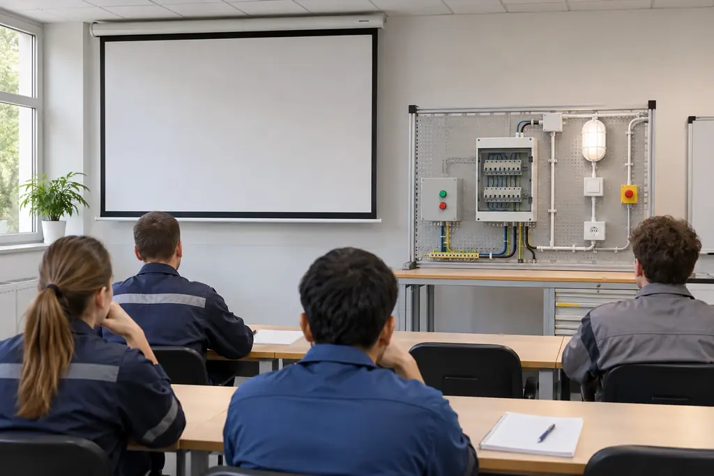
Lire la première phrase, puis révéler les encarts un à un (→ ou Espace) en demandant aux stagiaires de les reformuler. Les chiffres encadrés sont à contrôler dans la source avant la session.
Parcours
Préparer une décision professionnelle
Décrire ce qui est demandé avec un verbe précis : utiliser, nettoyer, remplacer, manœuvrer, rechercher une panne.
Identifier le circuit, l’environnement et les autres intervenants.
Comparer la mission à son titre et à ses compétences techniques.
Si une information manque, la demander avant d’agir.
L’ancienneté dans le métier ne remplace pas cette vérification.
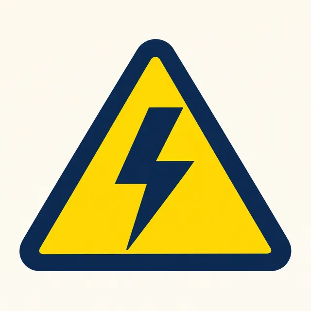
Lire la première phrase, puis révéler les encarts un à un (→ ou Espace) en demandant aux stagiaires de les reformuler. Les chiffres encadrés sont à contrôler dans la source avant la session.
Parcours
Une responsabilité partagée
Le formateur observe les savoirs et les savoir-faire et remet un avis après formation.
L’employeur organise les opérations et décide de l’habilitation.
Le travailleur respecte les limites et signale les changements.
La lecture de ce support et les résultats des exercices ne valent pas habilitation.
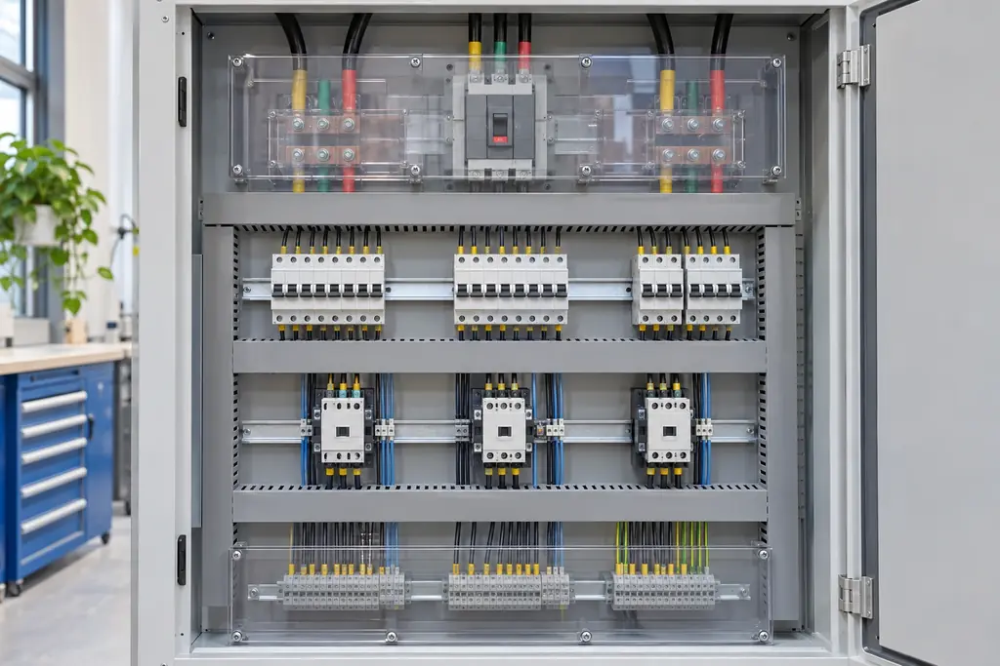
Lire la première phrase, puis révéler les encarts un à un (→ ou Espace) en demandant aux stagiaires de les reformuler. Les chiffres encadrés sont à contrôler dans la source avant la session.
Parcours
Actualité réglementaire
La rédaction de R4544-10 applicable depuis octobre 2025 conditionne les habilitations autorisant le voisinage de pièces nues sous tension à une attestation d’absence de contre-indications médicales.
L’employeur vérifie l’application au statut et aux opérations concernés.
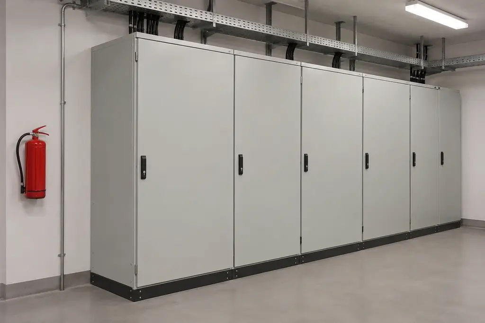
Lire la première phrase, puis révéler les encarts un à un (→ ou Espace) en demandant aux stagiaires de les reformuler. Les chiffres encadrés sont à contrôler dans la source avant la session.
Parcours
Approfondissement associé
Pourquoi habiliter et qui peut l’être : consulter « Repères & approfondissements » pour les tableaux et les situations à débattre.
Lire la première phrase, puis révéler les encarts un à un (→ ou Espace) en demandant aux stagiaires de les reformuler. Les chiffres encadrés sont à contrôler dans la source avant la session.
Parcours
Chez ADI : votre titre d'habilitation
Pour le métier d'installateur et de mainteneur de SSI, la fiche du titre professionnel prévoit des habilitations de l'employeur aux niveaux B2(V), B2(V) Essais, BR, BC et H0, limitées aux installations de sécurité incendie.
Votre titre dépend pourtant de vos opérations réelles, que votre employeur décrit dans son cahier des charges.
Une habilitation ne vaut que pour les opérations et l'environnement indiqués dans votre titre.
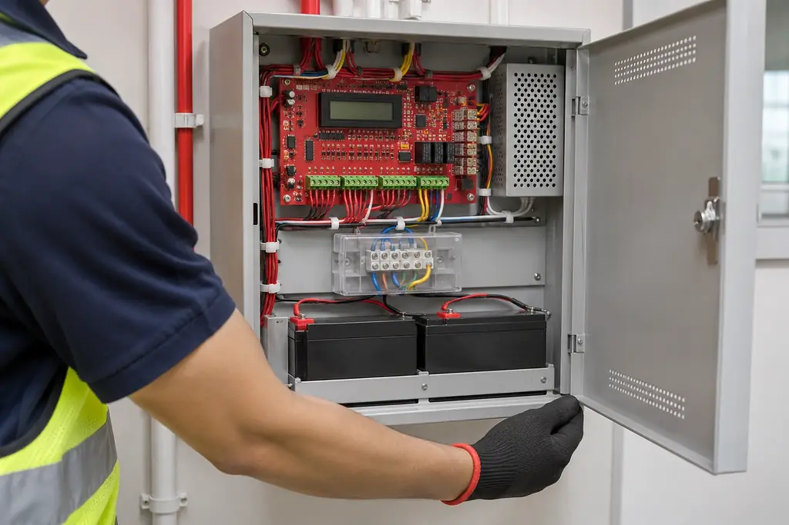
Lire la première phrase, puis révéler les encarts un à un (→ ou Espace) en demandant aux stagiaires de les reformuler. Les chiffres encadrés sont à contrôler dans la source avant la session.
Sources : R, S29, S41. Contenu à relire par le formateur [R].
Parcours
Mettons-nous à la place de l’habilité
Avant d’agir
Mission formulée
Titre et limites vérifiés
Instruction comprise
Interlocuteur identifié
Faire voter à main levée avant de révéler la réponse, reprendre la situation de départ, puis dérouler la liste des réflexes et demander à un stagiaire de la rejouer.
Parcours
Qui délivre le titre d’habilitation ?
Le formateur émet un avis ; l’employeur délivre le titre pour les missions confiées.
Réponse collective : main levée, puis toucher la réponse choisie par la salle. Reprendre oralement chaque erreur. Réponse attendue : B. Le formateur émet un avis ; l’employeur délivre le titre pour les missions confiées.
Parcours
Après la formation, une tâche nouvelle vous est confiée. Que vérifier ?
L’habilitation ne constitue pas une autorisation générale pour toutes les tâches électriques.
Réponse collective : main levée, puis toucher la réponse choisie par la salle. Reprendre oralement chaque erreur. Réponse attendue : B. L’habilitation ne constitue pas une autorisation générale pour toutes les tâches électriques.
Parcours
Comprendre le danger électrique
Reconnaître contact direct, contact indirect et arc.
Ouvrir le parcoursCours de base
50 min. Annoncer l’objectif, le périmètre (Tous) et le lien avec le métier d’ADI sécurité. Les stagiaires suivent sur leur téléphone via le QR (page « Parcours » du module 2).
Parcours
Les grandeurs utiles
La tension U, en volts, est une différence de potentiel.
L’intensité I, en ampères, décrit le courant.
La résistance R, en ohms, s’oppose au passage du courant.
Pour un conducteur ohmique, U = R × I.
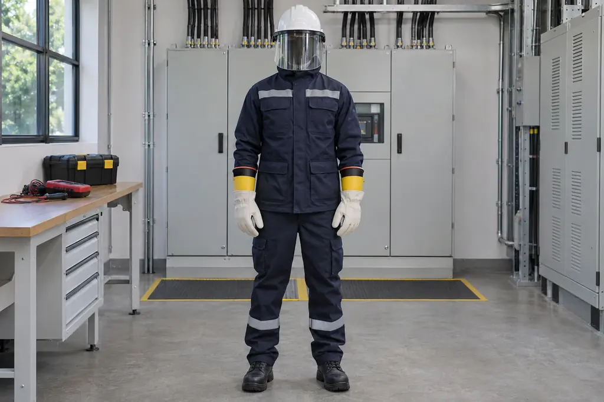
Lire la première phrase, puis révéler les encarts un à un (→ ou Espace) en demandant aux stagiaires de les reformuler. Les chiffres encadrés sont à contrôler dans la source avant la session.
À l’oral, en complément (détail dans la page du module) : La puissance active d’une charge résistive alimentée en monophasé s’écrit P = U × I.
Parcours
Trois mécanismes
Contact direct : toucher une partie active normalement sous tension.
Contact indirect : toucher une masse devenue accidentellement sous tension à la suite d’un défaut.
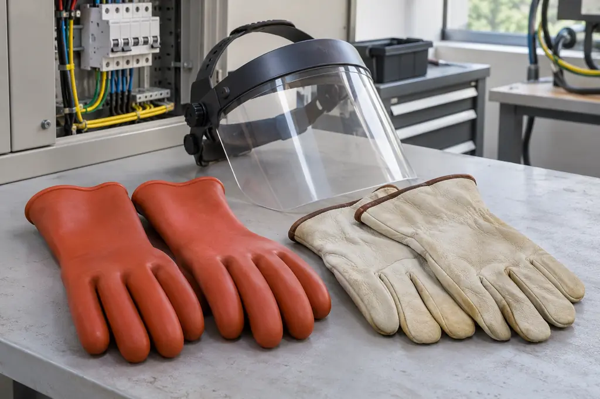
Lire la première phrase, puis révéler les encarts un à un (→ ou Espace) en demandant aux stagiaires de les reformuler. Les chiffres encadrés sont à contrôler dans la source avant la session.
Parcours
Des conséquences variables
L’électrisation est le passage du courant dans le corps ; l’électrocution désigne une issue mortelle.
Les conséquences dépendent notamment du trajet, de la durée, de l’intensité, de la fréquence et des conditions de contact.
L’humidité, l’état de la peau et les surfaces de contact modifient la situation.
Lire la première phrase, puis révéler les encarts un à un (→ ou Espace) en demandant aux stagiaires de les reformuler. Les chiffres encadrés sont à contrôler dans la source avant la session.
Parcours
Observer sans s’exposer
Rechercher un câble abîmé, une enveloppe ouverte, une odeur anormale, des traces d’échauffement ou de l’eau à proximité.
Arrêter l’utilisation suivant les consignes, empêcher une réutilisation involontaire et signaler les faits.
Les démonstrations du cours utilisent des matériels déconnectés ou une simulation.
Lire la première phrase, puis révéler les encarts un à un (→ ou Espace) en demandant aux stagiaires de les reformuler. Les chiffres encadrés sont à contrôler dans la source avant la session.
Parcours
Approfondir les bases
Le socle électrique rassemble 14 fiches : nature et circuits, courants, unités, résistance, corps humain, défauts, équipements, câblages, protections, classes et indices.
Les exercices de repérage se font sur matériels déconnectés ou sous la conduite du formateur.
Lire la première phrase, puis révéler les encarts un à un (→ ou Espace) en demandant aux stagiaires de les reformuler. Les chiffres encadrés sont à contrôler dans la source avant la session.
Parcours
Approfondissement associé
Accidents et intensité dans le corps : consulter « Repères & approfondissements » pour les tableaux et les situations à débattre.
Lire la première phrase, puis révéler les encarts un à un (→ ou Espace) en demandant aux stagiaires de les reformuler. Les chiffres encadrés sont à contrôler dans la source avant la session.
Parcours
Chez ADI : où rencontrer le danger dans une centrale
Sur une installation de sécurité incendie, le danger électrique se rencontre à l'armoire de la centrale, à son alimentation en basse tension et à sa batterie.
Les circuits de détection sont en très basse tension, mais l'alimentation de la centrale et celle des DAS ne se jugent pas sur l'apparence.
Une batterie reste une source d'énergie après la coupure du secteur.
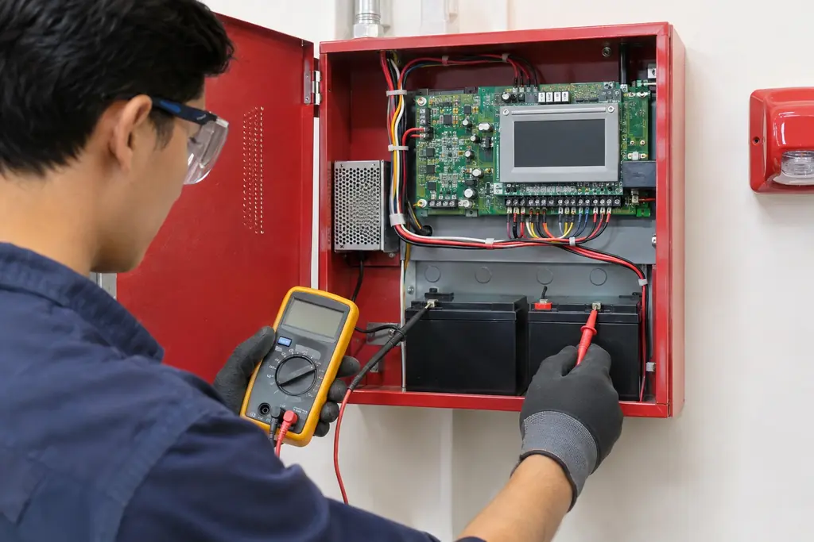
Lire la première phrase, puis révéler les encarts un à un (→ ou Espace) en demandant aux stagiaires de les reformuler. Les chiffres encadrés sont à contrôler dans la source avant la session.
Sources : R, S41, S44. Contenu à relire par le formateur [R].
Parcours
Mettons-nous à la place de l’habilité
Avant d’agir
État du matériel
Humidité et environnement
Sources identifiées
Défaut signalé
Faire voter à main levée avant de révéler la réponse, reprendre la situation de départ, puis dérouler la liste des réflexes et demander à un stagiaire de la rejouer.
Parcours
Toucher une masse devenue sous tension à la suite d’un défaut correspond à…
La masse n’est normalement pas sous tension : elle le devient accidentellement.
Réponse collective : main levée, puis toucher la réponse choisie par la salle. Reprendre oralement chaque erreur. Réponse attendue : A. La masse n’est normalement pas sous tension : elle le devient accidentellement.
Parcours
Un arc électrique peut-il provoquer une blessure sans contact avec le conducteur ?
L’arc peut entraîner brûlures, projections et effets de pression.
Réponse collective : main levée, puis toucher la réponse choisie par la salle. Reprendre oralement chaque erreur. Réponse attendue : B. L’arc peut entraîner brûlures, projections et effets de pression.
Parcours
Qui fait quoi ?
Choisir le bon relais sans élargir son rôle.
Ouvrir le parcoursCours de base
30 min. Annoncer l’objectif, le périmètre (Tous) et le lien avec le métier d’ADI sécurité. Les stagiaires suivent sur leur téléphone via le QR (page « Parcours » du module 3).
Parcours
Le parcours de la session
B0 : opérations non électriques en environnement basse tension.
H0 et H0V : opérations non électriques en environnement haute tension, avec des conditions de voisinage différentes.
BS : interventions élémentaires basse tension, dans leurs limites.
BE Manœuvre : manœuvres basse tension désignées.
L’attribut Manœuvre est essentiel ; BE seul ne précise pas l’opération.
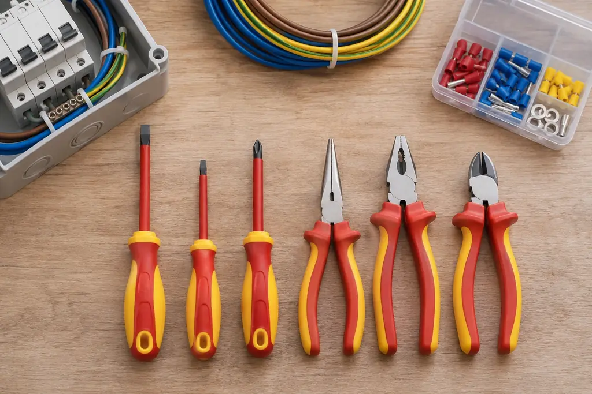
Lire la première phrase, puis révéler les encarts un à un (→ ou Espace) en demandant aux stagiaires de les reformuler. Les chiffres encadrés sont à contrôler dans la source avant la session.
Parcours
Les rôles présentés pour se repérer
BC concerne la consignation ; BR les interventions générales BT, dont le dépannage ; B1 l’exécution de travaux électriques et B2 leur conduite.
BE avec un autre attribut concerne une autre opération spécifique.
Ces rôles sont des repères de passage de relais dans cette session, pas des habilitations préparées ici.
Lire la première phrase, puis révéler les encarts un à un (→ ou Espace) en demandant aux stagiaires de les reformuler. Les chiffres encadrés sont à contrôler dans la source avant la session.
Parcours
Le métier ne détermine pas le symbole
Un agent de maintenance peut avoir plusieurs missions de natures différentes.
Un agent informatique peut utiliser un appareil ou intervenir sur une alimentation ; ce ne sont pas les mêmes opérations.
Une mission ne devient pas élémentaire parce qu’elle est courte ou habituelle.
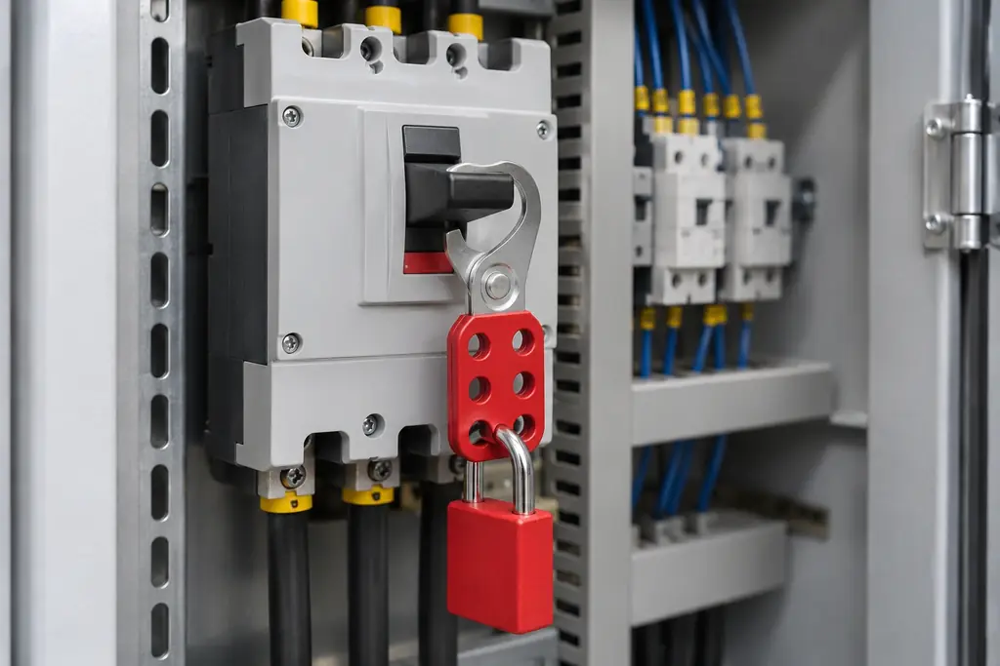
Lire la première phrase, puis révéler les encarts un à un (→ ou Espace) en demandant aux stagiaires de les reformuler. Les chiffres encadrés sont à contrôler dans la source avant la session.
Parcours
Exprimer un refus utile
Dire ce qui dépasse son périmètre, décrire les faits observés et demander le relais prévu.
Exemple : « L’appareil déclenche à nouveau.
Je suspends les manœuvres et demande une prise en charge du défaut. » Éviter les diagnostics improvisés et les consignes ambiguës telles que « remets-le comme avant ».
Lire la première phrase, puis révéler les encarts un à un (→ ou Espace) en demandant aux stagiaires de les reformuler. Les chiffres encadrés sont à contrôler dans la source avant la session.
Parcours
Chez ADI : qui fait quoi autour d'un SSI
Autour d'un SSI, le mainteneur agit sous contrat avec l'exploitant, qui tient le registre de sécurité et le dossier technique du système.
Le technicien consigne chaque intervention dans les fiches de maintenance et d'intervention.
Avant de toucher à une alimentation, il informe l'exploitant des parties du système qui seront hors service.
Lire la première phrase, puis révéler les encarts un à un (→ ou Espace) en demandant aux stagiaires de les reformuler. Les chiffres encadrés sont à contrôler dans la source avant la session.
Sources : R, S46. Contenu à relire par le formateur [R].
Parcours
Mettons-nous à la place de l’habilité
Avant d’agir
Opération nommée
Symbole complet
Restriction comprise
Relais prévu
Faire voter à main levée avant de révéler la réponse, reprendre la situation de départ, puis dérouler la liste des réflexes et demander à un stagiaire de la rejouer.
Parcours
BE Manœuvre permet à lui seul de rechercher une panne dans un tableau.
La recherche de panne dépasse l’opération spécifique de manœuvre.
Réponse collective : main levée, puis toucher la réponse choisie par la salle. Reprendre oralement chaque erreur. Réponse attendue : B. La recherche de panne dépasse l’opération spécifique de manœuvre.
Parcours
Quel symbole concerne les interventions BT générales ?
BR est le repère de relais pour les interventions générales BT, dans les limites du titre.
Réponse collective : main levée, puis toucher la réponse choisie par la salle. Reprendre oralement chaque erreur. Réponse attendue : B. BR est le repère de relais pour les interventions générales BT, dans les limites du titre.
Parcours
B0 · H0 · H0V : travailler dans la bonne zone
Maintenir corps, outils et matériaux dans les limites autorisées.
Ouvrir le parcoursCours de base
40 min. Annoncer l’objectif, le périmètre (B0 / H0 / H0V) et le lien avec le métier d’ADI sécurité. Les stagiaires suivent sur leur téléphone via le QR (page « Parcours » du module 4).
Parcours
Préparer le déplacement
Reconnaître l’accès autorisé, le cheminement et les limites du chantier.
Prendre en compte les outils, les manches, les tubes et les charges : la distance des pieds ne représente pas toute l’enveloppe de travail.
Anticiper les rotations, les gestes involontaires et les personnes qui peuvent entrer dans la zone.
Lire la première phrase, puis révéler les encarts un à un (→ ou Espace) en demandant aux stagiaires de les reformuler. Les chiffres encadrés sont à contrôler dans la source avant la session.
Parcours
BT et HT : ne pas transposer
Le B indique la basse tension et le H la haute tension.
Le V de H0V concerne le voisinage renforcé HT dans les conditions prévues.
Il n’autorise pas des travaux électriques.
Le symbole B0V n’existe pas.
Les limites de zone dépendent de l’installation et de sa tension : le plan et le balisage expliqués avant le travail sont indispensables.
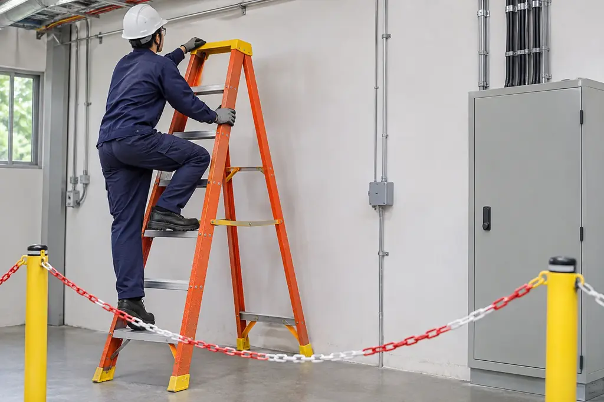
Lire la première phrase, puis révéler les encarts un à un (→ ou Espace) en demandant aux stagiaires de les reformuler. Les chiffres encadrés sont à contrôler dans la source avant la session.
Parcours
Exécutant et chargé de chantier
Le rôle doit être précisé.
L’exécutant suit la conduite et la surveillance prévues.
Le chargé de chantier organise la prévention du chantier non électrique dans son périmètre.
Une habilitation H0V ne permet pas d’entrer librement dans n’importe quel poste HT.
La suppression du voisinage reste à rechercher ; les opérations non électriques autorisées au voisinage sont limitées par leur finalité.
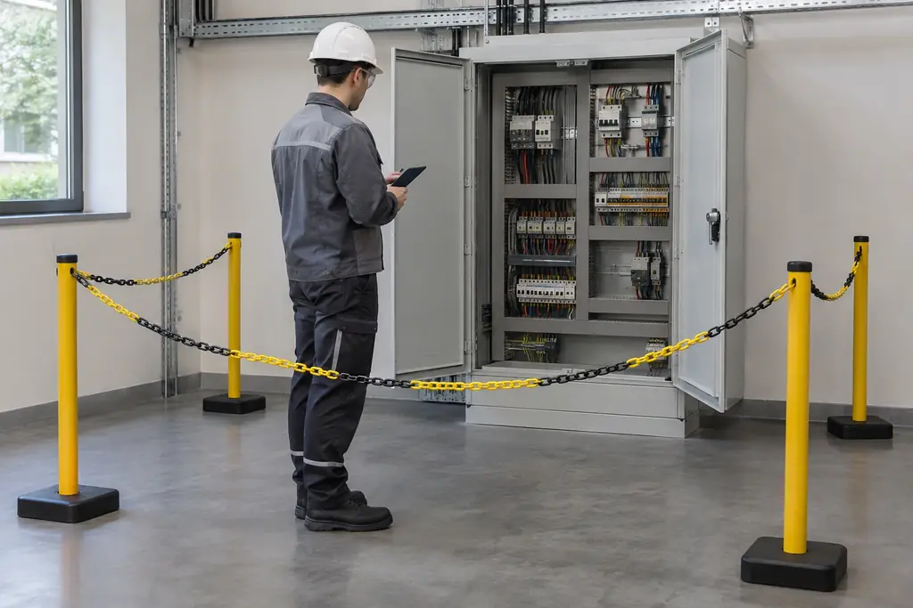
Lire la première phrase, puis révéler les encarts un à un (→ ou Espace) en demandant aux stagiaires de les reformuler. Les chiffres encadrés sont à contrôler dans la source avant la session.
Parcours
Une situation qui change impose une nouvelle décision
Une porte ouverte, un écran retiré ou un balisage déplacé change les conditions initiales.
Suspendre son activité, conserver une position sûre et alerter le responsable.
Lors des TP, les zones BT et HT sont matérialisées sur une installation représentative ou une simulation explicitement décrite.
Lire la première phrase, puis révéler les encarts un à un (→ ou Espace) en demandant aux stagiaires de les reformuler. Les chiffres encadrés sont à contrôler dans la source avant la session.
Parcours
Approfondissement associé
Distances, zones et travaux en hauteur : consulter « Repères & approfondissements » pour les tableaux et les situations à débattre.
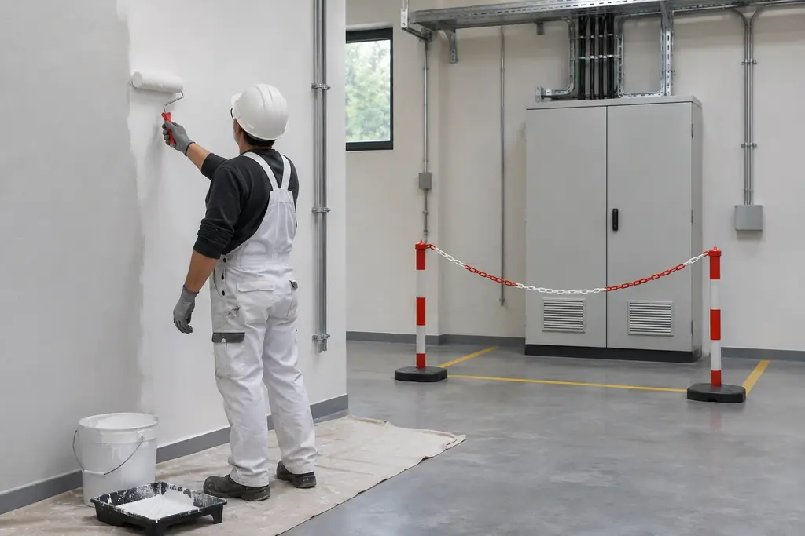
Lire la première phrase, puis révéler les encarts un à un (→ ou Espace) en demandant aux stagiaires de les reformuler. Les chiffres encadrés sont à contrôler dans la source avant la session.
Parcours
Chez ADI : zones d'un chantier SSI
Les opérations d'ADI se déroulent dans des locaux techniques, des armoires, des faux-plafonds et des circulations où passent aussi d'autres câbles.
Avant de commencer, identifier la nature et la tension des câbles voisins de ceux de la détection ou de l'alimentation de la centrale.
Tout travail près de conducteurs nus ou de tableaux ouverts se prépare avec les distances de la zone d'environnement.
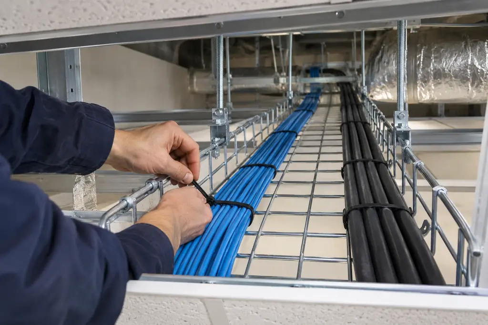
Lire la première phrase, puis révéler les encarts un à un (→ ou Espace) en demandant aux stagiaires de les reformuler. Les chiffres encadrés sont à contrôler dans la source avant la session.
Sources : R, S29. Contenu à relire par le formateur [R].
Parcours
Mettons-nous à la place de l’habilité
Avant d’agir
Accès reconnu
Zone expliquée
Encombrement anticipé
Balisage respecté
Faire voter à main levée avant de révéler la réponse, reprendre la situation de départ, puis dérouler la liste des réflexes et demander à un stagiaire de la rejouer.
Parcours
Pour transporter une échelle, quelle enveloppe prendre en compte ?
Les outils et matériaux peuvent franchir une limite avant le corps.
Réponse collective : main levée, puis toucher la réponse choisie par la salle. Reprendre oralement chaque erreur. Réponse attendue : B. Les outils et matériaux peuvent franchir une limite avant le corps.
Parcours
Un balisage est déplacé pendant la tâche. Que faire ?
Les conditions initiales ne sont plus réunies.
Réponse collective : main levée, puis toucher la réponse choisie par la salle. Reprendre oralement chaque erreur. Réponse attendue : C. Les conditions initiales ne sont plus réunies.
Parcours
Zones d'environnement et voisinage (H0V · B2V)
Situer les zones d'environnement et appliquer l'ordre de protection en voisinage.
40 min. Annoncer l’objectif, le périmètre (H0V, B2V) et le lien avec le métier d’ADI sécurité. Les stagiaires suivent sur leur téléphone via le QR (page « Parcours » du module 18).
Parcours
Repères
Autour d’une pièce nue sous tension, la zone de voisinage s’étend de la pièce jusqu’à 3 m pour les tensions jusqu’à 50 kV, BT comprise (arrêté du 9 juillet 2013, art.
2).
En BT, la limite du voisinage renforcé se confond avec la distance minimale d’approche, soit 0,30 m (INRS ED 6127, p.
40 ; annexe de l’arrêté, ligne 1 kV).
Les zones d’environnement : zone 0 investigation (jusqu’à 50 m), zone 1 voisinage simple, zone 2 voisinage renforcé HT, zone 3 travaux sous tension HT, zone 4 voisinage renforcé BT (manuel de préparation à l’habilitation électrique, p.
Lire la première phrase, puis révéler les encarts un à un (→ ou Espace) en demandant aux stagiaires de les reformuler. Les chiffres encadrés sont à contrôler dans la source avant la session.
À l’oral, en complément (détail dans la page du module) : On y distingue le voisinage simple (zone la plus éloignée) et le voisinage renforcé (zone la plus proche). 50-55).
Parcours
Tableau de synthèse
| Situation | Réflexe |
|---|---|
| Voisinage simple (zone 1) | Accessible aux B0 / H0 selon le titre (comme aux B1, B2, BS en BT) ; surveillance et matérialisation de la zone. |
| Voisinage renforcé BT (zone 4, de 0,30 m à la pièce nue) | Accès sur autorisation de travail ou d’intervention, avec habilitation de voisinage renforcé (B1V, B2V, BR, BC, BE, B1T, B2T…) ; B0 non admis. Ordre de protection : 1) consigner pour supprimer le voisinage ; 2) à défaut, interposer un obstacle (habillage, nappage, écran) ; 3) à défaut, opérer avec protection faciale et gants isolants (travail sans gants ni écran facial interdit). |
| Voisinage renforcé HT (zone 2) | Habilitations H0V, H1V, H2V, HC, HE ; surveillance par un surveillant de sécurité électrique pour H1V / H2V. |
| Rôle du B2V | Prépare l’opération, délimite la zone, donne les consignes, assure la sécurité de son équipe, ne commence qu’après consignation ou mise hors de portée assurée. |
Lire une ligne, demander aux stagiaires de la compléter avant de révéler la suivante.
Parcours
À retenir
Piège.
Lire la première phrase, puis révéler les encarts un à un (→ ou Espace) en demandant aux stagiaires de les reformuler. Les chiffres encadrés sont à contrôler dans la source avant la session.
Parcours
À retenir
À l’oral :
Lire la première phrase, puis révéler les encarts un à un (→ ou Espace) en demandant aux stagiaires de les reformuler. Les chiffres encadrés sont à contrôler dans la source avant la session.
Parcours
Chez ADI : zones et voisinage dans un local technique
En local technique, la proximité de pièces nues sous tension, de tableaux ouverts et de câbles se juge avant d'ouvrir l'armoire de la centrale.
Le voisinage renforcé (V) impose des dispositions supplémentaires et le titre doit l'indiquer.
Lire la première phrase, puis révéler les encarts un à un (→ ou Espace) en demandant aux stagiaires de les reformuler. Les chiffres encadrés sont à contrôler dans la source avant la session.
Sources : R, S29. Contenu à relire par le formateur [R].
Parcours
Partie 04 · Voisinage électrique
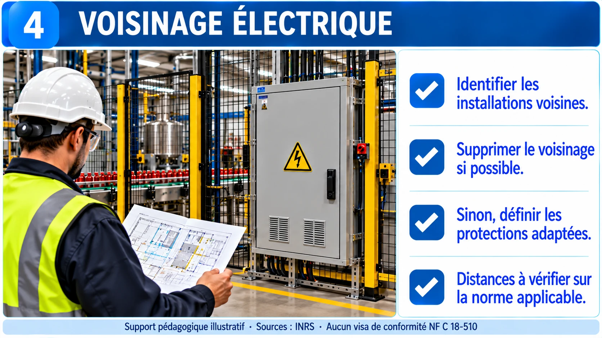
Partie 04 · Voisinage électrique Schéma de principe, non à l’échelle ; il ne remplace ni la notice du constructeur ni les prescriptions.
Parcours
V09 · Voisinage
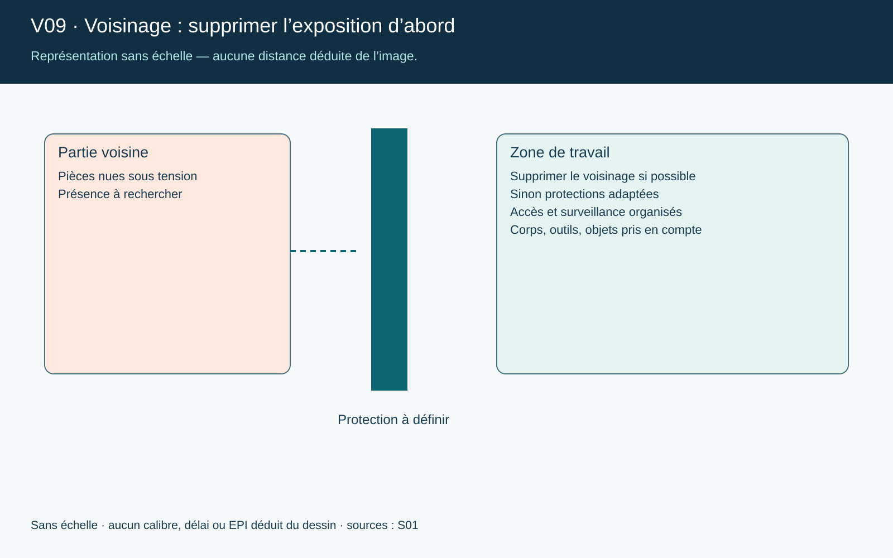
V09 · Voisinage : supprimer l’exposition d’abordÉviter les distances visuelles arbitraires et les zones dessinées comme sûres. Schéma de principe, non à l’échelle ; il ne remplace ni la notice du constructeur ni les prescriptions.
Parcours
V18 · Cadrer l’opération avant de commencerStructurer l’analyse préalable sans produire un permis de travail fictif
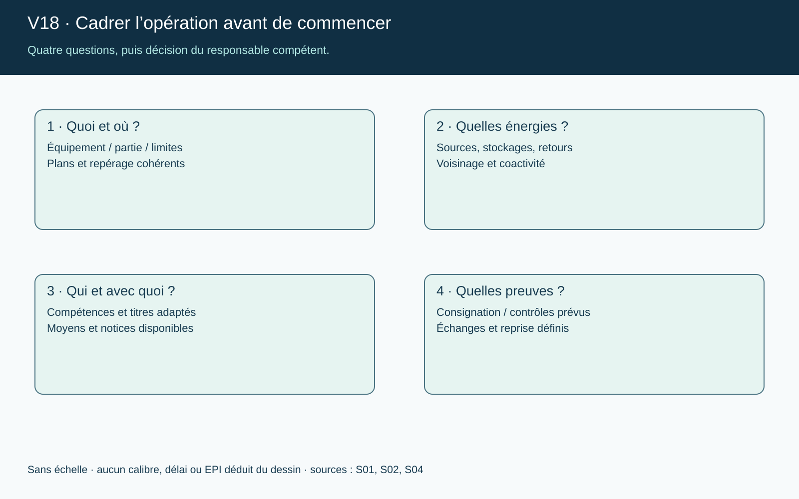
V18 · Cadrer l’opération avant de commencerStructurer l’analyse préalable sans produire un permis de travail fictif. Schéma de principe, non à l’échelle ; il ne remplace ni la notice du constructeur ni les prescriptions.
Parcours
V11 · Nettoyage et électricité
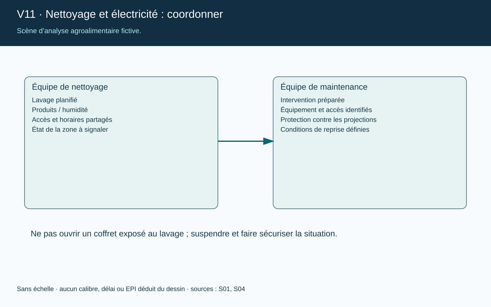
V11 · Nettoyage et électricité : coordonnerRepérer l’humidité et la coactivité comme facteurs de risque. Schéma de principe, non à l’échelle ; il ne remplace ni la notice du constructeur ni les prescriptions.
Parcours
V10 · EPI
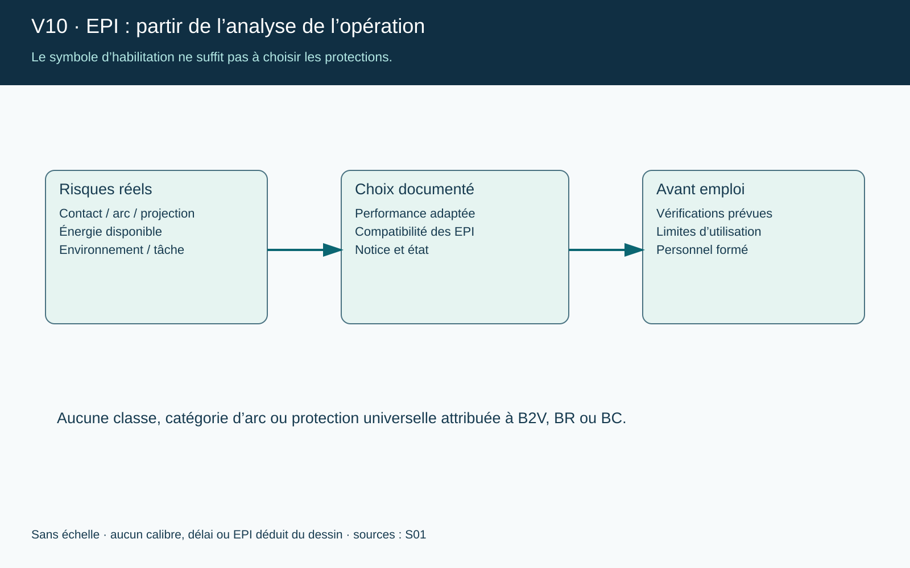
V10 · EPI : partir de l’analyse de l’opérationÉviter les kits d’EPI présentés comme suffisants dans tous les cas. Schéma de principe, non à l’échelle ; il ne remplace ni la notice du constructeur ni les prescriptions.
Parcours
Le symbole H0V concerne :
0 = non électricien ; V = voisinage.
Réponse collective : main levée, puis toucher la réponse choisie par la salle. Reprendre oralement chaque erreur. Réponse attendue : A. 0 = non électricien ; V = voisinage.
Parcours
En BT, la limite de voisinage renforcé autour d’une pièce nue sous tension est :
0,30 m en BT (ED 6127 p. 40 et annexe de l’arrêté du 9 juillet 2013) ; la zone de voisinage va jusqu’à 3 m.
Réponse collective : main levée, puis toucher la réponse choisie par la salle. Reprendre oralement chaque erreur. Réponse attendue : A. 0,30 m en BT (ED 6127 p. 40 et annexe de l’arrêté du 9 juillet 2013) ; la zone de voisinage va jusqu’à 3 m.
Parcours
BS : préparer une intervention élémentaire
Reconnaître une intervention admissible et ses conditions.
Ouvrir le parcoursCours de base
40 min. Annoncer l’objectif, le périmètre (BS) et le lien avec le métier d’ADI sécurité. Les stagiaires suivent sur leur téléphone via le QR (page « Parcours » du module 5).
Parcours
Définir l’intervention
Les exemples comprennent certains remplacements à l’identique et le raccordement d’un matériel à un circuit en attente sur bornier adapté.
La recherche de panne n’est pas une mission BS.
Vérifier les limites techniques du circuit avant de retenir l’intervention.
Lire la première phrase, puis révéler les encarts un à un (→ ou Espace) en demandant aux stagiaires de les reformuler. Les chiffres encadrés sont à contrôler dans la source avant la session.
Parcours
Repères chiffrés BS à contrôler ensemble
La FAQ INRS consultée indique : alimentation ≤ 400 V CA ou ≤ 600 V CC ; protection de courant assigné ≤ 32 A CA ou ≤ 16 A CC ; section ≤ 6 mm² cuivre ou ≤ 10 mm² aluminium.
Ces limites sont cumulatives avec les autres conditions de l’intervention ; elles ne suffisent pas à autoriser une tâche.
Vérifier le référentiel consolidé, le circuit terminal et les prescriptions applicables avant le TP.
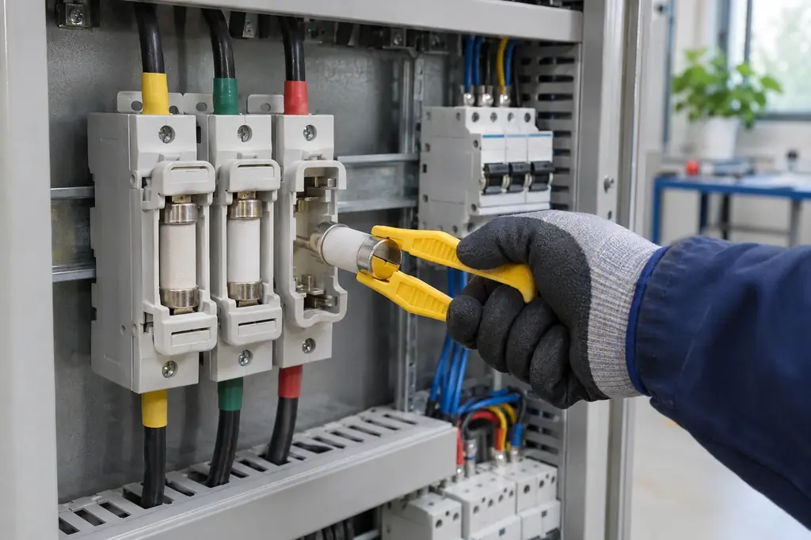
Lire la première phrase, puis révéler les encarts un à un (→ ou Espace) en demandant aux stagiaires de les reformuler. Les chiffres encadrés sont à contrôler dans la source avant la session.
Parcours
Les conditions de réalisation
L’intervention BS se réalise hors tension et sans voisinage.
Le BS effectue la mise hors tension pour sa propre intervention et n’a pas d’exécutant sous ses ordres.
Cette organisation se distingue de la consignation réalisée pour permettre le travail d’une autre équipe.
Lire la première phrase, puis révéler les encarts un à un (→ ou Espace) en demandant aux stagiaires de les reformuler. Les chiffres encadrés sont à contrôler dans la source avant la session.
Parcours
Identifier avant de séparer
Une étiquette douteuse n’est pas une identification.
Rechercher toutes les sources possibles : réseau, secours, onduleur, alimentation provenant d’un autre circuit.
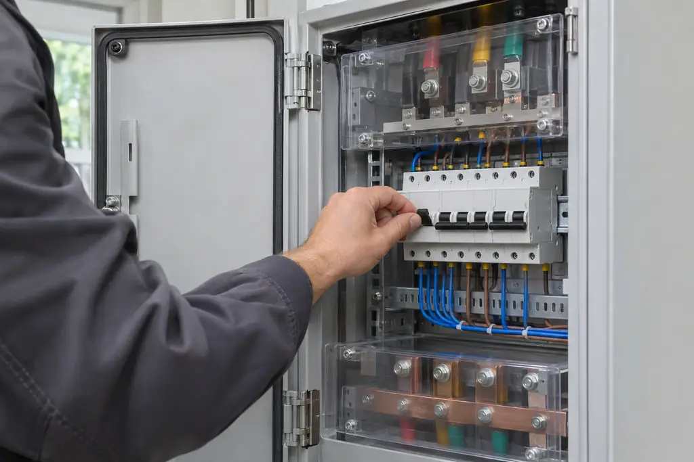
Lire la première phrase, puis révéler les encarts un à un (→ ou Espace) en demandant aux stagiaires de les reformuler. Les chiffres encadrés sont à contrôler dans la source avant la session.
Parcours
Préparer la remise en service
Prévoir dès le début le matériel de remplacement compatible, l’outillage, les protections, le contrôle du travail et les personnes à informer.
Après intervention, vérifier que les conditions de remise en service sont réunies et rendre compte.
Un défaut constaté à ce stade impose l’arrêt ; il ne justifie pas de commencer un dépannage hors périmètre.
Lire la première phrase, puis révéler les encarts un à un (→ ou Espace) en demandant aux stagiaires de les reformuler. Les chiffres encadrés sont à contrôler dans la source avant la session.
Parcours
Chez ADI : l'intervention élémentaire sur un SSI
Dans le métier, des opérations simples comme remplacer un détecteur, un diffuseur ou une batterie de petite capacité sont à examiner comme interventions élémentaires dans les limites du BS.
Dans chaque cas, c'est l'opération telle qu'elle est décrite par l'employeur qui compte, pas le matériel.
Dès qu'il faut chercher la cause d'un défaut, l'opération dépasse l'élémentaire.
Lire la première phrase, puis révéler les encarts un à un (→ ou Espace) en demandant aux stagiaires de les reformuler. Les chiffres encadrés sont à contrôler dans la source avant la session.
Sources : R, S29. Contenu à relire par le formateur [R].
Parcours
Mettons-nous à la place de l’habilité
Avant d’agir
Nature élémentaire
Limites techniques vérifiées
Hors tension et sans voisinage
Toutes les sources repérées
Remplacement compatible
Faire voter à main levée avant de révéler la réponse, reprendre la situation de départ, puis dérouler la liste des réflexes et demander à un stagiaire de la rejouer.
Parcours
Une identification de circuit illisible permet-elle de choisir au hasard ?
Une identification fiable précède l’intervention.
Réponse collective : main levée, puis toucher la réponse choisie par la salle. Reprendre oralement chaque erreur. Réponse attendue : B. Une identification fiable précède l’intervention.
Parcours
Le BS peut-il diriger un exécutant sous ses ordres ?
Le chargé d’intervention BT élémentaire n’a pas d’exécutant sous ses ordres.
Réponse collective : main levée, puis toucher la réponse choisie par la salle. Reprendre oralement chaque erreur. Réponse attendue : B. Le chargé d’intervention BT élémentaire n’a pas d’exécutant sous ses ordres.
Parcours
Mise en sécurité · VAT · équipements
Expliquer les contrôles au lieu de reproduire un geste.
Ouvrir le parcoursCours de base
30 min. Annoncer l’objectif, le périmètre (BS / BE Manœuvre : selon mission) et le lien avec le métier d’ADI sécurité. Les stagiaires suivent sur leur téléphone via le QR (page « Parcours » du module 6).
Parcours
Arrêt, séparation et absence de tension
L’arrêt fonctionnel d’un appareil n’établit pas son absence de tension.
Pour sa mise en sécurité, le BS suit les prescriptions de préidentification, séparation, condamnation et vérification d’absence de tension.
La procédure est démontrée avec le matériel du banc et sa notice ; un bouton d’arrêt ne remplace pas ces étapes.
Lire la première phrase, puis révéler les encarts un à un (→ ou Espace) en demandant aux stagiaires de les reformuler. Les chiffres encadrés sont à contrôler dans la source avant la session.
Parcours
Vérifier avec le bon équipement
La VAT repose sur un dispositif prévu pour cette fonction et adapté à l’installation.
Un tournevis testeur, un détecteur sans contact ou un voyant ne remplacent pas la VAT.
Vérifier le fonctionnement du dispositif avant et après la vérification selon sa notice.
Le formateur fait identifier les points de contrôle et les protections nécessaires sur le montage utilisé.
Lire la première phrase, puis révéler les encarts un à un (→ ou Espace) en demandant aux stagiaires de les reformuler. Les chiffres encadrés sont à contrôler dans la source avant la session.
Parcours
Choisir et contrôler les moyens
Examiner l’adéquation des équipements à l’opération, leur état, leur marquage et les contrôles prescrits.
Un manche plastique ne suffit pas à qualifier un outil d’isolé.
Écarter un gant abîmé ou un équipement dont le contrôle requis n’est pas établi.
Les protections individuelles ne rendent pas admissible une tâche hors du périmètre autorisé.
Lire la première phrase, puis révéler les encarts un à un (→ ou Espace) en demandant aux stagiaires de les reformuler. Les chiffres encadrés sont à contrôler dans la source avant la session.
Parcours
Réagir à une vérification non concluante
Une présence de tension, un appareil qui ne satisfait pas son contrôle de fonctionnement ou un point inaccessible interdit de conclure à l’absence de tension.
Arrêter, maintenir la sécurité de la zone et demander l’analyse compétente.
La remise en service attend la fin de l’intervention et les contrôles prévus.
Lire la première phrase, puis révéler les encarts un à un (→ ou Espace) en demandant aux stagiaires de les reformuler. Les chiffres encadrés sont à contrôler dans la source avant la session.
Parcours
Approfondissement associé
VAT 2P/2P+T, terre et MALT/CC : consulter « Repères & approfondissements » pour les tableaux et les situations à débattre.
Lire la première phrase, puis révéler les encarts un à un (→ ou Espace) en demandant aux stagiaires de les reformuler. Les chiffres encadrés sont à contrôler dans la source avant la session.
Parcours
Chez ADI : mettre hors tension une centrale et son AES
Mettre hors tension une ECS ne se limite pas à couper le secteur : l'AES et sa batterie sont à traiter aussi.
Les installations alimentées par une AES comprennent le SSI et l'éclairage de sécurité.
Avant d'intervenir, repérer chaque source, puis vérifier l'absence de tension à l'endroit où l'on travaille.
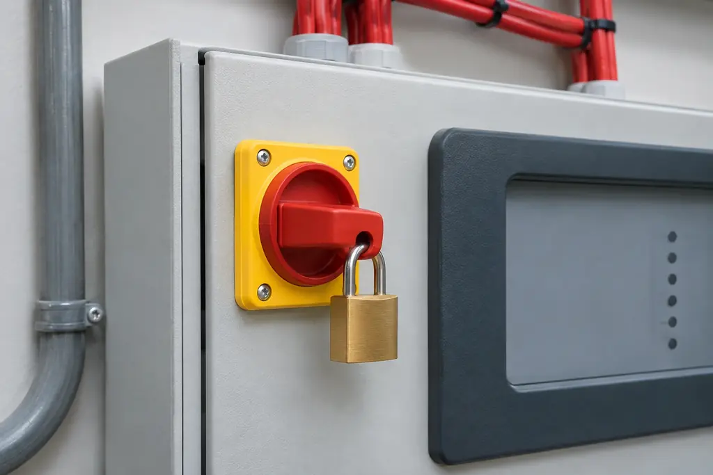
Lire la première phrase, puis révéler les encarts un à un (→ ou Espace) en demandant aux stagiaires de les reformuler. Les chiffres encadrés sont à contrôler dans la source avant la session.
Sources : R, S44. Contenu à relire par le formateur [R].
Parcours
Mettons-nous à la place de l’habilité
Avant d’agir
Sources et circuit
Séparation et condamnation
Dispositif adapté
Contrôles avant/après
Résultat concluant
Faire voter à main levée avant de révéler la réponse, reprendre la situation de départ, puis dérouler la liste des réflexes et demander à un stagiaire de la rejouer.
Parcours
Un voyant éteint suffit-il pour conclure à l’absence de tension ?
Un état fonctionnel ne remplace pas une VAT.
Réponse collective : main levée, puis toucher la réponse choisie par la salle. Reprendre oralement chaque erreur. Réponse attendue : B. Un état fonctionnel ne remplace pas une VAT.
Parcours
Le contrôle final du dispositif de VAT échoue. Peut-on conclure ?
La vérification n’est pas concluante ; arrêter et faire traiter la situation.
Réponse collective : main levée, puis toucher la réponse choisie par la salle. Reprendre oralement chaque erreur. Réponse attendue : B. La vérification n’est pas concluante ; arrêter et faire traiter la situation.
Parcours
BE Manœuvre : exécuter et rendre compte
Réaliser une commande définie et traiter une anomalie.
Ouvrir le parcoursCours de base
30 min. Annoncer l’objectif, le périmètre (BE Manœuvre) et le lien avec le métier d’ADI sécurité. Les stagiaires suivent sur leur téléphone via le QR (page « Parcours » du module 7).
Parcours
Comprendre ce que l’on commande
Identifier l’appareil, sa fonction, son état initial et l’effet attendu.
Un interrupteur, un sectionneur et un disjoncteur n’ont pas des fonctions interchangeables.
Lire les instructions et vérifier que l’appareil permet la manœuvre prévue dans les conditions rencontrées.
Lire la première phrase, puis révéler les encarts un à un (→ ou Espace) en demandant aux stagiaires de les reformuler. Les chiffres encadrés sont à contrôler dans la source avant la session.
Parcours
La limite est l’opération confiée
Le BE Manœuvre exécute les manœuvres correspondant à sa mission.
Il ne répare pas l’installation et ne recherche pas la panne sur la seule base de ce symbole.
Lorsqu’il réalise une manœuvre participant à une consignation, il agit dans l’organisation définie ; il ne devient pas chargé de consignation.
Lire la première phrase, puis révéler les encarts un à un (→ ou Espace) en demandant aux stagiaires de les reformuler. Les chiffres encadrés sont à contrôler dans la source avant la session.
Parcours
Observer avant et après
Rechercher un défaut visible, une identification incohérente ou une commande non conforme à la consigne.
Adopter la position et les protections prescrites.
Vérifier l’état obtenu sans improviser de mesurage.
Comparer le résultat à ce qui était attendu et informer le demandeur.
Lire la première phrase, puis révéler les encarts un à un (→ ou Espace) en demandant aux stagiaires de les reformuler. Les chiffres encadrés sont à contrôler dans la source avant la session.
Parcours
Un nouveau déclenchement est une information
Suspendre les tentatives, décrire le phénomène et faire prendre en charge l’anomalie.
La pression pour remettre rapidement un service en marche ne modifie pas le périmètre de l’habilitation.
Lire la première phrase, puis révéler les encarts un à un (→ ou Espace) en demandant aux stagiaires de les reformuler. Les chiffres encadrés sont à contrôler dans la source avant la session.
Parcours
Chez ADI : manœuvres et essais sur un SSI
Mettre un secteur du SSI en veille, déclencher un détecteur pour tester un asservissement ou actionner un déclencheur manuel sont des gestes de métier.
Ils produisent des effets sur le bâtiment (alarme, portes, désenfumage) qu'il faut annoncer à l'exploitant.
Une partie du système hors service impose des mesures compensatoires.
Lire la première phrase, puis révéler les encarts un à un (→ ou Espace) en demandant aux stagiaires de les reformuler. Les chiffres encadrés sont à contrôler dans la source avant la session.
Sources : R, S46, S48. Contenu à relire par le formateur [R].
Parcours
Mettons-nous à la place de l’habilité
Avant d’agir
Appareil identifié
Ordre compris
Conditions réunies
État final observé
Compte rendu
Faire voter à main levée avant de révéler la réponse, reprendre la situation de départ, puis dérouler la liste des réflexes et demander à un stagiaire de la rejouer.
Parcours
Le dispositif déclenche de nouveau après un réarmement autorisé. Que faire ?
Ne pas transformer la manœuvre en dépannage ou neutralisation de protection.
Réponse collective : main levée, puis toucher la réponse choisie par la salle. Reprendre oralement chaque erreur. Réponse attendue : C. Ne pas transformer la manœuvre en dépannage ou neutralisation de protection.
Parcours
Une étiquette manque sur l’organe commandé. Quelle décision ?
L’identification évite une manœuvre sur le mauvais circuit.
Réponse collective : main levée, puis toucher la réponse choisie par la salle. Reprendre oralement chaque erreur. Réponse attendue : B. L’identification évite une manœuvre sur le mauvais circuit.
Parcours
Accident · incendie · alerte
Protéger sans devenir une seconde victime.
Ouvrir le parcoursCours de base
60 min. Annoncer l’objectif, le périmètre (Tous) et le lien avec le métier d’ADI sécurité. Les stagiaires suivent sur leur téléphone via le QR (page « Parcours » du module 8).
Parcours
Ne pas précipiter le contact
Avant de toucher la victime ou l’équipement, identifier le danger et empêcher les autres de s’exposer.
La visibilité de la victime ne signifie pas que l’accès est sûr.
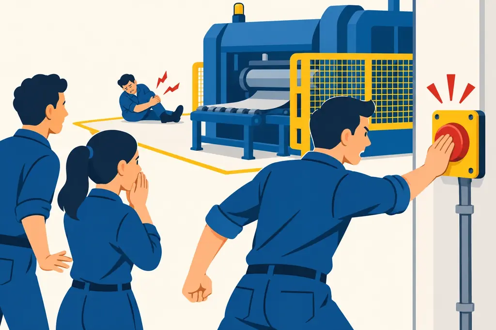
Lire la première phrase, puis révéler les encarts un à un (→ ou Espace) en demandant aux stagiaires de les reformuler. Les chiffres encadrés sont à contrôler dans la source avant la session.
Parcours
Supprimer le danger sans s’exposer
Appliquer les consignes de coupure accessibles et identifiées lorsque cela peut être fait en sécurité.
Le premier arrêt d’urgence aperçu n’est pas une garantie de suppression de toutes les alimentations.
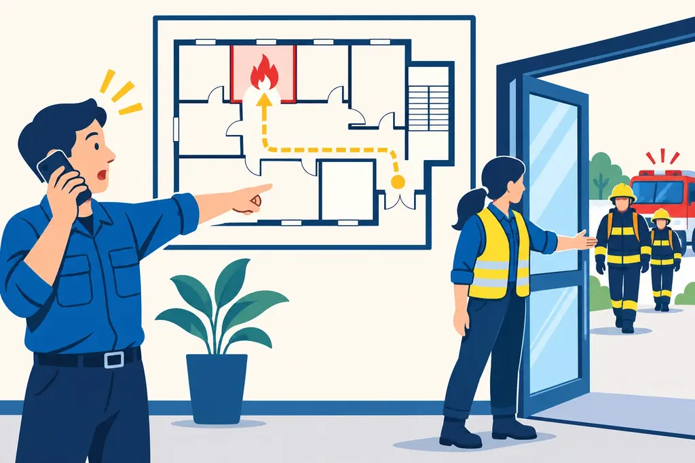
Lire la première phrase, puis révéler les encarts un à un (→ ou Espace) en demandant aux stagiaires de les reformuler. Les chiffres encadrés sont à contrôler dans la source avant la session.
Parcours
Transmettre une alerte exploitable
Donner le lieu exact, l’accès, la nature électrique du danger, le nombre et l’état apparent des victimes ainsi que les actions réalisées.
Appliquer les consignes du site et celles des secours.
Désigner une personne pour guider leur arrivée si l’organisation le permet.
Une fois l’accès sûr, agir selon sa formation de secouriste et les instructions reçues.
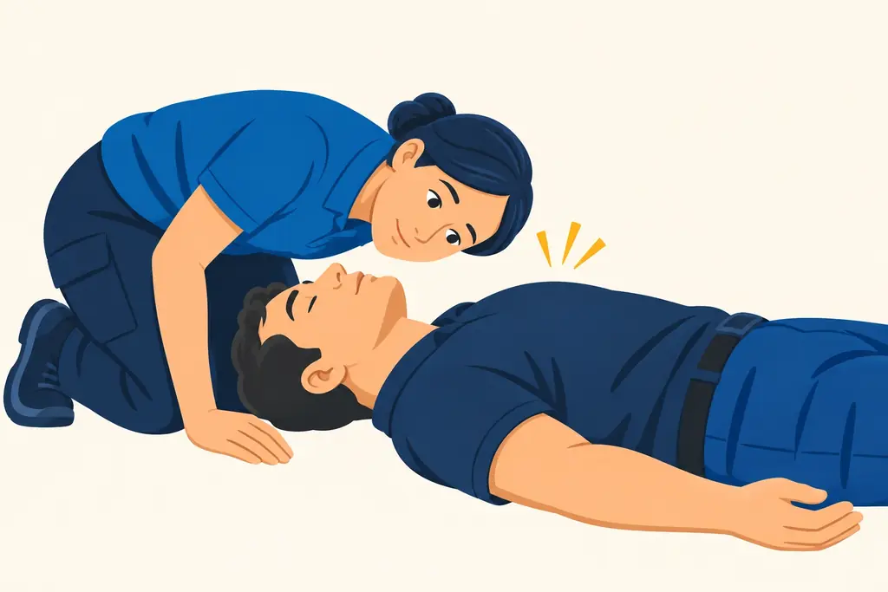
Lire la première phrase, puis révéler les encarts un à un (→ ou Espace) en demandant aux stagiaires de les reformuler. Les chiffres encadrés sont à contrôler dans la source avant la session.
Parcours
Incendie et retour d’expérience
Déclencher l’alerte, protéger l’évacuation et appliquer les consignes incendie.
N’utiliser un moyen d’extinction que dans les conditions de sécurité et de formation prévues.
Après l’événement, conserver les faits utiles : heure, matériel, observations et actions.
Lire la première phrase, puis révéler les encarts un à un (→ ou Espace) en demandant aux stagiaires de les reformuler. Les chiffres encadrés sont à contrôler dans la source avant la session.
Parcours
Approfondissement associé
Conduite SST après électrisation : consulter « Repères & approfondissements » pour les tableaux et les situations à débattre.
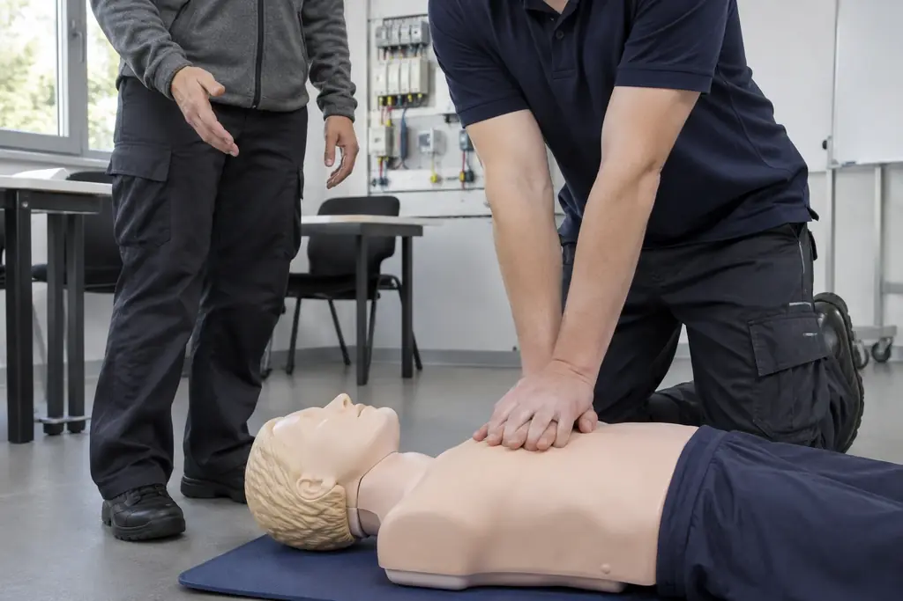
Lire la première phrase, puis révéler les encarts un à un (→ ou Espace) en demandant aux stagiaires de les reformuler. Les chiffres encadrés sont à contrôler dans la source avant la session.
Parcours
Les trois actions selon l'INRS
Couper le courant sans toucher la victime ; si ce n'est pas possible, la dégager des parties sous tension sans exposer d'autre personne.
Alerter le sauveteur secouriste du travail, puis les secours : 15, 18 ou 112.
Secourir en restant auprès de la victime jusqu'à l'arrivée des secours.
Les premières minutes sont déterminantes, et toute personne qui travaille près d'installations sous tension doit avoir des notions de secourisme.
Les gestes détaillés du sauveteur secouriste du travail ne sont pas repris ici : ils relèvent de la formation SST.
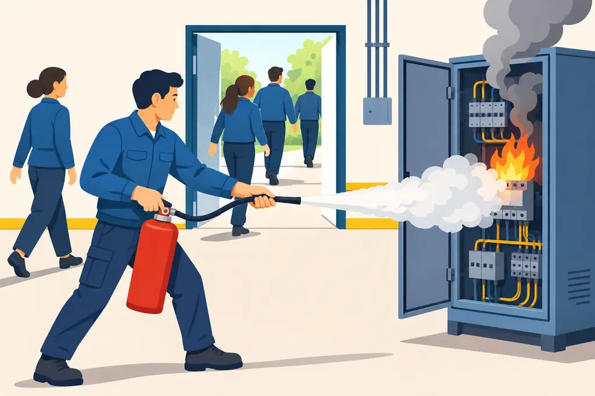
Lire la première phrase, puis révéler les encarts un à un (→ ou Espace) en demandant aux stagiaires de les reformuler. Les chiffres encadrés sont à contrôler dans la source avant la session.
Sources : R, S31. Contenu à relire par le formateur [R].
Parcours
Protéger avant de secourir (cadre SST)
Avant d'approcher la victime, analyser ce qui s'est passé et chercher les dangers persistants : mécanique, électrique, thermique, atmosphère irrespirable.
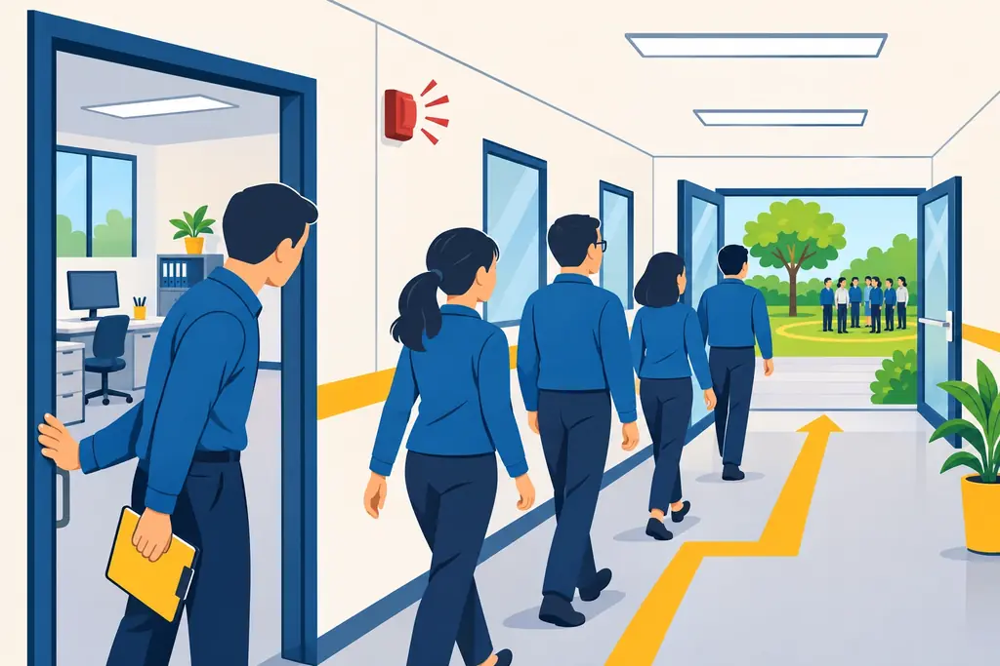
Lire la première phrase, puis révéler les encarts un à un (→ ou Espace) en demandant aux stagiaires de les reformuler. Les chiffres encadrés sont à contrôler dans la source avant la session.
Sources : S33, S35. Contenu à relire par le formateur [R].
Parcours
Habilitation électrique et SST : deux compétences distinctes
Les gestes acquis à l'habilitation électrique ne remplacent pas ceux de la formation de sauveteur secouriste du travail.
La réglementation n'oblige pas à former les habilités au SST : la décision revient à l'employeur après consultation du médecin du travail.
La double compétence est recommandée.
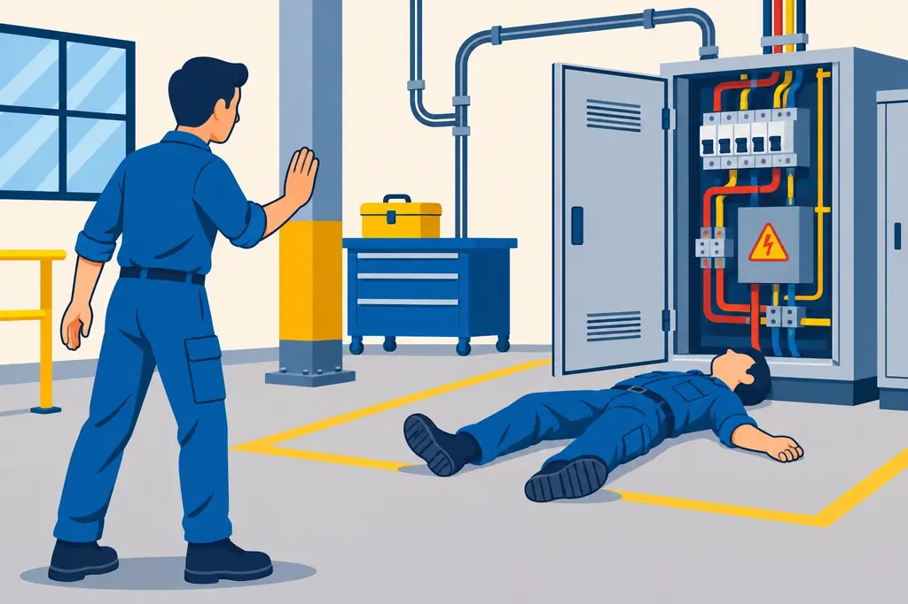
Lire la première phrase, puis révéler les encarts un à un (→ ou Espace) en demandant aux stagiaires de les reformuler. Les chiffres encadrés sont à contrôler dans la source avant la session.
Sources : S34. Contenu à relire par le formateur [R].
Parcours
Brûlure électrique : conduite à tenir
Après la protection et l'examen, arroser la zone brûlée à l'eau courante tempérée, alerter les secours puis surveiller la victime : lui parler, la protéger du froid, de la chaleur et des intempéries.
L'arrosage dure au moins dix minutes, idéalement vingt.
Lire la première phrase, puis révéler les encarts un à un (→ ou Espace) en demandant aux stagiaires de les reformuler. Les chiffres encadrés sont à contrôler dans la source avant la session.
Sources : S33, S35. Contenu à relire par le formateur [R].
Parcours
Chez ADI : un essai ou une vraie alarme ?
Pendant une vérification, un déclenchement volontaire ne doit jamais être confondu avec un incendie réel : on prévient l'exploitant avant et après l'essai.
En cas d'accident électrique, on applique la conduite des secours : protéger, alerter, secourir.
Si le SSI est partiellement hors service, des mesures compensatoires protègent les occupants.
Lire la première phrase, puis révéler les encarts un à un (→ ou Espace) en demandant aux stagiaires de les reformuler. Les chiffres encadrés sont à contrôler dans la source avant la session.
Sources : R, S31, S46. Contenu à relire par le formateur [R].
Parcours
Mettons-nous à la place de l’habilité
Avant d’agir
Danger repéré
Tiers protégés
Alerte précise
Accès des secours
Gestes adaptés
Faire voter à main levée avant de révéler la réponse, reprendre la situation de départ, puis dérouler la liste des réflexes et demander à un stagiaire de la rejouer.
Parcours
Une victime est visible près d’un câble endommagé. Peut-on la toucher immédiatement ?
Il faut éviter une seconde victime.
Réponse collective : main levée, puis toucher la réponse choisie par la salle. Reprendre oralement chaque erreur. Réponse attendue : B. Il faut éviter une seconde victime.
Parcours
Quelle alerte est la plus exploitable ?
Les secours doivent comprendre le risque et pouvoir accéder au lieu.
Réponse collective : main levée, puis toucher la réponse choisie par la salle. Reprendre oralement chaque erreur. Réponse attendue : B. Les secours doivent comprendre le risque et pouvoir accéder au lieu.
Parcours
Études de cas d'accidents d'origine électrique
Analyser des accidents réels d'origine électrique pour retrouver la cause, la barrière qui a manqué et la règle d'habilitation qui s'applique.
Ouvrir le parcoursCours de base
20 min. Annoncer l’objectif, le périmètre (Tous) et le lien avec le métier d’ADI sécurité. Les stagiaires suivent sur leur téléphone via le QR (page « Parcours » du module 23).
Parcours
Un risque rare mais grave
Entre 2014 et 2018, la Cnam enregistre en moyenne 660 accidents du travail d'origine électrique par an, soit 0,10 % de l'ensemble.
La gravité est plus élevée : 0,43 % de ces accidents sont mortels, contre 0,08 % pour l'ensemble des risques.
Bien des accidents surviennent sur des installations restées sous tension ou non complètement consignées, et une meilleure préparation du travail aurait souvent permis la mise hors tension complète.
Lire la première phrase, puis révéler les encarts un à un (→ ou Espace) en demandant aux stagiaires de les reformuler. Les chiffres encadrés sont à contrôler dans la source avant la session.
Sources : S29. Contenu à relire par le formateur [R].
Parcours
Méthode : analyser un accident en quatre temps
1) Décrire les faits : qui faisait quoi, avec quel matériel, dans quel état de l'installation.
2) Chercher les causes : matériel, méthode, organisation, personne et environnement.
3) Repérer la barrière qui a manqué : mise hors tension, consignation, vérification d'absence de tension, protection différentielle, outil isolé, surveillance.
4) Relier à la règle : symbole d'habilitation, limites de l'opération, document applicable.
Lire la première phrase, puis révéler les encarts un à un (→ ou Espace) en demandant aux stagiaires de les reformuler. Les chiffres encadrés sont à contrôler dans la source avant la session.
Sources : R, S29, S32. Contenu à relire par le formateur [R].
Parcours
Cas 1 · Boîte de jonction remplacée sous tension
Dans un sous-sol, un électricien remplace une boîte de jonction sous tension, touche une partie active et est électrocuté.
L'enquête retient que le travail a été fait sous tension alors que ce n'était pas indispensable.
La règle de l'ED 325 : travailler hors tension, sauf si la séparation est impossible ou si la tâche exige la tension.
Le remplacement d'un coffret ou d'une armoire relève des travaux B1 ou B2.
Voir les modules 9 et 11.
Lire la première phrase, puis révéler les encarts un à un (→ ou Espace) en demandant aux stagiaires de les reformuler. Les chiffres encadrés sont à contrôler dans la source avant la session.
Sources : R, S29, S32. Contenu à relire par le formateur [R].
Parcours
Cas 2 · Fusible retiré en charge
Un électricien retire un fusible sans arrêter la machine : un arc se produit et il est gravement brûlé.
Le coupe-circuit à fusible n'était pas prévu pour séparer un circuit en charge.
Voir le module 5.
Lire la première phrase, puis révéler les encarts un à un (→ ou Espace) en demandant aux stagiaires de les reformuler. Les chiffres encadrés sont à contrôler dans la source avant la session.
Sources : R, S32. Contenu à relire par le formateur [R].
Parcours
Cas 3 · Pointes de touche remplacées
Pendant une mesure dans une armoire, un flash brûle un dépanneur à la main et au visage.
Les pointes de touche d'origine avaient été remplacées par des pointes artisanales, dénudées sur plusieurs millimètres, qui ont touché deux bornes voisines.
À retenir : un appareil de mesure et ses accessoires doivent être conformes, entretenus et à pointes protégées.
Voir le module 15.
Lire la première phrase, puis révéler les encarts un à un (→ ou Espace) en demandant aux stagiaires de les reformuler. Les chiffres encadrés sont à contrôler dans la source avant la session.
Sources : R, S32. Contenu à relire par le formateur [R].
Parcours
Cas 4 · Une clé tombe sur les barres
Après le remplacement d'un disjoncteur, un électricien serre des bornes restées sous tension : sa clé tombe sur les barres, provoque un court-circuit et le brûle.
L'intervention sous tension n'était pas nécessaire.
À retenir : travailler hors tension, ou utiliser des outils sans partie métallique exposée.
Voir les modules 19 à 22.
Lire la première phrase, puis révéler les encarts un à un (→ ou Espace) en demandant aux stagiaires de les reformuler. Les chiffres encadrés sont à contrôler dans la source avant la session.
Sources : R, S32. Contenu à relire par le formateur [R].
Parcours
Cas 5 · Un pôle resté fermé
Un ajusteur non habilité intervient seul : son bras touche les bornes d'un transformateur et il est brûlé.
Un pôle de l'interrupteur général était resté fermé après un mauvais contact et l'ouverture n'avait pas été vérifiée sur tous les pôles.
À retenir : intervention réservée à un personnel qualifié et habilité, et vérification de l'absence de tension sur tous les pôles.
Voir le module 6.
Lire la première phrase, puis révéler les encarts un à un (→ ou Espace) en demandant aux stagiaires de les reformuler. Les chiffres encadrés sont à contrôler dans la source avant la session.
Sources : R, S32. Contenu à relire par le formateur [R].
Parcours
Cas 6 · Retour dans une cellule voisine
Pendant le nettoyage d'une cellule consignée, un électricien appuie une échelle contre une cellule voisine restée sous tension, touche un conducteur, chute et décède.
La tâche était mal définie, les installations sous tension n'étaient pas identifiées et les zones de travail n'étaient pas délimitées.
À retenir : définir précisément les travaux, identifier ce qui reste sous tension et délimiter la zone.
Voir les modules 13 et 18.
Lire la première phrase, puis révéler les encarts un à un (→ ou Espace) en demandant aux stagiaires de les reformuler. Les chiffres encadrés sont à contrôler dans la source avant la session.
Sources : R, S32. Contenu à relire par le formateur [R].
Parcours
Cas 7 · Ampoule remplacée sous tension
Dans un sous-sol humide, un ouvrier remplace une ampoule sans couper le courant, touche une douille en contact avec un conducteur sous tension et meurt.
L'éclairage provisoire était inadapté et le travail a été fait sans électricien.
À retenir : couper avant de remplacer, et préférer un éclairage très basse tension de sécurité ou des luminaires fermés en local mouillé.
Rapprochez ce cas du remplacement d'une lampe autorisé au BS, qui se fait hors tension.
Lire la première phrase, puis révéler les encarts un à un (→ ou Espace) en demandant aux stagiaires de les reformuler. Les chiffres encadrés sont à contrôler dans la source avant la session.
Sources : S29, S32. Contenu à relire par le formateur [R].
Parcours
Cas 8 · Des couvreurs près d'une ligne
Deux couvreurs travaillent tout près d'une ligne haute tension : l'un touche les conducteurs et décède.
La présence de la ligne n'a été prise en compte par personne et aucune déclaration d'intention de commencement de travaux n'avait été établie.
À retenir : repérer les ouvrages électriques avant les travaux et respecter les distances.
Voir le module 18 sur le voisinage.
Lire la première phrase, puis révéler les encarts un à un (→ ou Espace) en demandant aux stagiaires de les reformuler. Les chiffres encadrés sont à contrôler dans la source avant la session.
Sources : R, S32. Contenu à relire par le formateur [R].
Parcours
Mettons-nous à la place de l’habilité
Avant d’agir
Le travail peut-il se faire hors tension ?
L'absence de tension est-elle vérifiée sur tous les pôles ?
Les installations voisines restées sous tension sont-elles identifiées et la zone délimitée ?
Le matériel de mesure et les outils sont-ils conformes et protégés ?
Faire voter à main levée avant de révéler la réponse, reprendre la situation de départ, puis dérouler la liste des réflexes et demander à un stagiaire de la rejouer.
Sources : R, S29, S32. Contenu à relire par le formateur [R].
Parcours
Quelle est la cause relevée dans le cas du coffret remplacé dans un sous-sol ?
L'enquête retient un travail sous tension non indispensable.
Réponse collective : main levée, puis toucher la réponse choisie par la salle. Reprendre oralement chaque erreur. Réponse attendue : A. L'enquête retient un travail sous tension non indispensable.
Sources : S32. Contenu à relire par le formateur [R].
Parcours
Pourquoi l'électricien a-t-il été brûlé en retirant un fusible en charge ?
Le coupe-circuit à fusible n'était pas conçu pour séparer en charge.
Réponse collective : main levée, puis toucher la réponse choisie par la salle. Reprendre oralement chaque erreur. Réponse attendue : A. Le coupe-circuit à fusible n'était pas conçu pour séparer en charge.
Sources : S32. Contenu à relire par le formateur [R].
Suivre sur votre téléphoneÉvaluation · scannez ou ouvrezAccueil
Réactivation en 6 questions
Une question par séquence de la journée. Réponse collective, correction immédiate.
Annoncer le score collectif visé (à fixer avec l’organisme).
Parcours
Pour un technicien SSI, qui délivre l'habilitation ?
L'employeur délivre l'habilitation après l'avis du formateur.
Réponse collective : main levée, puis toucher la réponse choisie par la salle. Reprendre oralement chaque erreur. Réponse attendue : A. L'employeur délivre l'habilitation après l'avis du formateur.
Sources : S29. Contenu à relire par le formateur [R].
Parcours
Que désigne l'électrocution ?
L'électrisation est le passage du courant ; l'électrocution désigne une issue mortelle.
Réponse collective : main levée, puis toucher la réponse choisie par la salle. Reprendre oralement chaque erreur. Réponse attendue : A. L'électrisation est le passage du courant ; l'électrocution désigne une issue mortelle.
Sources : R. Contenu à relire par le formateur [R].
Parcours
Que fait un agent dont la tâche dépasse son périmètre ?
Un refus utile décrit les faits et demande le relais prévu.
Réponse collective : main levée, puis toucher la réponse choisie par la salle. Reprendre oralement chaque erreur. Réponse attendue : B. Un refus utile décrit les faits et demande le relais prévu.
Sources : R. Contenu à relire par le formateur [R].
Parcours
Peut-on déplacer un écran de protection électrique pour gagner de la place ?
Il ne faut pas déplacer soi-même une protection électrique.
Réponse collective : main levée, puis toucher la réponse choisie par la salle. Reprendre oralement chaque erreur. Réponse attendue : B. Il ne faut pas déplacer soi-même une protection électrique.
Sources : R. Contenu à relire par le formateur [R].
Parcours
Quelle zone d'environnement correspond au voisinage simple ?
La zone 1 est le voisinage simple.
Réponse collective : main levée, puis toucher la réponse choisie par la salle. Reprendre oralement chaque erreur. Réponse attendue : A. La zone 1 est le voisinage simple.
Sources : S29. Contenu à relire par le formateur [R].
Parcours
Un remplacement à l'identique peut-il masquer une modification d'installation ?
Le remplacement ne doit pas masquer une modification d'installation.
Réponse collective : main levée, puis toucher la réponse choisie par la salle. Reprendre oralement chaque erreur. Réponse attendue : A. Le remplacement ne doit pas masquer une modification d'installation.
Sources : R. Contenu à relire par le formateur [R].
Suivre sur votre téléphoneAccueil · scannez ou ouvrezAccueil
Le métier d’ADI en pratique
Appareillage d’un tableau : reconnaître, équilibrer
Remplacer, installer
BR, consignation BC, systèmes de sécurité incendie
- M19 Reconnaître l'appareillage d'un tableau et son fonctionnement 60 min
- M20 Équilibrer un tableau triphasé et comprendre pourquoi 50 min
- M21 Remplacer un appareillage dans un tableau 60 min
- M22 Installer un nouvel appareillage dans un tableau 50 min
- M10 Intervention générale BR 40 min
- M11 Consignation BC 60 min
- M17 Chez ADI : installer, vérifier et maintenir des systèmes de sécurité incendie 75 min
Rappeler l’objectif du jour, les horaires, et la règle : téléphone pour suivre la formation (QR de chaque diapositive), pas pour autre chose.
Parcours
Reconnaître l'appareillage d'un tableau et son fonctionnement
Nommer les appareils usuels d'un tableau de répartition, dire à quoi ils servent, comment ils fonctionnent et ce qu'ils ne garantissent pas.
Ouvrir le parcoursCours de base
60 min. Annoncer l’objectif, le périmètre (Tous niveaux) et le lien avec le métier d’ADI sécurité. Les stagiaires suivent sur leur téléphone via le QR (page « Parcours » du module 19).
Parcours
Lire un tableau de l'amont vers l'aval
Un tableau de répartition se lit de l'amont vers l'aval : l'arrivée, les protections de tête, puis les départs vers les circuits.
Les rangées sont alimentées par un peigne, la terre et le neutre vont sur des borniers.
La disposition varie d'un tableau à l'autre : appuyez-vous sur les repères et sur le schéma du tableau, pas seulement sur la place des appareils.
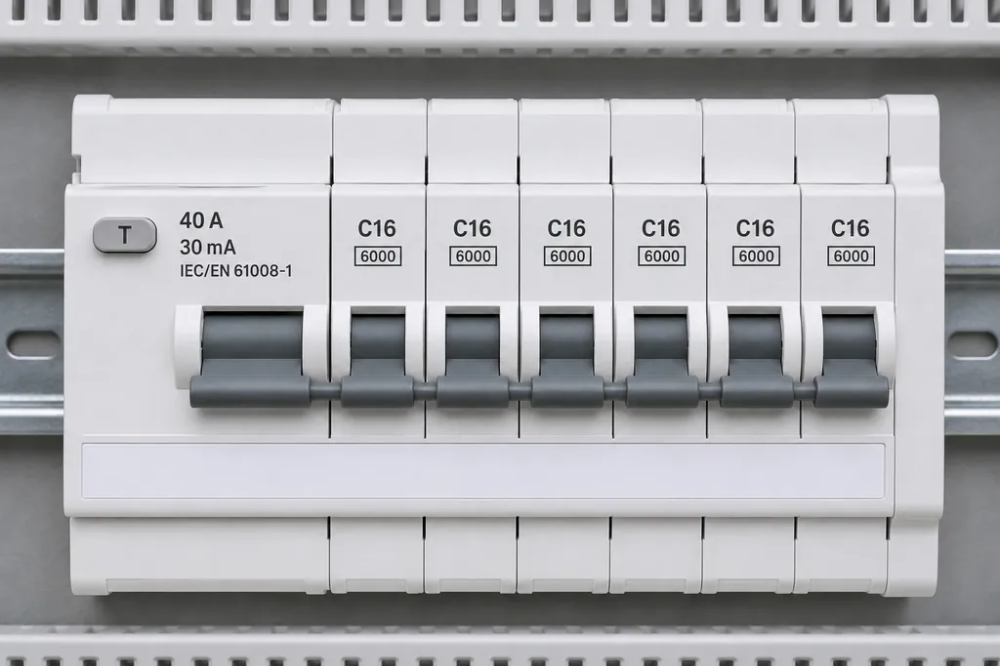
Lire la première phrase, puis révéler les encarts un à un (→ ou Espace) en demandant aux stagiaires de les reformuler. Les chiffres encadrés sont à contrôler dans la source avant la session.
Sources : R, S6. Contenu à relire par le formateur [R].
Parcours
Le disjoncteur divisionnaire
Il protège un circuit.
Il contient trois organes : une bobine électromagnétique qui réagit au court-circuit en moins de 0,02 s, un bilame qui réagit à la surcharge en deux minutes à plusieurs minutes, et une chambre de coupure qui disloque l'arc électrique.
Entre les deux bornes, on trouve dans l'ordre le bilame, la bobine avec son noyau, le contact mobile, puis les chambres de coupure.
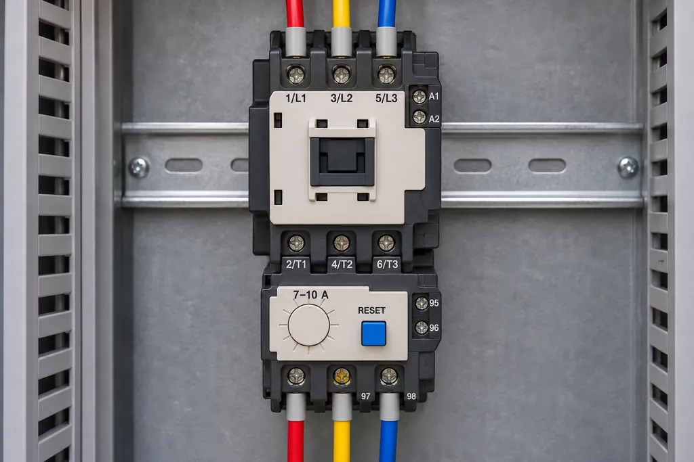
Lire la première phrase, puis révéler les encarts un à un (→ ou Espace) en demandant aux stagiaires de les reformuler. Les chiffres encadrés sont à contrôler dans la source avant la session.
Sources : S10, S2. Contenu à relire par le formateur [R].
Parcours
Courbe et pouvoir de coupure
La courbe indique à partir de quel multiple du calibre le déclencheur magnétique agit : les courbes B, C, D, K et Z existent, et pour la courbe B, le magnétique agit entre 3 et 5 fois le calibre.
Le pouvoir de coupure du disjoncteur doit être supérieur au courant de court-circuit présumé à son emplacement.
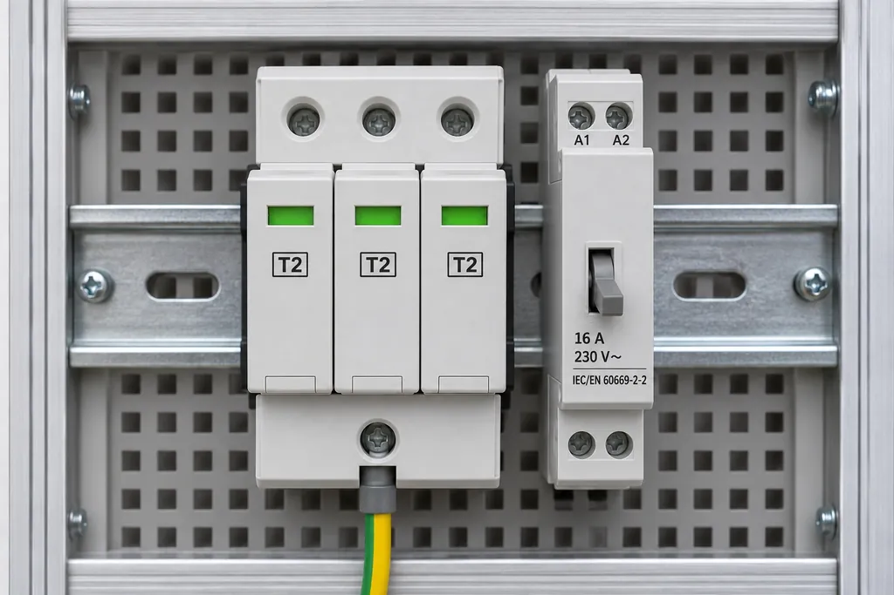
Lire la première phrase, puis révéler les encarts un à un (→ ou Espace) en demandant aux stagiaires de les reformuler. Les chiffres encadrés sont à contrôler dans la source avant la session.
Sources : S19, S20, S7. Contenu à relire par le formateur [R].
Parcours
L'interrupteur différentiel
Il compare le courant qui part et le courant qui revient ; un écart signale une fuite vers la terre et provoque le déclenchement.
En logement, la sensibilité est de 30 mA.
Le bouton test (T) alimente un circuit d'essai qui dérive un courant en dehors du tore.
Il ne protège pas contre la surcharge ni le court-circuit : c'est le rôle du disjoncteur en aval.
Les types AC et A se distinguent par les courants de fuite qu'ils détectent.
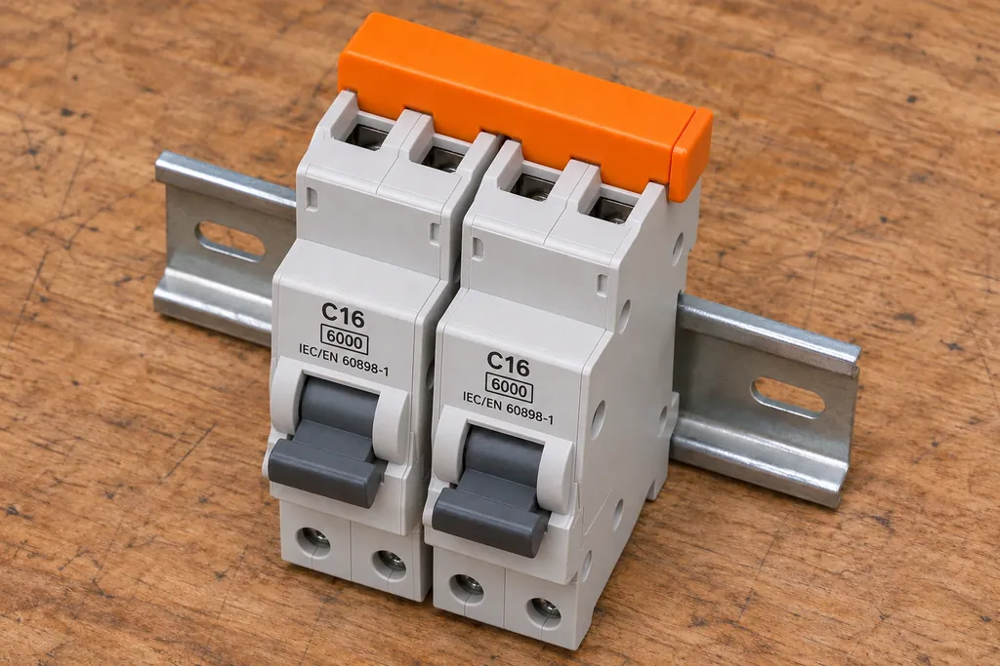
Lire la première phrase, puis révéler les encarts un à un (→ ou Espace) en demandant aux stagiaires de les reformuler. Les chiffres encadrés sont à contrôler dans la source avant la session.
Sources : S3, S4. Contenu à relire par le formateur [R].
Parcours
Contacteur, télérupteur, minuterie, parafoudre
Le contacteur ferme ses contacts quand sa bobine est alimentée et les rouvre par un ressort quand elle est coupée.
Il a des contacts de puissance et des contacts auxiliaires.
Le télérupteur commande un circuit par impulsions, la minuterie coupe après un délai, le parafoudre limite les surtensions d'origine atmosphérique.
Repérez la fonction de chaque appareil avant toute intervention.
Lire la première phrase, puis révéler les encarts un à un (→ ou Espace) en demandant aux stagiaires de les reformuler. Les chiffres encadrés sont à contrôler dans la source avant la session.
Sources : R, S17, S5, S6. Contenu à relire par le formateur [R].
Parcours
Ce que la position d'un appareil ne prouve pas
Un appareil en position ouvert ne prouve pas que l'aval est hors tension.
Seule la vérification d'absence de tension, sur tous les conducteurs actifs, neutre compris, permet de conclure.
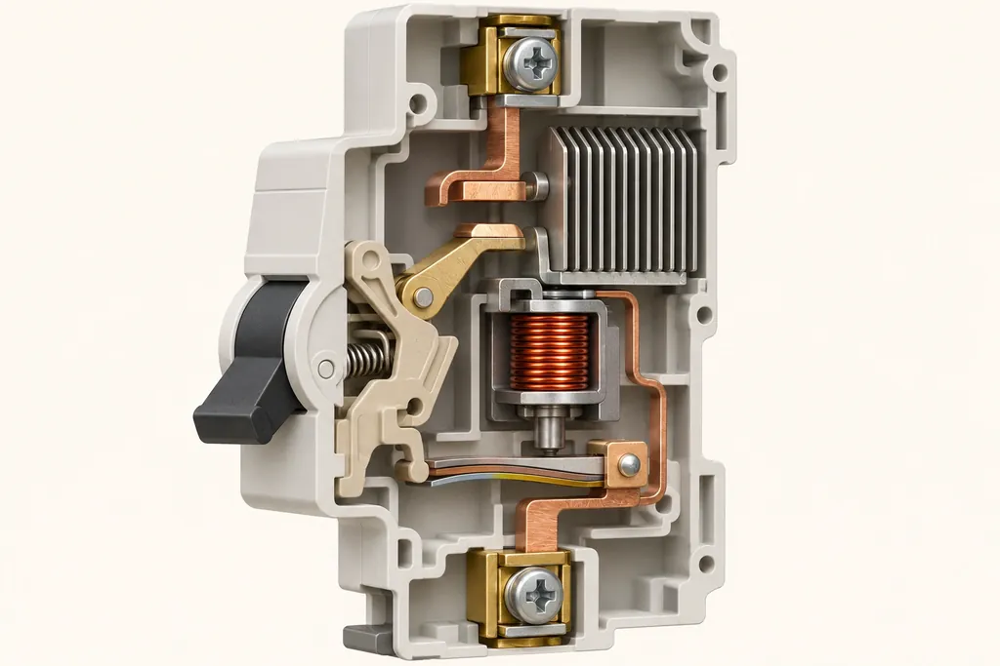
Lire la première phrase, puis révéler les encarts un à un (→ ou Espace) en demandant aux stagiaires de les reformuler. Les chiffres encadrés sont à contrôler dans la source avant la session.
Sources : R, S16, S22. Contenu à relire par le formateur [R].
Parcours
Chez ADI : reconnaître l'appareillage d'une alimentation de centrale
Les armoires d'alimentation des centrales contiennent des protections, des borniers et des batteries : savoir les reconnaître évite de prendre un élément pour un autre.
Le repérage des circuits et des synoptiques mis à jour fait partie des attentes d'un donneur d'ordre.
Lire la première phrase, puis révéler les encarts un à un (→ ou Espace) en demandant aux stagiaires de les reformuler. Les chiffres encadrés sont à contrôler dans la source avant la session.
Sources : R, S48. Contenu à relire par le formateur [R].
Parcours
Vue de face d'un tableau de répartition à deux rangées, légendée (schéma de principe)
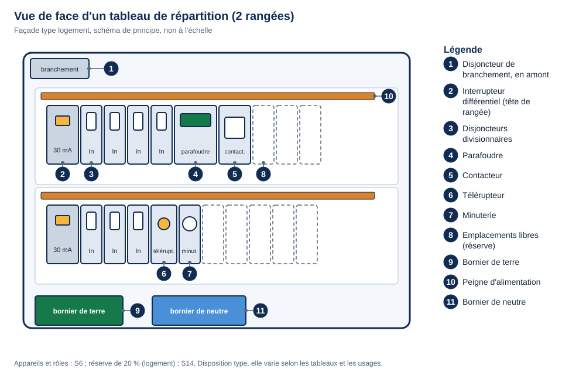
Vue de face d'un tableau de répartition à deux rangées, légendée (schéma de principe). Schéma de principe, non à l’échelle ; il ne remplace ni la notice du constructeur ni les prescriptions.
Parcours
Coupe d'un disjoncteur modulaire
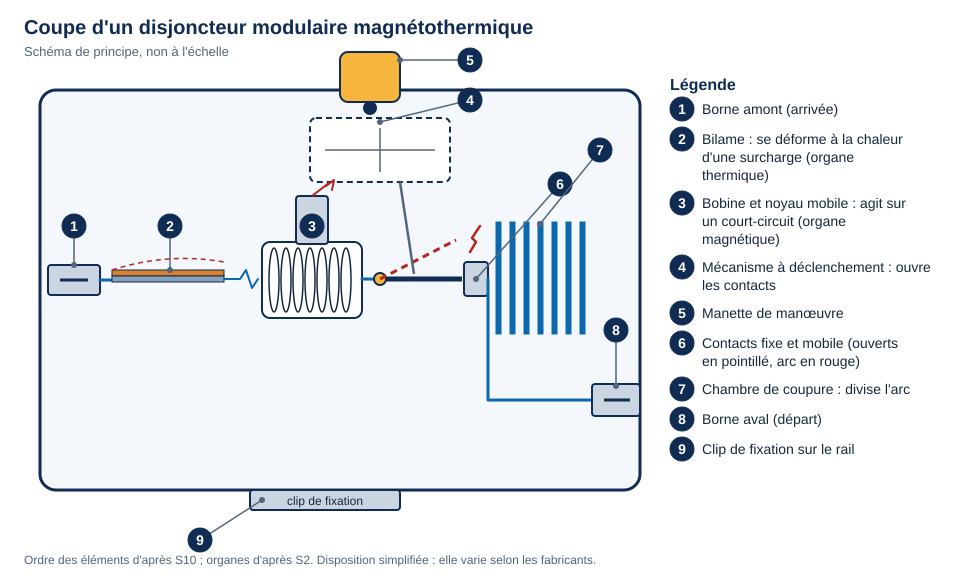
Coupe d'un disjoncteur modulaire : bilame, bobine, contacts, chambre de coupure, clip de fixation. Schéma de principe, non à l’échelle ; il ne remplace ni la notice du constructeur ni les prescriptions.
Parcours
Principe d'un interrupteur différentiel
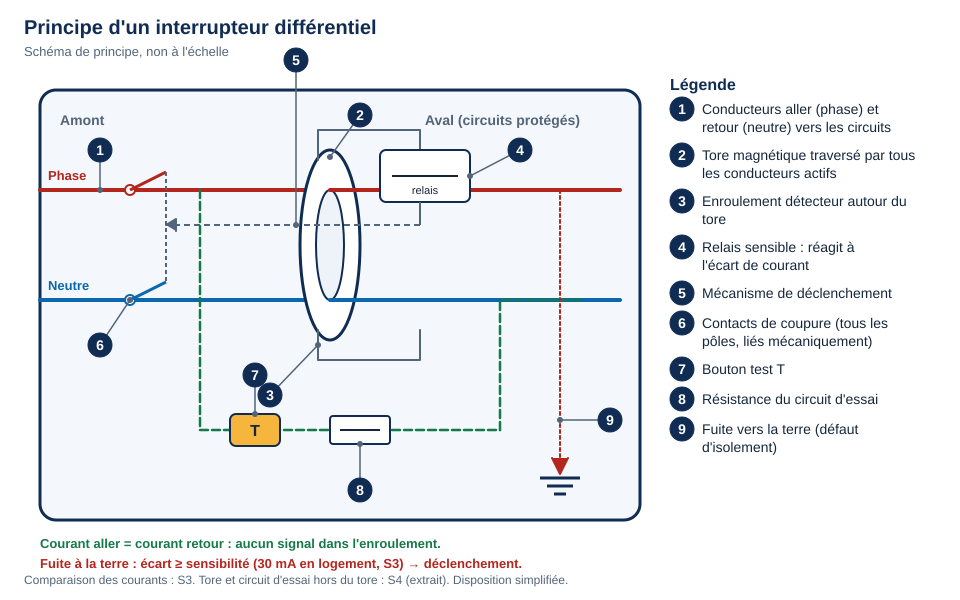
Principe d'un interrupteur différentiel : tore, relais, bouton test. Schéma de principe, non à l’échelle ; il ne remplace ni la notice du constructeur ni les prescriptions.
Parcours
Coupe d'un contacteur au repos
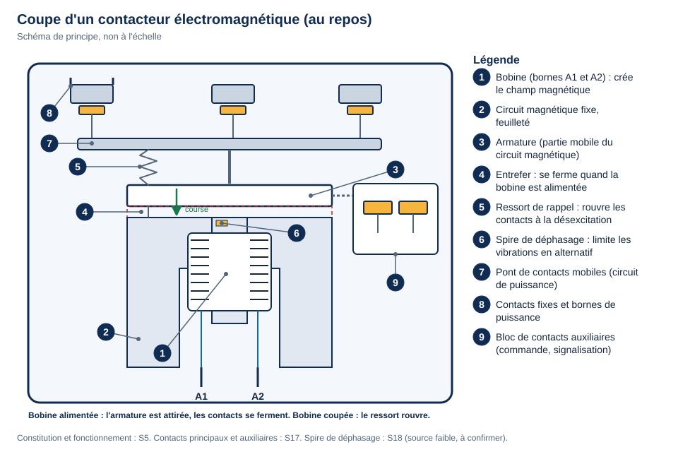
Coupe d'un contacteur au repos : bobine, circuit magnétique, armature, contacts. Schéma de principe, non à l’échelle ; il ne remplace ni la notice du constructeur ni les prescriptions.
Parcours
Mettons-nous à la place de l’habilité
Avant d’agir
Ai-je identifié chaque appareil et son rôle ?
Le repérage et le schéma du tableau sont-ils lisibles ?
Ai-je vérifié l'absence de tension, sans me fier à la position des appareils ?
Faire voter à main levée avant de révéler la réponse, reprendre la situation de départ, puis dérouler la liste des réflexes et demander à un stagiaire de la rejouer.
Sources : S16, S22. Contenu à relire par le formateur [R].
Parcours
Dans une rangée, qu'est-ce qui alimente les appareils par le haut ?
Le peigne alimente les appareils de la rangée. Le bornier de terre reçoit les conducteurs de terre.
Réponse collective : main levée, puis toucher la réponse choisie par la salle. Reprendre oralement chaque erreur. Réponse attendue : A. Le peigne alimente les appareils de la rangée. Le bornier de terre reçoit les conducteurs de terre.
Sources : R, S6, S9. Contenu à relire par le formateur [R].
Parcours
Vous appuyez sur le bouton T d'un différentiel en service. Qu'attendez-vous ?
Le bouton test dérive un courant en dehors du tore : le différentiel doit déclencher.
Réponse collective : main levée, puis toucher la réponse choisie par la salle. Reprendre oralement chaque erreur. Réponse attendue : A. Le bouton test dérive un courant en dehors du tore : le différentiel doit déclencher.
Sources : S3, S4. Contenu à relire par le formateur [R].
Parcours
Équilibrer un tableau triphasé et comprendre pourquoi
Expliquer l'intérêt d'équilibrer les phases, répartir des circuits monophasés sur trois phases et contrôler le résultat.
Ouvrir le parcoursCours de base
50 min. Annoncer l’objectif, le périmètre (Tous niveaux) et le lien avec le métier d’ADI sécurité. Les stagiaires suivent sur leur téléphone via le QR (page « Parcours » du module 20).
Parcours
Pourquoi équilibrer
Avec des charges monophasées, le courant dans le neutre correspond au déséquilibre entre phases.
Plus le déséquilibre est fort, plus le neutre est sollicité.
Un déséquilibre pénalise aussi les moteurs (couple, surintensité, surchauffe) et peut signaler des connexions desserrées ou des contacts usés.
Équilibrer répartit la charge pour limiter ces effets.
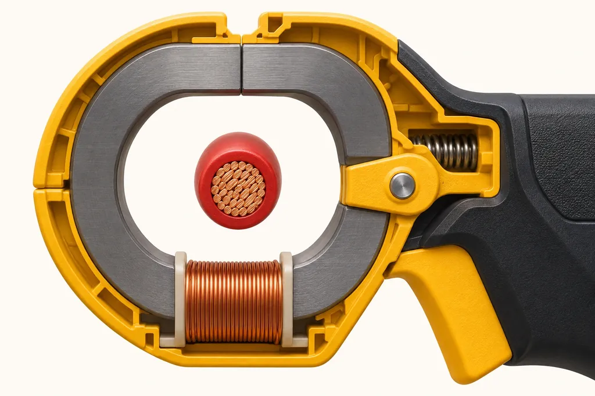
Lire la première phrase, puis révéler les encarts un à un (→ ou Espace) en demandant aux stagiaires de les reformuler. Les chiffres encadrés sont à contrôler dans la source avant la session.
Sources : R, S12, S13. Contenu à relire par le formateur [R].
Parcours
La tension et le neutre
Dans un réseau triphasé avec neutre, on mesure 230 V entre une phase et le neutre, 400 V entre deux phases.
Les trois courants de phase sont décalés ; leur somme vectorielle passe dans le neutre.
Trois courants égaux de 10 A, avec des charges résistives, donnent 0 A dans le neutre ; tous les circuits sur une seule phase, 76 A au total, donnent 76 A dans le neutre.
Lire la première phrase, puis révéler les encarts un à un (→ ou Espace) en demandant aux stagiaires de les reformuler. Les chiffres encadrés sont à contrôler dans la source avant la session.
Sources : C, S21. Contenu à relire par le formateur [R].
Parcours
Mesurer le déséquilibre
Le pourcentage de déséquilibre se calcule ainsi : écart maximal à la moyenne, divisé par la moyenne, multiplié par cent.
La moyenne des trois courants de l'exemple est de 25,33 A.
Lire la première phrase, puis révéler les encarts un à un (→ ou Espace) en demandant aux stagiaires de les reformuler. Les chiffres encadrés sont à contrôler dans la source avant la session.
Sources : C, S13. Contenu à relire par le formateur [R].
Parcours
Exemple chiffré fictif
Huit circuits de 16, 16, 10, 10, 8, 6, 6 et 4 A, charges résistives.
Avant : 42, 18 et 16 A par phase, neutre à 25,06 A, déséquilibre de 65,8 %.
Après répartition : 24, 26 et 26 A, neutre à 2,0 A, déséquilibre de 5,3 %.
Ce résultat est le meilleur possible parmi les 6561 répartitions testées par le script.
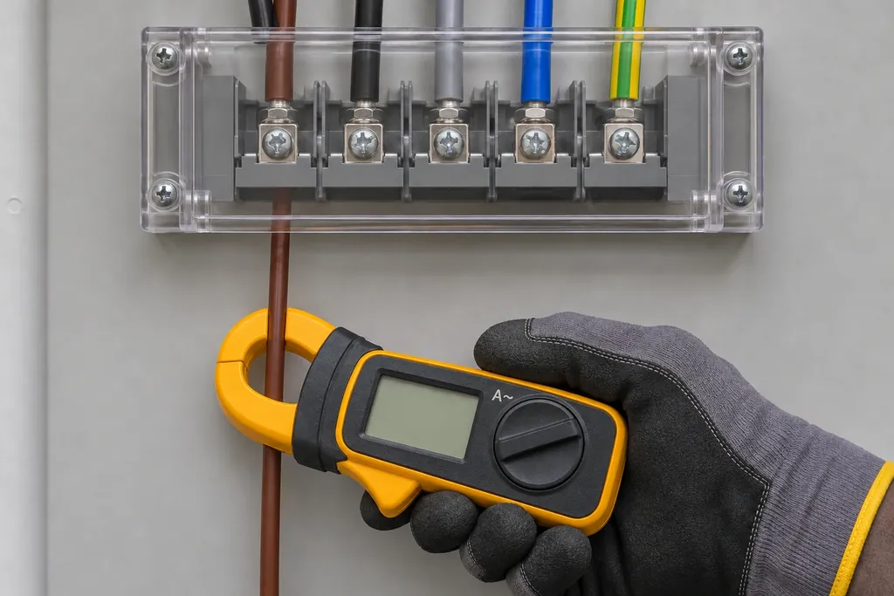
Lire la première phrase, puis révéler les encarts un à un (→ ou Espace) en demandant aux stagiaires de les reformuler. Les chiffres encadrés sont à contrôler dans la source avant la session.
Sources : C. Contenu à relire par le formateur [R].
Parcours
Méthode
Lister les courants d'emploi des circuits ; les classer du plus fort au plus faible ; brancher chacun sur la phase la moins chargée à cet instant ; contrôler à la pince ampèremétrique, en charge normale ; repérer chaque circuit avec sa phase.
Respecter l'habilitation et les règles de sécurité de l'intervention : déplacer un circuit est une opération sur l'installation.
Lire la première phrase, puis révéler les encarts un à un (→ ou Espace) en demandant aux stagiaires de les reformuler. Les chiffres encadrés sont à contrôler dans la source avant la session.
Sources : R, S1. Contenu à relire par le formateur [R].
Parcours
Une limite à connaître
Des phases équilibrées ne suppriment pas les courants harmoniques de rang 3 et multiples, qui s'additionnent dans le neutre avec des charges non linéaires (informatique, éclairage électronique).
Le calcul ci-dessus suppose des charges résistives.
Lire la première phrase, puis révéler les encarts un à un (→ ou Espace) en demandant aux stagiaires de les reformuler. Les chiffres encadrés sont à contrôler dans la source avant la session.
Sources : C, S11. Contenu à relire par le formateur [R].
Parcours
Exemple chiffré fictif
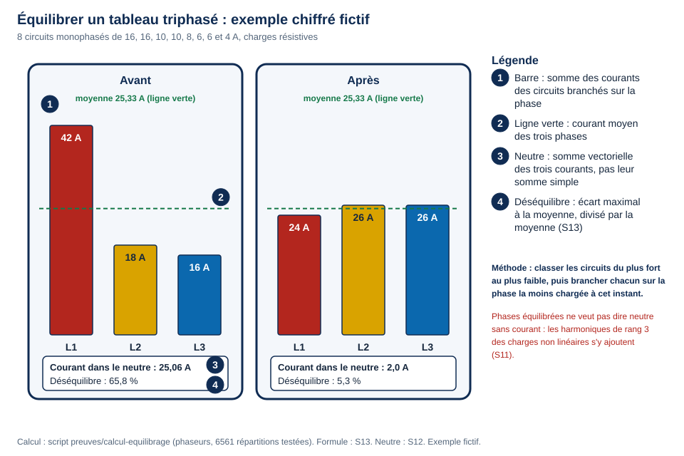
Exemple chiffré fictif : courants par phase avant et après répartition, neutre et déséquilibre (calcul prouvé par script). Schéma de principe, non à l’échelle ; il ne remplace ni la notice du constructeur ni les prescriptions.
Parcours
Mettons-nous à la place de l’habilité
Avant d’agir
Ai-je les courants d'emploi réels des circuits ?
Mon intervention entre-t-elle dans mon habilitation ?
Ai-je mesuré avant et après, en charge normale ?
Les phases sont-elles repérées sur chaque départ ?
Faire voter à main levée avant de révéler la réponse, reprendre la situation de départ, puis dérouler la liste des réflexes et demander à un stagiaire de la rejouer.
Sources : C. Contenu à relire par le formateur [R].
Parcours
Phases à 24, 26 et 26 A, moyenne 25,33 A. Quel est le déséquilibre ?
Écart maximal : 25,33 − 24 = 1,33 A, soit 5,3 % de la moyenne. 1,3 est l'écart en ampères arrondi, pas un pourcentage.
Réponse collective : main levée, puis toucher la réponse choisie par la salle. Reprendre oralement chaque erreur. Réponse attendue : A. Écart maximal : 25,33 − 24 = 1,33 A, soit 5,3 % de la moyenne. 1,3 est l'écart en ampères arrondi, pas un pourcentage.
Sources : C, S13. Contenu à relire par le formateur [R].
Parcours
Trois phases chargées chacune à 10 A (charges résistives). Quel courant circule dans le neutre ?
Trois courants égaux et décalés de manière régulière s'annulent dans le neutre.
Réponse collective : main levée, puis toucher la réponse choisie par la salle. Reprendre oralement chaque erreur. Réponse attendue : A. Trois courants égaux et décalés de manière régulière s'annulent dans le neutre.
Sources : C. Contenu à relire par le formateur [R].
Parcours
Remplacer un appareillage dans un tableau
Remplacer un appareil par un appareil équivalent, en sécurité, dans le cadre de l'habilitation détenue.
Ouvrir le parcoursCours de base
60 min. Annoncer l’objectif, le périmètre (BS · BR · BE (périmètre à vérifier)) et le lien avec le métier d’ADI sécurité. Les stagiaires suivent sur leur téléphone via le QR (page « Parcours » du module 21).
Parcours
Cadrer : ai-je le droit ?
La page de l'INRS lue décrit pour le BS le remplacement à l'identique d'un fusible ou le réarmement d'un dispositif de protection, et pour le BR le dépannage et le remplacement d'un matériel défectueux.
Elle ne cite pas le remplacement d'un élément d'armoire : le périmètre exact se vérifie dans le titre d'habilitation, la NF C 18-510 (non lue ici) et les consignes de l'employeur.
Lire la première phrase, puis révéler les encarts un à un (→ ou Espace) en demandant aux stagiaires de les reformuler. Les chiffres encadrés sont à contrôler dans la source avant la session.
Sources : S1. Contenu à relire par le formateur [R].
Parcours
Diagnostiquer avant de remplacer
Un disjoncteur qui ne se réarme pas est peut-être défectueux, ou le défaut de l'installation persiste : vérifier d'abord la cause.
Relever les caractéristiques de l'appareil : calibre, courbe, pouvoir de coupure, type de différentiel.
Lire la première phrase, puis révéler les encarts un à un (→ ou Espace) en demandant aux stagiaires de les reformuler. Les chiffres encadrés sont à contrôler dans la source avant la session.
Sources : S7, S8. Contenu à relire par le formateur [R].
Parcours
Consigner et vérifier l'absence de tension
Séparer, condamner, identifier, vérifier l'absence de tension.
La VAT porte sur tous les conducteurs actifs, neutre compris, et le VAT se contrôle avant et après sur une source connue.
Lire la première phrase, puis révéler les encarts un à un (→ ou Espace) en demandant aux stagiaires de les reformuler. Les chiffres encadrés sont à contrôler dans la source avant la session.
Sources : S16, S22. Contenu à relire par le formateur [R].
Parcours
Déposer
Disjoncteur à vis : dévisser les quatre vis, puis extraire l'appareil en faisant levier sur la griffe de fixation ; si un peigne l'alimente, desserrer les vis du haut de tous les disjoncteurs de la rangée.
Disjoncteur à bornes automatiques : retirer le peigne avec un tournevis en levier, appuyer sur les poussoirs pour libérer les fils, puis extraire l'appareil en faisant levier sur la griffe.
Repérer les fils avant de les retirer.
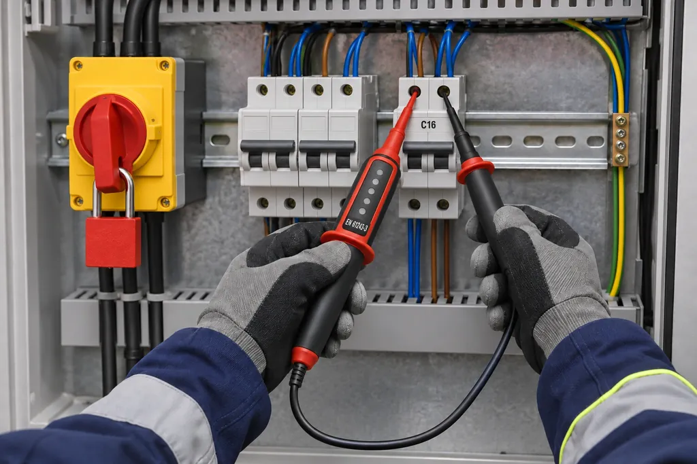
Lire la première phrase, puis révéler les encarts un à un (→ ou Espace) en demandant aux stagiaires de les reformuler. Les chiffres encadrés sont à contrôler dans la source avant la session.
Sources : R, S8. Contenu à relire par le formateur [R].
Parcours
Poser et raccorder
Clipser le nouvel appareil sur le rail à l'emplacement libéré, relier par fils ou peigne en haut et par fils en bas.
Pour un calibre supérieur, vérifier d'abord que les conducteurs supportent l'intensité visée.
Appareil équivalent : même calibre, même courbe, pouvoir de coupure au moins égal.
Lire la première phrase, puis révéler les encarts un à un (→ ou Espace) en demandant aux stagiaires de les reformuler. Les chiffres encadrés sont à contrôler dans la source avant la session.
Sources : R, S8. Contenu à relire par le formateur [R].
Parcours
Repérer, déconsigner, essayer
Mettre à jour le repérage du circuit.
Lever la consigne dans l'ordre prévu, puis essayer l'appareil ; pour un différentiel, utiliser le bouton test.
Lire la première phrase, puis révéler les encarts un à un (→ ou Espace) en demandant aux stagiaires de les reformuler. Les chiffres encadrés sont à contrôler dans la source avant la session.
Sources : S15, S3, S4. Contenu à relire par le formateur [R].
Parcours
Limites du BS et du BR
La brochure INRS ED 6127, 3e édition de décembre 2020, décrit le BS comme une intervention élémentaire sur des circuits terminaux, au maximum 400 V et 32 A en courant alternatif, hors tension et en l'absence de voisinage renforcé.
Elle décrit le BR avec, pour connecter ou déconnecter en présence de tension, au maximum 500 V et 63 A en courant alternatif, et hors charge.
L'édition de 2012 indiquait pour le BR « maxi 1000 V et 63 A » et ne disait pas hors charge : cette mention n'apparaît plus dans le tableau de 2020.
Une section de 6 mm² en cuivre figure pour le BS et le BR dans deux sources secondaires issues de l'INRS, pas dans la brochure.
L'INRS renvoie la portée exacte des symboles à la NF C 18-510, dont le texte payant, y compris ses amendements A1 et A2 en vigueur, n'a pas été lu : confirmer ces valeurs à la norme avant de les enseigner comme limites réglementaires.
Lire la première phrase, puis révéler les encarts un à un (→ ou Espace) en demandant aux stagiaires de les reformuler. Les chiffres encadrés sont à contrôler dans la source avant la session.
Sources : R, S23, S24, S27, S28, S29, S30. Contenu à relire par le formateur [R].
Parcours
Chez ADI : remplacer un élément d'alimentation ou une batterie
Remplacer une batterie ou un élément d'alimentation d'ECS suit la même logique que le remplacement d'un appareillage : identifier la source, mettre hors tension, remplacer à l'identique, essayer et consigner.
Si le remplacement impose de modifier le circuit, l'opération dépasse le simple remplacement.
Lire la première phrase, puis révéler les encarts un à un (→ ou Espace) en demandant aux stagiaires de les reformuler. Les chiffres encadrés sont à contrôler dans la source avant la session.
Sources : R, S44, S48. Contenu à relire par le formateur [R].
Parcours
Coupe d'une rangée
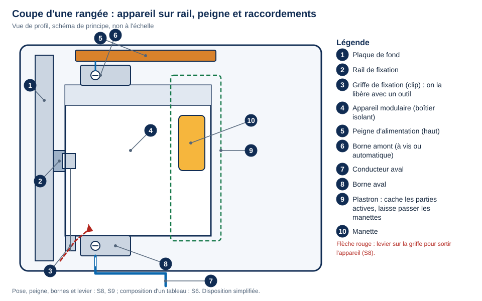
Coupe d'une rangée : appareil sur rail, peigne, bornes et levier sur la griffe. Schéma de principe, non à l’échelle ; il ne remplace ni la notice du constructeur ni les prescriptions.
Parcours
Les huit étapes du remplacement d'un appareil
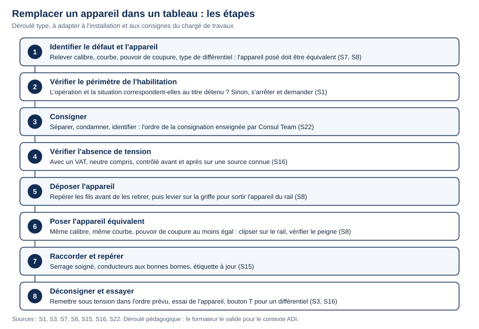
Les huit étapes du remplacement d'un appareil. Schéma de principe, non à l’échelle ; il ne remplace ni la notice du constructeur ni les prescriptions.
Parcours
Mettons-nous à la place de l’habilité
Avant d’agir
Mon titre couvre-t-il cette opération ?
Ai-je relevé calibre, courbe, pouvoir de coupure ?
VAT faite, neutre compris, VAT contrôlé avant et après ?
Fils repérés avant dépose ?
Faire voter à main levée avant de révéler la réponse, reprendre la situation de départ, puis dérouler la liste des réflexes et demander à un stagiaire de la rejouer.
Sources : S8. Contenu à relire par le formateur [R].
Parcours
Quand le VAT se contrôle-t-il ?
Contrôle du VAT avant et après usage.
Réponse collective : main levée, puis toucher la réponse choisie par la salle. Reprendre oralement chaque erreur. Réponse attendue : A. Contrôle du VAT avant et après usage.
Sources : S16. Contenu à relire par le formateur [R].
Parcours
Un disjoncteur ne se réarme pas. Que faire en premier ?
Diagnostic d'abord.
Réponse collective : main levée, puis toucher la réponse choisie par la salle. Reprendre oralement chaque erreur. Réponse attendue : A. Diagnostic d'abord.
Sources : S8. Contenu à relire par le formateur [R].
Parcours
Installer un nouvel appareillage dans un tableau
Ajouter un appareil dans un tableau : cadrer l'opération, choisir l'appareil, le poser, le raccorder, le repérer, l'essayer.
Ouvrir le parcoursCours de base
50 min. Annoncer l’objectif, le périmètre (Périmètre à vérifier (modification de l'installation)) et le lien avec le métier d’ADI sécurité. Les stagiaires suivent sur leur téléphone via le QR (page « Parcours » du module 22).
Parcours
Cadrer l'opération
Ajouter un appareil modifie l'installation.
Le BS décrit par l'INRS se limite notamment à la connexion sur un circuit de réserve protégé : vérifier le titre et le périmètre avant d'agir, la NF C 18-510 n'ayant pas été lue.
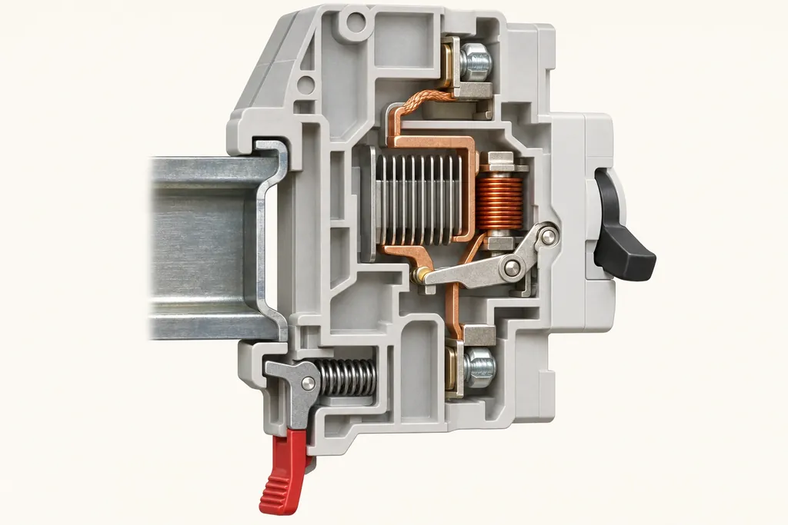
Lire la première phrase, puis révéler les encarts un à un (→ ou Espace) en demandant aux stagiaires de les reformuler. Les chiffres encadrés sont à contrôler dans la source avant la session.
Sources : R, S1. Contenu à relire par le formateur [R].
Parcours
Vérifier la place et la réserve
Une réserve minimale de 20 % de modules libres est prescrite pour les tableaux de répartition de logement, avec une possibilité de la limiter à six modules par logement en immeuble collectif d'habitation.
Vérifier qu'un emplacement est libre sur la rangée.
Lire la première phrase, puis révéler les encarts un à un (→ ou Espace) en demandant aux stagiaires de les reformuler. Les chiffres encadrés sont à contrôler dans la source avant la session.
Sources : S14, S9. Contenu à relire par le formateur [R].
Parcours
Choisir l'appareil
Le choix porte sur le calibre, la courbe, le pouvoir de coupure et, pour un différentiel, le type.
Le calibre dépend des conducteurs du circuit à protéger, selon la NF C 15-100.
Le pouvoir de coupure doit être supérieur au courant de court-circuit présumé.
Lire la première phrase, puis révéler les encarts un à un (→ ou Espace) en demandant aux stagiaires de les reformuler. Les chiffres encadrés sont à contrôler dans la source avant la session.
Sources : S7, S8, S9. Contenu à relire par le formateur [R].
Parcours
Poser et raccorder
Consigner et vérifier l'absence de tension.
Clipser l'appareil sur le rail, insérer le peigne, serrer la borne amont, raccorder le circuit aval et la terre au bornier.
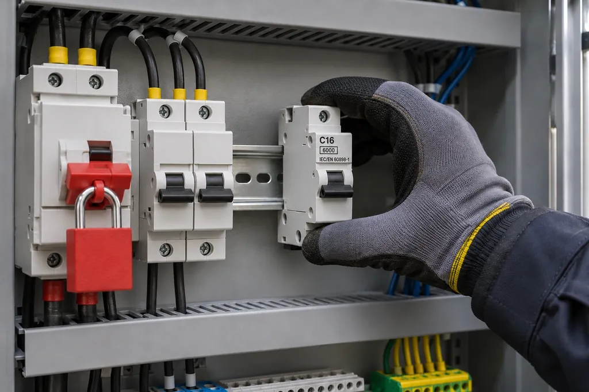
Lire la première phrase, puis révéler les encarts un à un (→ ou Espace) en demandant aux stagiaires de les reformuler. Les chiffres encadrés sont à contrôler dans la source avant la session.
Sources : S16, S22, S9. Contenu à relire par le formateur [R].
Parcours
Repérer et essayer
Repérer le circuit et mettre à jour le schéma du tableau.
Remettre en place le plastron, lever la consigne, essayer le circuit.
Lire la première phrase, puis révéler les encarts un à un (→ ou Espace) en demandant aux stagiaires de les reformuler. Les chiffres encadrés sont à contrôler dans la source avant la session.
Sources : S15, S16, S9. Contenu à relire par le formateur [R].
Parcours
Les huit étapes de l'installation d'un nouvel appareil
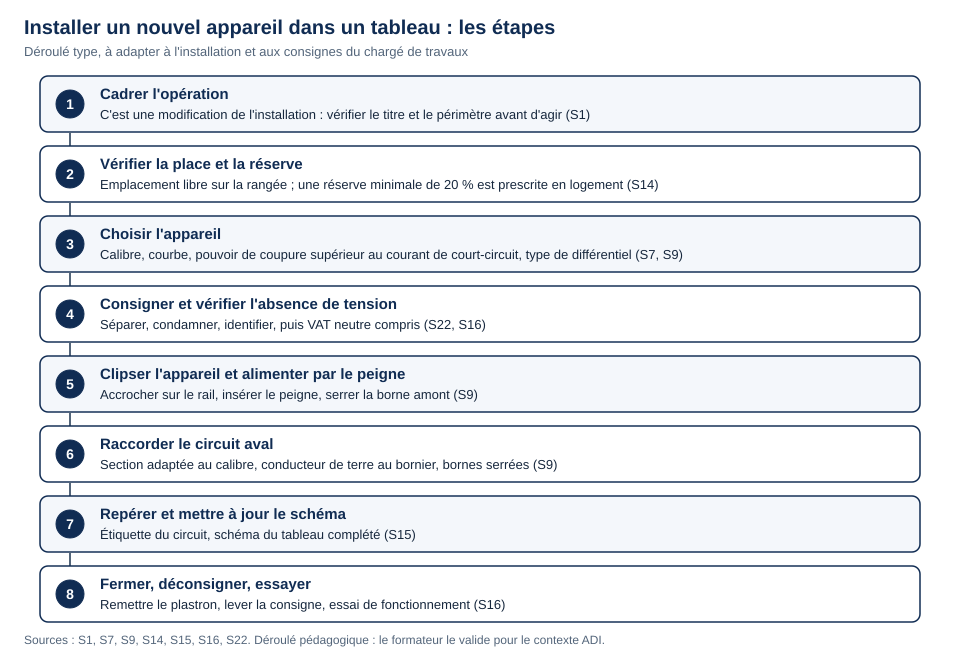
Les huit étapes de l'installation d'un nouvel appareil. Schéma de principe, non à l’échelle ; il ne remplace ni la notice du constructeur ni les prescriptions.
Parcours
Coupe d'une rangée
Coupe d'une rangée : appareil sur rail, peigne, bornes et levier sur la griffe. Schéma de principe, non à l’échelle ; il ne remplace ni la notice du constructeur ni les prescriptions.
Parcours
Mettons-nous à la place de l’habilité
Avant d’agir
Mon titre couvre-t-il cette modification ?
Calibre, courbe, pouvoir de coupure et type vérifiés ?
Consignation et VAT faites, neutre compris ?
Repérage et schéma mis à jour ?
Faire voter à main levée avant de révéler la réponse, reprendre la situation de départ, puis dérouler la liste des réflexes et demander à un stagiaire de la rejouer.
Sources : R, S14. Contenu à relire par le formateur [R].
Parcours
Pourquoi conserver des emplacements libres dans un tableau de logement ?
Réserve minimale de 20 % préconisée ; l'usage est de prévoir les extensions.
Réponse collective : main levée, puis toucher la réponse choisie par la salle. Reprendre oralement chaque erreur. Réponse attendue : A. Réserve minimale de 20 % préconisée ; l'usage est de prévoir les extensions.
Sources : R, S14. Contenu à relire par le formateur [R].
Parcours
Quelle réserve minimale de modules libres est prescrite pour un tableau de logement ?
Réserve minimale de 20 %.
Réponse collective : main levée, puis toucher la réponse choisie par la salle. Reprendre oralement chaque erreur. Réponse attendue : A. Réserve minimale de 20 %.
Sources : S14. Contenu à relire par le formateur [R].
Parcours
Intervention générale BR
Réaliser en sécurité une intervention générale en basse tension dans les limites du symbole BR : entretien, dépannage, recherche de défaut, remplacement, connexion, déconnexion, mesurage, essai, manœuvre, consignation pour son propre compte.
40 min. Annoncer l’objectif, le périmètre (BR) et le lien avec le métier d’ADI sécurité. Les stagiaires suivent sur leur téléphone via le QR (page « Parcours » du module 10).
Parcours
Repères
L’ intervention est une opération limitée de courte durée sur un circuit, un équipement ou un appareil : dépannage, remise en état, connexion et déconnexion, remplacement d’un élément, mesurage, vérification, essai.
Le chargé d’intervention agit dans les limites de son titre d’habilitation et des consignes de l’employeur.
Lire la première phrase, puis révéler les encarts un à un (→ ou Espace) en demandant aux stagiaires de les reformuler. Les chiffres encadrés sont à contrôler dans la source avant la session.
Parcours
Les étapes
Préparer
Identifier l’installation, la tension, les circuits voisins ; lire les prescriptions ; s’assurer que l’opération entre dans le titre.
Se mettre en sécurité
Préférer l’intervention hors tension, après consignation (voir séquence 5). Délimiter la zone, vérifier les EPI et l’outillage isolé.
Vérifier l’absence de tension
avec un dispositif adapté, contrôlé avant et après usage.
Dérouler les étapes une à une ; demander « que se passe-t-il si on saute cette étape ? ».
Parcours
Les étapes
Intervenir
dans la limite de la tâche ; ne pas élargir l’opération sans nouvelle analyse.
Terminer
Ranger, remettre en état, informer le responsable de l’installation, restituer et demander la remise sous tension selon la procédure.
Dérouler les étapes une à une ; demander « que se passe-t-il si on saute cette étape ? ».
Parcours
À retenir
Travaux sous tension.
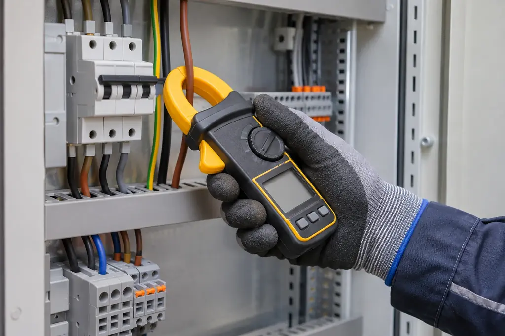
Lire la première phrase, puis révéler les encarts un à un (→ ou Espace) en demandant aux stagiaires de les reformuler. Les chiffres encadrés sont à contrôler dans la source avant la session.
Parcours
À retenir
Consignation et BR.
Lire la première phrase, puis révéler les encarts un à un (→ ou Espace) en demandant aux stagiaires de les reformuler. Les chiffres encadrés sont à contrôler dans la source avant la session.
Parcours
À retenir
intervention
Lire la première phrase, puis révéler les encarts un à un (→ ou Espace) en demandant aux stagiaires de les reformuler. Les chiffres encadrés sont à contrôler dans la source avant la session.
Parcours
À retenir
travail
Lire la première phrase, puis révéler les encarts un à un (→ ou Espace) en demandant aux stagiaires de les reformuler. Les chiffres encadrés sont à contrôler dans la source avant la session.
Parcours
À retenir
À l’oral :
Lire la première phrase, puis révéler les encarts un à un (→ ou Espace) en demandant aux stagiaires de les reformuler. Les chiffres encadrés sont à contrôler dans la source avant la session.
Parcours
Chez ADI : dépannage et maintenance corrective
La maintenance corrective d'un SSI est une activité centrale du métier : le référentiel la prévoit explicitement avec une habilitation BR.
Dans les limites du BR, le technicien recherche la panne, remplace le matériel défectueux et rend compte.
Les consignes du fabricant de la centrale complètent le titre.
Lire la première phrase, puis révéler les encarts un à un (→ ou Espace) en demandant aux stagiaires de les reformuler. Les chiffres encadrés sont à contrôler dans la source avant la session.
Sources : R, S29, S41. Contenu à relire par le formateur [R].
Parcours
PN05 · Maintenance
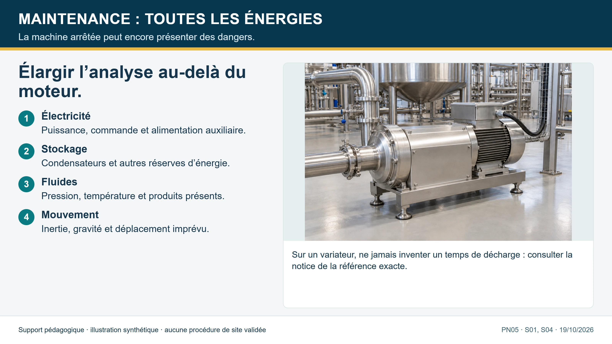
PN05 · Maintenance : toutes les énergies Schéma de principe, non à l’échelle ; il ne remplace ni la notice du constructeur ni les prescriptions.
Parcours
PN03 · Vérification d’absence de tension
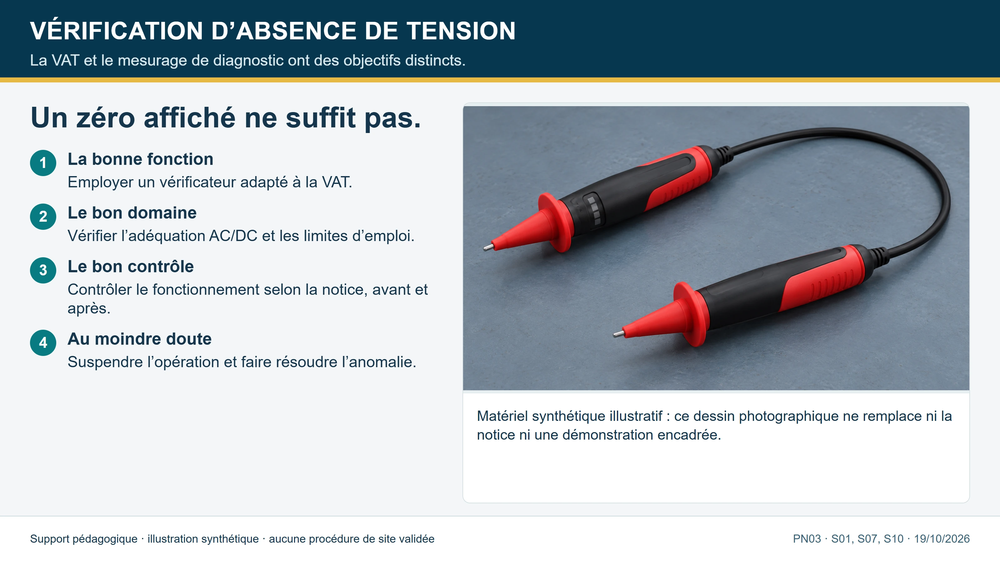
PN03 · Vérification d’absence de tension Schéma de principe, non à l’échelle ; il ne remplace ni la notice du constructeur ni les prescriptions.
Parcours
V13 · BR
V13 · BR : rester dans l’intervention confiéeQualifier l’activité sans attribuer tout dépannage au seul intitulé de métier. Schéma de principe, non à l’échelle ; il ne remplace ni la notice du constructeur ni les prescriptions.
Parcours
V05 · VAT et mesurage

V05 · VAT et mesurage : objectifs distinctsEmpêcher la substitution d’un multimètre ou d’un détecteur sans contact à la VAT. Schéma de principe, non à l’échelle ; il ne remplace ni la notice du constructeur ni les prescriptions.
Parcours
V24 · VAT

V24 · VAT : contrôler aussi le vérificateurAssocier au contrôle d’absence les contrôles de fonctionnement requis par la notice. Schéma de principe, non à l’échelle ; il ne remplace ni la notice du constructeur ni les prescriptions.
Parcours
V10 · EPI
V10 · EPI : partir de l’analyse de l’opérationÉviter les kits d’EPI présentés comme suffisants dans tous les cas. Schéma de principe, non à l’échelle ; il ne remplace ni la notice du constructeur ni les prescriptions.
Parcours
Le symbole BR désigne :
R = intervention BT générale.
Réponse collective : main levée, puis toucher la réponse choisie par la salle. Reprendre oralement chaque erreur. Réponse attendue : A. R = intervention BT générale.
Parcours
Dans le cadre d’une intervention, qui peut consigner l’ouvrage concerné ?
Le BR peut consigner pour son propre compte (OPPBTP, INRS ED 6127).
Réponse collective : main levée, puis toucher la réponse choisie par la salle. Reprendre oralement chaque erreur. Réponse attendue : A. Le BR peut consigner pour son propre compte (OPPBTP, INRS ED 6127).
Parcours
Consignation BC
Appliquer la procédure de consignation et de déconsignation en basse tension.
60 min. Annoncer l’objectif, le périmètre (BC) et le lien avec le métier d’ADI sécurité. Les stagiaires suivent sur leur téléphone via le QR (page « Parcours » du module 11).
Parcours
Repères
La consignation protège les personnes qui travaillent sur un ouvrage ou une installation en les séparant de toute source de tension.
Le BC consigne pour que des tiers (chargé de travaux et son équipe) puissent travailler ; il ne réalise pas lui-même les travaux.
La pré-identification (repérage préalable de l’équipement et de toutes ses sources d’énergie) précède la consignation ; l’ identification , sur le lieu de travail, est la 3e prescription ; puis les opérations s’enchaînent dans l’ordre (INRS ED 6109, p.
14-16) :
Lire la première phrase, puis révéler les encarts un à un (→ ou Espace) en demandant aux stagiaires de les reformuler. Les chiffres encadrés sont à contrôler dans la source avant la session.
Parcours
Les étapes
Séparation
Ouvrir les organes de coupure qui isolent l’ouvrage de toutes les sources (y compris retours possibles : secours, groupe, photovoltaïque, condensateurs).
Condamnation
Immobiliser les organes ouverts en position d’ouverture (cadenas, verrou), signaler avec une pancarte « interdiction de manœuvrer ».
Identification
S’assurer que l’ouvrage sur lequel on va intervenir est bien celui qui a été séparé et condamné.
Dérouler les étapes une à une ; demander « que se passe-t-il si on saute cette étape ? ».
Parcours
Les étapes
Vérification d’absence de tension (VAT)
Avec un dispositif adapté : contrôle du VAT sur une source connue, mesure sur tous les conducteurs, contrôle du VAT après.
Dérouler les étapes une à une ; demander « que se passe-t-il si on saute cette étape ? ».
Parcours
À retenir
Cinquième opération, mise à la terre et en court-circuit , immédiatement après la VAT ; en BT, elle n’est pas toujours requise (INRS ED 6109 p.
14, renvoi à la NF C 18-510).
Le chargé de consignation est désigné par l’employeur ; il peut faire exécuter les opérations par son personnel.
Lire la première phrase, puis révéler les encarts un à un (→ ou Espace) en demandant aux stagiaires de les reformuler. Les chiffres encadrés sont à contrôler dans la source avant la session.
Parcours
Tableau de synthèse
| Document / action | Rôle |
|---|---|
| Attestation de consignation | Le consignateur la remet au chargé de travaux ou d’intervention : l’ouvrage est consigné. Elle peut être établie en une ou en deux étapes (INRS ED 6127). |
| Autorisation de travail et instructions de sécurité | Le chargé de travaux les utilise pour donner le feu vert et les consignes à son équipe. |
| Avis de fin de travail | Le chargé de travaux annonce que tout le monde est sorti, que l’outillage est retiré et que l’ouvrage peut être déconsigné. |
| Déconsignation | Sens inverse : retrait des dispositifs de condamnation et remise sous tension, seulement après l’avis de fin de travail. |
Lire une ligne, demander aux stagiaires de la compléter avant de révéler la suivante.
Parcours
À retenir
Ne jamais
Lire la première phrase, puis révéler les encarts un à un (→ ou Espace) en demandant aux stagiaires de les reformuler. Les chiffres encadrés sont à contrôler dans la source avant la session.
Parcours
À retenir
À l’oral :
Lire la première phrase, puis révéler les encarts un à un (→ ou Espace) en demandant aux stagiaires de les reformuler. Les chiffres encadrés sont à contrôler dans la source avant la session.
Parcours
Chez ADI : consigner le départ d'une centrale ou d'une AES
Consigner l'alimentation d'une centrale ou d'une AES est une opération de consignation, dans les limites d'un titre BC.
Elle s'applique au départ qui alimente l'ECS, mais ne traite pas à elle seule la batterie qui continue d'alimenter le système.
La déconsignation se fait dans l'ordre, après vérification que l'installation peut être remise en service.
Lire la première phrase, puis révéler les encarts un à un (→ ou Espace) en demandant aux stagiaires de les reformuler. Les chiffres encadrés sont à contrôler dans la source avant la session.
Sources : R, S29, S41, S44. Contenu à relire par le formateur [R].
Parcours
PN02 · Consignation électrique
PN02 · Consignation électrique Schéma de principe, non à l’échelle ; il ne remplace ni la notice du constructeur ni les prescriptions.
Parcours
Partie 06 · Consignation
Partie 06 · Consignation : repères Schéma de principe, non à l’échelle ; il ne remplace ni la notice du constructeur ni les prescriptions.
Parcours
V03 · Consignation
V03 · Consignation : repères et points d’arrêtReconnaître les étapes sans confondre arrêt et consignation. Schéma de principe, non à l’échelle ; il ne remplace ni la notice du constructeur ni les prescriptions.
Parcours
V04 · Un cadenas ne prouve pas toute la consignationDistinguer objet visible et état de sécurité démontré
V04 · Un cadenas ne prouve pas toute la consignationDistinguer objet visible et état de sécurité démontré. Schéma de principe, non à l’échelle ; il ne remplace ni la notice du constructeur ni les prescriptions.
Parcours
V06 · Arrêt d’urgence et consignationRefuser le raccourci machine arrêtée = machine consignée
V06 · Arrêt d’urgence et consignationRefuser le raccourci machine arrêtée = machine consignée. Schéma de principe, non à l’échelle ; il ne remplace ni la notice du constructeur ni les prescriptions.
Parcours
V07 · Variateur
V07 · Variateur : anticiper l’énergie résiduelleIdentifier une énergie stockée après séparation de la source. Schéma de principe, non à l’échelle ; il ne remplace ni la notice du constructeur ni les prescriptions.
Parcours
V08 · Convoyeur
V08 · Convoyeur : raisonner sur plusieurs énergiesÉtendre l’analyse au-delà du moteur. Schéma de principe, non à l’échelle ; il ne remplace ni la notice du constructeur ni les prescriptions.
Parcours
V12 · Consignation pour des travaux
V12 · Consignation pour des travaux : coordinationOrganiser la transmission du périmètre et la restitution. Schéma de principe, non à l’échelle ; il ne remplace ni la notice du constructeur ni les prescriptions.
Parcours
V14 · Commande et puissance
V14 · Commande et puissance : deux périmètres à vérifierRechercher les auxiliaires et les retours d’énergie. Schéma de principe, non à l’échelle ; il ne remplace ni la notice du constructeur ni les prescriptions.
Parcours
V15 · Avant remise en service
V15 · Avant remise en service : une décision organiséeTraiter les interfaces humaines avant le redémarrage. Schéma de principe, non à l’échelle ; il ne remplace ni la notice du constructeur ni les prescriptions.
Parcours
V16 · Repérage incertain
V16 · Repérage incertain : arrêter et résoudreRefuser une identification fondée sur une supposition. Schéma de principe, non à l’échelle ; il ne remplace ni la notice du constructeur ni les prescriptions.
Parcours
V19 · Moteur triphasé
V19 · Moteur triphasé : séparation et masseLire les trois phases, la séparation multipolaire et la liaison à la masse. Schéma de principe, non à l’échelle ; il ne remplace ni la notice du constructeur ni les prescriptions.
Parcours
V20 · Deux alimentations dans une armoireDétecter qu’une même enveloppe peut contenir des circuits d’origines différentes
V20 · Deux alimentations dans une armoireDétecter qu’une même enveloppe peut contenir des circuits d’origines différentes. Schéma de principe, non à l’échelle ; il ne remplace ni la notice du constructeur ni les prescriptions.
Parcours
V23 · Machine
V23 · Machine : croiser les périmètres d’énergieSituer les interfaces d’énergie sur une représentation de machine. Schéma de principe, non à l’échelle ; il ne remplace ni la notice du constructeur ni les prescriptions.
Parcours
Le symbole BC désigne :
C = consignation.
Réponse collective : main levée, puis toucher la réponse choisie par la salle. Reprendre oralement chaque erreur. Réponse attendue : A. C = consignation.
Parcours
Dans le cadre d’un travail confié à une équipe, la consignation est confiée à :
Le BC consigne pour que des tiers travaillent.
Réponse collective : main levée, puis toucher la réponse choisie par la salle. Reprendre oralement chaque erreur. Réponse attendue : A. Le BC consigne pour que des tiers travaillent.
Parcours
Chez ADI : installer, vérifier et maintenir des systèmes de sécurité incendie
Relier chaque opération courante du métier d'ADI sur un SSI (visite de vérification, remplacement de batteries ou de détecteurs, essai d'asservissements, dépannage) au risque électrique réel et au symbole d'habilitation à examiner avec l'employeur.
Ouvrir le parcoursCours de base
75 min. Annoncer l’objectif, le périmètre (Installations de sécurité incendie (SSI) : centrale, alimentation, détection, mise en sécurité) et le lien avec le métier d’ADI sécurité. Les stagiaires suivent sur leur téléphone via le QR (page « Parcours » du module 17).
Parcours
Votre métier : un système, deux ensembles
Un système de sécurité incendie regroupe les matériels qui servent à la détection et à la collecte des informations ou ordres liés à la sécurité incendie.
Il comprend un système de détection, fait de détecteurs automatiques, de déclencheurs manuels et d'un équipement de contrôle et de signalisation (ECS).
Il comprend aussi un système de mise en sécurité, dont le centralisateur de mise en sécurité incendie (CMSI) reçoit l'information de détection et commande les dispositifs actionnés de sécurité (DAS : portes coupe-feu, clapets, désenfumage).
Le technicien de maintenance et de travaux en SSI intervient sur l'ensemble de cette chaîne, de la détection à la mise en sécurité.
Lire la première phrase, puis révéler les encarts un à un (→ ou Espace) en demandant aux stagiaires de les reformuler. Les chiffres encadrés sont à contrôler dans la source avant la session.
Sources : S41, S42, S43. Contenu à relire par le formateur [R].
Parcours
Catégories A à E et types d'alarme
Les SSI sont classés en cinq catégories, de A à E, par ordre de sévérité décroissante.
La catégorie A est la plus complète : détection automatique et CMSI.
La catégorie B comporte un CMSI sans détection automatique, la C une commande regroupée avec signalisation des positions, la D des commandes regroupées et la E une commande locale de chaque DAS.
Le métier couvre les catégories A à E et les équipements d'alarme de type 1 à 4.
Plus la catégorie est élevée, plus il y a d'armoires, d'alimentations et de liaisons à repérer avant d'intervenir.
Lire la première phrase, puis révéler les encarts un à un (→ ou Espace) en demandant aux stagiaires de les reformuler. Les chiffres encadrés sont à contrôler dans la source avant la session.
Sources : R, S41, S42, S43. Contenu à relire par le formateur [R].
Parcours
Les alimentations : le point électrique central du métier
Un SSI est alimenté par une source de sécurité : l'alimentation électrique de sécurité (AES) le maintient en service quand la source normale ou de remplacement fait défaut.
Les batteries d'accumulateurs alimentent en très basse tension, 6, 12, 24 ou 48 V, des équipements à faible consommation, avec une autonomie de 12 h pour un SSI sur batteries.
L'habilitation prévue au référentiel du métier couvre les installations de sécurité incendie y compris leurs alimentations basse tension.
Couper le secteur ne met pas l'ECS hors tension : la batterie reste une source qu'il faut identifier et traiter avant d'ouvrir ou de remplacer un élément.
Lire la première phrase, puis révéler les encarts un à un (→ ou Espace) en demandant aux stagiaires de les reformuler. Les chiffres encadrés sont à contrôler dans la source avant la session.
Sources : R, S41, S44. Contenu à relire par le formateur [R].
Parcours
Quelles habilitations pour ce métier ?
La fiche du titre professionnel du métier prévoit une habilitation électrique délivrée par l'employeur aux niveaux B2(V), B2(V) Essais, BR, BC et H0, limitée au champ d'intervention et aux installations de sécurité incendie.
Ce n'est pas une liste pour ADI : l'employeur définit ses opérations et choisit les symboles dans un cahier des charges.
Aucun symbole ne se déduit du métier ; il se déduit de l'opération, de la tension et de l'environnement.
La liste des opérations réelles d'ADI sera à confirmer avec le formateur avant la session.
Lire la première phrase, puis révéler les encarts un à un (→ ou Espace) en demandant aux stagiaires de les reformuler. Les chiffres encadrés sont à contrôler dans la source avant la session.
Sources : R, S29, S41. Contenu à relire par le formateur [R].
Parcours
Maintenance préventive et corrective : le cadre
La norme NF S 61-933, éditée en décembre 2022, donne les règles générales d'exploitation et de maintenance des matériels et des liaisons des SSI.
Un contrat d'entretien est souscrit pour les SSI de catégorie A ou B, confié à un technicien compétent.
Ces SSI font en outre l'objet d'une vérification tous les 3 ans par un organisme agréé.
Chaque intervention alimente le dossier technique : fiches de maintenance, fiches d'intervention, registre de sécurité et dossier d'identité du SSI.
Quand une partie du système est hors service, des mesures compensatoires s'imposent.
Lire la première phrase, puis révéler les encarts un à un (→ ou Espace) en demandant aux stagiaires de les reformuler. Les chiffres encadrés sont à contrôler dans la source avant la session.
Sources : S45, S46, S47. Contenu à relire par le formateur [R].
Parcours
Une visite de vérification, geste par geste
Le technicien prépare et consigne l'intervention avant de toucher au système.
Il commence par une inspection visuelle des détecteurs, du câblage et de l'ECS.
Il vérifie ensuite l'action des déclencheurs manuels et le fonctionnement des organes reliés à l'ECS.
Il contrôle les asservissements en déclenchant des détecteurs.
Lire la première phrase, puis révéler les encarts un à un (→ ou Espace) en demandant aux stagiaires de les reformuler. Les chiffres encadrés sont à contrôler dans la source avant la session.
À l’oral, en complément (détail dans la page du module) : Il vérifie l'alimentation et la batterie d'AES, ainsi que les portes coupe-feu. Il remplace la pile de la source auxiliaire si nécessaire. Il termine par le compte rendu, la mise à jour des synoptiques et du dossier d'identité du SSI après chaque intervention.
Sources : R, S41, S48, S49. Contenu à relire par le formateur [R].
Parcours
Autour du SSI : désenfumage, éclairage, portes, extincteurs
Le métier ne s'arrête pas à la centrale : les installations de sécurité à vérifier comprennent le désenfumage mécanique et naturel, l'éclairage de sécurité, les portes à fermeture automatique, les extincteurs et les robinets d'incendie armés.
Le désenfumage naturel et les blocs autonomes d'éclairage de sécurité se vérifient chaque année, par un technicien compétent.
Les extincteurs et les robinets d'incendie armés sont également vérifiés chaque année.
L'éclairage de sécurité est lui aussi alimenté par une AES.
Lire la première phrase, puis révéler les encarts un à un (→ ou Espace) en demandant aux stagiaires de les reformuler. Les chiffres encadrés sont à contrôler dans la source avant la session.
Sources : R, S44, S47, S49, S50, S51. Contenu à relire par le formateur [R].
Parcours
Opérations courantes et symboles à étudier
Le remplacement d'un détecteur ou d'un diffuseur sur une boucle très basse tension, sans accès à une partie sous secteur, est à situer avec l'employeur entre B0 et BS.
Le remplacement d'une batterie dans une ECS ou une AES est à examiner comme intervention élémentaire (BS) ou générale (BR) selon l'organisation et les limites du symbole.
Les essais d'asservissements et la mesure de grandeurs relèvent de l'attribut Essai ou Mesurage, que le référentiel du métier prévoit sous la forme B2(V) Essais.
La recherche de panne et le dépannage dans l'armoire relèvent de la maintenance corrective, donc de BR dans ses limites.
Lire la première phrase, puis révéler les encarts un à un (→ ou Espace) en demandant aux stagiaires de les reformuler. Les chiffres encadrés sont à contrôler dans la source avant la session.
À l’oral, en complément (détail dans la page du module) : La consignation d'un départ qui alimente la centrale ou l'AES relève de BC.
Sources : R, S29, S41. Contenu à relire par le formateur [R].
Parcours
Schéma de principe
Schéma de principe : de la détection à la mise en sécurité, avec l'alimentation de sécurité Schéma de principe, non à l’échelle ; il ne remplace ni la notice du constructeur ni les prescriptions.
Parcours
Schéma de principe
Schéma de principe : les catégories de SSI, de A la plus complète à E la plus simple Schéma de principe, non à l’échelle ; il ne remplace ni la notice du constructeur ni les prescriptions.
Parcours
Schéma de principe
Schéma de principe : le secteur coupé, la batterie reste une source Schéma de principe, non à l’échelle ; il ne remplace ni la notice du constructeur ni les prescriptions.
Parcours
Schéma de principe
Schéma de principe : une visite de vérification, geste par geste Schéma de principe, non à l’échelle ; il ne remplace ni la notice du constructeur ni les prescriptions.
Parcours
Mettons-nous à la place de l’habilité
Avant d’agir
Quelle opération exacte me demande-t-on, et mon titre la couvre-t-il ?
Quelles sources alimentent l'ECS, secteur et batterie ?
Une partie du SSI sera-t-elle hors service pendant l'intervention ?
Le dossier d'identité et le registre seront-ils mis à jour ?
Faire voter à main levée avant de révéler la réponse, reprendre la situation de départ, puis dérouler la liste des réflexes et demander à un stagiaire de la rejouer.
Sources : R, S29, S41, S46. Contenu à relire par le formateur [R].
Parcours
Qu'est-ce qui détermine le symbole d'habilitation d'un technicien SSI ?
Le choix tient compte de l'activité confiée et de l'environnement électrique.
Réponse collective : main levée, puis toucher la réponse choisie par la salle. Reprendre oralement chaque erreur. Réponse attendue : A. Le choix tient compte de l'activité confiée et de l'environnement électrique.
Sources : S29. Contenu à relire par le formateur [R].
Parcours
Un SSI de catégorie A comprend :
La catégorie A est la plus complète : détection automatique et CMSI.
Réponse collective : main levée, puis toucher la réponse choisie par la salle. Reprendre oralement chaque erreur. Réponse attendue : A. La catégorie A est la plus complète : détection automatique et CMSI.
Sources : S43. Contenu à relire par le formateur [R].
Suivre sur votre téléphoneÉvaluation · scannez ou ouvrezAccueil
Réactivation en 6 questions
Une question par séquence de la journée. Réponse collective, correction immédiate.
Annoncer le score collectif visé (à fixer avec l’organisme).
Parcours
Quelle est la sensibilité d'un différentiel en logement ?
En logement, la sensibilité est de 30 mA.
Réponse collective : main levée, puis toucher la réponse choisie par la salle. Reprendre oralement chaque erreur. Réponse attendue : A. En logement, la sensibilité est de 30 mA.
Sources : S3. Contenu à relire par le formateur [R].
Parcours
Quelle tension mesure-t-on entre phase et neutre en triphasé 400 V ?
230 V entre phase et neutre, 400 V entre deux phases.
Réponse collective : main levée, puis toucher la réponse choisie par la salle. Reprendre oralement chaque erreur. Réponse attendue : A. 230 V entre phase et neutre, 400 V entre deux phases.
Sources : S21. Contenu à relire par le formateur [R].
Parcours
Après remplacement d'un différentiel, comment l'essaie-t-on ?
Pour un différentiel, utiliser le bouton test.
Réponse collective : main levée, puis toucher la réponse choisie par la salle. Reprendre oralement chaque erreur. Réponse attendue : A. Pour un différentiel, utiliser le bouton test.
Sources : S3, S4. Contenu à relire par le formateur [R].
Parcours
Que doit dépasser le pouvoir de coupure ?
Le pouvoir de coupure doit être supérieur au courant de court-circuit.
Réponse collective : main levée, puis toucher la réponse choisie par la salle. Reprendre oralement chaque erreur. Réponse attendue : A. Le pouvoir de coupure doit être supérieur au courant de court-circuit.
Sources : S19, S20. Contenu à relire par le formateur [R].
Parcours
Un BR seul permet-il de travailler sous tension ?
Les travaux sous tension relèvent d'une habilitation spécifique (symbole T).
Réponse collective : main levée, puis toucher la réponse choisie par la salle. Reprendre oralement chaque erreur. Réponse attendue : B. Les travaux sous tension relèvent d'une habilitation spécifique (symbole T).
Sources : S29. Contenu à relire par le formateur [R].
Parcours
Un schéma peut-il remplacer l'identification sur le terrain ?
Un schéma ne remplace pas l'identification sur le terrain.
Réponse collective : main levée, puis toucher la réponse choisie par la salle. Reprendre oralement chaque erreur. Réponse attendue : A. Un schéma ne remplace pas l'identification sur le terrain.
Sources : S22. Contenu à relire par le formateur [R].
Suivre sur votre téléphoneAccueil · scannez ou ouvrezAccueil
Pratiquer et valider
Travaux pratiques individualisés
Évaluations théorique et pratique
Avis après formation, bilan
- M16 Travaux pratiques individualisés et évaluations 270 min
Rappeler l’objectif du jour, les horaires, et la règle : téléphone pour suivre la formation (QR de chaque diapositive), pas pour autre chose.
Suivre sur votre téléphoneParcours · scannez ou ouvrezAccueil
Compléments selon les symboles désignés
Travaux hors tension B1 · B1V · B2 · B2V
H1 · H2 · HC · HE Manœuvre
BE mesurage, vérification, essai
Ces modules ne sont déroulés que si l’employeur a désigné les symboles correspondants ; ils se prennent sur le temps des TP du jour 3.
Confirmer avec ADI sécurité la liste des symboles visés avant de lancer ces modules [R].
Parcours
Travaux hors tension B1 · B1V · B2 · B2V
Distinguer exécutant (B1) et chargé de travaux (B2), situer le voisinage renforcé (V) et préparer des travaux électriques hors tension en basse tension.
Ouvrir le parcoursCours de base
20 min. Annoncer l’objectif, le périmètre (B1, B1V, B2, B2V) et le lien avec le métier d’ADI sécurité. Les stagiaires suivent sur leur téléphone via le QR (page « Parcours » du module 9).
Parcours
Exécutant ou chargé de travaux
Le symbole se lit en trois caractères : le domaine de tension (B ou H), le type d'opération (0, 1, 2, C, R, S, E…), puis une lettre additionnelle (T, V, N, X) ou un attribut.
Le chiffre 1 désigne l'exécutant d'une opération d'ordre électrique, le chiffre 2 le chargé de travaux d'ordre électrique.
Les travaux couvrent par exemple la création ou la modification d'une installation et le remplacement d'un coffret ou d'une armoire.
Le balisage de la zone de travail et la vérification de la bonne exécution des travaux reviennent uniquement au chargé de travaux.
Lire la première phrase, puis révéler les encarts un à un (→ ou Espace) en demandant aux stagiaires de les reformuler. Les chiffres encadrés sont à contrôler dans la source avant la session.
Sources : S29. Contenu à relire par le formateur [R].
Parcours
Le V : voisinage renforcé
La lettre V indique des travaux au voisinage renforcé : B1V et B2V s'ajoutent à B1 et B2.
Le symbole V ne se déduit pas du métier : il dépend de la zone d'environnement dans laquelle les travaux se déroulent.
Lire la première phrase, puis révéler les encarts un à un (→ ou Espace) en demandant aux stagiaires de les reformuler. Les chiffres encadrés sont à contrôler dans la source avant la session.
Sources : R, S29. Contenu à relire par le formateur [R].
Parcours
Ce que la formation doit couvrir
Le module de formation B1, B1V, B2, B2V comprend de quoi caractériser les travaux et connaître leurs limites : hors tension avec ou sans voisinage, en présence de tension, sous tension.
Il comprend aussi le rôle du chargé de consignation et du chargé d'exploitation électrique, dont on respecte les instructions.
Lire la première phrase, puis révéler les encarts un à un (→ ou Espace) en demandant aux stagiaires de les reformuler. Les chiffres encadrés sont à contrôler dans la source avant la session.
Sources : S29. Contenu à relire par le formateur [R].
Parcours
Les documents applicables
Les travaux s'appuient sur des documents : instructions de sécurité, attestation de consignation, attestation de première étape de consignation, autorisation de travail, avis de fin de travail.
Le chargé de travaux reçoit l'attestation de consignation avant de commencer.
Un exécutant ne commence pas sans avoir reçu les consignes.
Lire la première phrase, puis révéler les encarts un à un (→ ou Espace) en demandant aux stagiaires de les reformuler. Les chiffres encadrés sont à contrôler dans la source avant la session.
Sources : R, S29. Contenu à relire par le formateur [R].
Parcours
Équipements et pratique
Il faut identifier les équipements de travail utilisés et les risques associés, les vérifier et les utiliser en sécurité.
La formation pratique minimale pour ce groupe de symboles est de 5 h, dont 2 h propres au module.
Les travaux sous tension (T, N) ne sont pas détaillés dans la brochure et ne font pas partie de cette formation.
Lire la première phrase, puis révéler les encarts un à un (→ ou Espace) en demandant aux stagiaires de les reformuler. Les chiffres encadrés sont à contrôler dans la source avant la session.
Sources : S29. Contenu à relire par le formateur [R].
Parcours
Chez ADI : installer un SSI neuf, travaux hors tension
Pour la pose de câbles, de détecteurs ou d'une centrale dans un bâtiment neuf, le référentiel du métier prévoit B2(V) pour diriger des travaux hors tension.
Le chargé de travaux prépare l'opération, donne les instructions de sécurité et surveille les exécutants.
Les règles d'installation des SSI, distinctes des règles de maintenance, complètent ces dispositions.
Lire la première phrase, puis révéler les encarts un à un (→ ou Espace) en demandant aux stagiaires de les reformuler. Les chiffres encadrés sont à contrôler dans la source avant la session.
Sources : R, S29, S41, S45. Contenu à relire par le formateur [R].
Parcours
Mettons-nous à la place de l’habilité
Avant d’agir
Mon rôle est-il exécutant (1) ou chargé de travaux (2) ?
Le symbole V figure-t-il sur mon titre si les travaux ont lieu au voisinage ?
Ai-je reçu l'attestation de consignation et les instructions de sécurité ?
La zone est-elle balisée, et par qui ?
Faire voter à main levée avant de révéler la réponse, reprendre la situation de départ, puis dérouler la liste des réflexes et demander à un stagiaire de la rejouer.
Sources : R, S29. Contenu à relire par le formateur [R].
Parcours
Dans B2, que désigne le chiffre 2 ?
Le chiffre 2 désigne le chargé de travaux ; 1 l'exécutant.
Réponse collective : main levée, puis toucher la réponse choisie par la salle. Reprendre oralement chaque erreur. Réponse attendue : A. Le chiffre 2 désigne le chargé de travaux ; 1 l'exécutant.
Sources : S29. Contenu à relire par le formateur [R].
Parcours
Qui assure le balisage de la zone de travail et la vérification de la bonne exécution ?
Ces deux tâches reviennent uniquement au chargé de travaux.
Réponse collective : main levée, puis toucher la réponse choisie par la salle. Reprendre oralement chaque erreur. Réponse attendue : A. Ces deux tâches reviennent uniquement au chargé de travaux.
Sources : S29. Contenu à relire par le formateur [R].
Parcours
Travaux hors tension H1 · H1V · H2 · H2V
Situer le domaine haute tension, les symboles H1 à H2V et ce que la formation HT ajoute à celle de la basse tension.
Ouvrir le parcoursCours de base
20 min. Annoncer l’objectif, le périmètre (H1, H1V, H2, H2V) et le lien avec le métier d’ADI sécurité. Les stagiaires suivent sur leur téléphone via le QR (page « Parcours » du module 12).
Parcours
Les symboles HT
Les symboles H1, H1V, H2 et H2V suivent la même logique que leurs équivalents BT : H pour la haute tension, 1 pour l'exécutant, 2 pour le chargé de travaux, V pour le voisinage renforcé.
En voisinage renforcé, le symbole H0V s'applique aux opérations d'ordre non électrique.
Lire la première phrase, puis révéler les encarts un à un (→ ou Espace) en demandant aux stagiaires de les reformuler. Les chiffres encadrés sont à contrôler dans la source avant la session.
Sources : S29. Contenu à relire par le formateur [R].
Parcours
HTA ou HTB : le contenu change
Les thèmes de la formation doivent être développés différemment selon le domaine de tension considéré : BT, HTA ou HTB.
Le choix HTA ou HTB n'est pas encore fixé pour cette session : il reste à confirmer avant tout affichage de contenu technique.
Lire la première phrase, puis révéler les encarts un à un (→ ou Espace) en demandant aux stagiaires de les reformuler. Les chiffres encadrés sont à contrôler dans la source avant la session.
Sources : R, S29. Contenu à relire par le formateur [R].
Parcours
Thèmes techniques propres à la haute tension
Une formation HT comprend un module de thèmes techniques : types, structure et fonctionnement des ouvrages et installations (ligne et poste), fonction des matériels des postes (commande, protection, séparation).
Elle comprend l'induction et le couplage capacitif avec leurs mesures de prévention, dont la mise en équipotentialité.
Elle comprend aussi le verrouillage et l'interverrouillage, ainsi que les équipements de protection collective et individuelle.
Lire la première phrase, puis révéler les encarts un à un (→ ou Espace) en demandant aux stagiaires de les reformuler. Les chiffres encadrés sont à contrôler dans la source avant la session.
Sources : S29. Contenu à relire par le formateur [R].
Parcours
Pratique minimale
La formation pratique minimale est de 6,5 h pour H1, H1V, H2, H2V et H2V Essai : 3 h de thèmes communs, 1,5 h pour les spécificités HTA ou HTB et 2 h pour le module.
Lire la première phrase, puis révéler les encarts un à un (→ ou Espace) en demandant aux stagiaires de les reformuler. Les chiffres encadrés sont à contrôler dans la source avant la session.
Sources : S29. Contenu à relire par le formateur [R].
Parcours
Ce que le module « travaux » demande de savoir
Caractériser les travaux et connaître leurs limites : hors tension, avec ou sans voisinage, en présence de tension, sous tension.
Connaître le rôle du chargé de consignation et du chargé d'exploitation électrique, respecter leurs instructions et échanger les informations.
Utiliser les documents applicables : instructions de sécurité, attestation de consignation, attestation de première étape de consignation, autorisation de travail, avis de fin de travail.
Lire la première phrase, puis révéler les encarts un à un (→ ou Espace) en demandant aux stagiaires de les reformuler. Les chiffres encadrés sont à contrôler dans la source avant la session.
Sources : S29. Contenu à relire par le formateur [R].
Parcours
Induction, couplage capacitif, équipotentialité
Le module de thèmes techniques HT demande de comprendre l'induction et le couplage capacitif et d'appliquer les mesures de prévention associées, dont la mise en équipotentialité.
Il demande aussi d'expliquer le fonctionnement et de manœuvrer les dispositifs de verrouillage et d'interverrouillage.
Les équipements de protection collective et individuelle sont à identifier, vérifier et utiliser.
Lire la première phrase, puis révéler les encarts un à un (→ ou Espace) en demandant aux stagiaires de les reformuler. Les chiffres encadrés sont à contrôler dans la source avant la session.
Sources : S29. Contenu à relire par le formateur [R].
Parcours
Les savoir-faire évalués selon le symbole
Pour H1 et H1V, on évalue le respect des consignes de sécurité pour exécuter les travaux et la mise en œuvre des équipements de protection individuelle.
Pour H1V et H2V, on évalue en plus la mise en œuvre des équipements de protection collective, comme la nappe isolante ou l'écran.
Pour H2 et H2V, on évalue la préparation et la direction des travaux, la rédaction ou le renseignement des documents, le balisage et la surveillance de la zone.
Lire la première phrase, puis révéler les encarts un à un (→ ou Espace) en demandant aux stagiaires de les reformuler. Les chiffres encadrés sont à contrôler dans la source avant la session.
Sources : S29. Contenu à relire par le formateur [R].
Parcours
Pas-à-pas : préparer et exécuter des travaux hors tension en HT
1) Faire préciser le domaine (HTA ou HTB), l'installation et les travaux avant de choisir les thèmes.
2) Identifier le chargé d'exploitation électrique et le chargé de consignation.
3) Obtenir l'attestation de consignation avant de commencer les travaux.
4) Organiser, délimiter et signaler la zone de travail.
5) Identifier, vérifier et mettre en œuvre les équipements de protection.
Lire la première phrase, puis révéler les encarts un à un (→ ou Espace) en demandant aux stagiaires de les reformuler. Les chiffres encadrés sont à contrôler dans la source avant la session.
À l’oral, en complément (détail dans la page du module) : 6) Exécuter les travaux dans les limites du symbole, en respectant les instructions de sécurité. 7) Rendre compte, puis clôturer par l'avis de fin de travail.
Sources : R, S29. Contenu à relire par le formateur [R].
Parcours
Chez ADI : les installations HT ne sont pas au cœur du métier
Le référentiel du métier ne prévoit qu'un niveau H0 dans le domaine haute tension : le technicien SSI n'effectue pas d'opération HT.
Il peut néanmoins rencontrer des postes HT dans l'environnement de certains établissements.
Les symboles H1, H2 sont alors à réserver à d'autres spécialistes.
Lire la première phrase, puis révéler les encarts un à un (→ ou Espace) en demandant aux stagiaires de les reformuler. Les chiffres encadrés sont à contrôler dans la source avant la session.
Sources : R, S29, S41. Contenu à relire par le formateur [R].
Parcours
Mettons-nous à la place de l’habilité
Avant d’agir
Le domaine HTA ou HTB est-il précisé ?
Le symbole comporte-t-il V si le voisinage renforcé est concerné ?
Les installations de la formation pratique sont-elles représentatives ?
Faire voter à main levée avant de révéler la réponse, reprendre la situation de départ, puis dérouler la liste des réflexes et demander à un stagiaire de la rejouer.
Sources : R, S29. Contenu à relire par le formateur [R].
Parcours
Le contenu d'une formation HT est-il identique pour HTA et HTB ?
Les thèmes se développent différemment selon BT, HTA ou HTB.
Réponse collective : main levée, puis toucher la réponse choisie par la salle. Reprendre oralement chaque erreur. Réponse attendue : A. Les thèmes se développent différemment selon BT, HTA ou HTB.
Sources : S29. Contenu à relire par le formateur [R].
Parcours
Quelle durée de formation pratique minimale pour H1, H1V, H2, H2V ?
6,5 h au total : thèmes communs, spécificités HT et module.
Réponse collective : main levée, puis toucher la réponse choisie par la salle. Reprendre oralement chaque erreur. Réponse attendue : A. 6,5 h au total : thèmes communs, spécificités HT et module.
Sources : S29. Contenu à relire par le formateur [R].
Parcours
Consignation HC
Appliquer les étapes d'une consignation en haute tension, utiliser les documents applicables et situer la réquisition.
Ouvrir le parcoursCours de base
20 min. Annoncer l’objectif, le périmètre (HC) et le lien avec le métier d’ADI sécurité. Les stagiaires suivent sur leur téléphone via le QR (page « Parcours » du module 13).
Parcours
Le rôle du chargé de consignation
Le chargé de consignation identifie le chargé d'exploitation électrique, connaît son rôle et échange avec lui les informations.
Il suit les instructions reçues.
Le symbole HC concerne la consignation d'un ouvrage ou d'une installation électrique en haute tension.
Lire la première phrase, puis révéler les encarts un à un (→ ou Espace) en demandant aux stagiaires de les reformuler. Les chiffres encadrés sont à contrôler dans la source avant la session.
Sources : S29. Contenu à relire par le formateur [R].
Parcours
Étapes et documents
Le chargé de consignation réalise les étapes de la consignation et utilise les documents applicables, dont l'attestation de consignation en une ou deux étapes et l'avis de fin de travail.
L'ordre général des étapes (séparation, condamnation, identification, vérification d'absence de tension, mise à la terre et en court-circuit) est celui du module BC.
Lire la première phrase, puis révéler les encarts un à un (→ ou Espace) en demandant aux stagiaires de les reformuler. Les chiffres encadrés sont à contrôler dans la source avant la session.
Sources : S22, S29. Contenu à relire par le formateur [R].
Parcours
La réquisition
La formation HC comprend la description d'un régime de réquisition, l'analyse des risques et le renseignement d'un avis de réquisition, si nécessaire.
Le cas de réquisition dépend de l'organisation de l'installation : il se précise avec le client.
Lire la première phrase, puis révéler les encarts un à un (→ ou Espace) en demandant aux stagiaires de les reformuler. Les chiffres encadrés sont à contrôler dans la source avant la session.
Sources : R, S29. Contenu à relire par le formateur [R].
Parcours
Pratique minimale
La formation pratique minimale pour HC est de 6,5 h, comme pour les travaux HT : 3 h de thèmes communs, 1,5 h de spécificités HT et 2 h pour le module.
Lire la première phrase, puis révéler les encarts un à un (→ ou Espace) en demandant aux stagiaires de les reformuler. Les chiffres encadrés sont à contrôler dans la source avant la session.
Sources : S29. Contenu à relire par le formateur [R].
Parcours
Une analyse préalable avant de consigner
Avant la consignation, on réalise une analyse préalable de l'opération, comme pour BC, BR et BS.
On rédige ou on complète les documents propres à l'opération.
La consignation en une étape fait partie des savoir-faire évalués pour BC et HC.
Lire la première phrase, puis révéler les encarts un à un (→ ou Espace) en demandant aux stagiaires de les reformuler. Les chiffres encadrés sont à contrôler dans la source avant la session.
Sources : S29. Contenu à relire par le formateur [R].
Parcours
Une ou deux étapes : les documents
Les documents prévoient une attestation de consignation en une ou deux étapes et, si besoin, une attestation de première étape.
Le circuit exact de ces documents en haute tension se précise avec l'exploitant de l'installation.
Le chargé de consignation connaît la fonction des matériels : coupure, protection, séparation.
Lire la première phrase, puis révéler les encarts un à un (→ ou Espace) en demandant aux stagiaires de les reformuler. Les chiffres encadrés sont à contrôler dans la source avant la session.
Sources : R, S29. Contenu à relire par le formateur [R].
Parcours
Les thèmes techniques HT qui servent la consignation
Le module de thèmes techniques HT apporte la structure des ouvrages (ligne et poste), la fonction des matériels des postes (commande, protection, séparation) et le verrouillage et l'interverrouillage.
Les équipements de protection collective et individuelle sont à identifier, vérifier et utiliser.
Lire la première phrase, puis révéler les encarts un à un (→ ou Espace) en demandant aux stagiaires de les reformuler. Les chiffres encadrés sont à contrôler dans la source avant la session.
Sources : S29. Contenu à relire par le formateur [R].
Parcours
Pas-à-pas : consigner et déconsigner
1) Identifier le chargé d'exploitation électrique et échanger les informations avec lui.
2) Réaliser l'analyse préalable de l'opération.
3) Séparer l'ouvrage des sources de tension.
4) Condamner les organes de séparation.
5) Identifier l'ouvrage à consigner.
Lire la première phrase, puis révéler les encarts un à un (→ ou Espace) en demandant aux stagiaires de les reformuler. Les chiffres encadrés sont à contrôler dans la source avant la session.
À l’oral, en complément (détail dans la page du module) : 6) Vérifier l'absence de tension. 7) Mettre à la terre et en court-circuit. 8) Établir l'attestation de consignation, puis attendre l'avis de fin de travail avant de déconsigner.
Sources : S22, S29. Contenu à relire par le formateur [R].
Parcours
Chez ADI : la consignation HC reste hors métier
Le référentiel du métier ne prévoit pas de consignation HC : cette opération est réservée à des spécialistes de la HT.
Si un SSI est alimenté depuis un poste HT, le départ concerné se consigne par un tiers habilité.
Lire la première phrase, puis révéler les encarts un à un (→ ou Espace) en demandant aux stagiaires de les reformuler. Les chiffres encadrés sont à contrôler dans la source avant la session.
Sources : R, S41. Contenu à relire par le formateur [R].
Parcours
Mettons-nous à la place de l’habilité
Avant d’agir
Le chargé d'exploitation est-il identifié ?
L'attestation (une ou deux étapes) est-elle établie ?
La réquisition est-elle nécessaire ?
L'avis de fin de travail est-il rendu avant la déconsignation ?
Faire voter à main levée avant de révéler la réponse, reprendre la situation de départ, puis dérouler la liste des réflexes et demander à un stagiaire de la rejouer.
Sources : R, S29. Contenu à relire par le formateur [R].
Parcours
Avec qui le chargé de consignation échange-t-il les informations ?
Il identifie le chargé d'exploitation et échange avec lui.
Réponse collective : main levée, puis toucher la réponse choisie par la salle. Reprendre oralement chaque erreur. Réponse attendue : A. Il identifie le chargé d'exploitation et échange avec lui.
Sources : S29. Contenu à relire par le formateur [R].
Parcours
Que réalise-t-on avant de consigner ?
Une analyse préalable est demandée pour la consignation.
Réponse collective : main levée, puis toucher la réponse choisie par la salle. Reprendre oralement chaque erreur. Réponse attendue : A. Une analyse préalable est demandée pour la consignation.
Sources : S29. Contenu à relire par le formateur [R].
Parcours
Opération spécifique HE Manœuvre
Situer les manœuvres HE, ce que l'attribut Manœuvre permet et ce qu'il n'autorise pas.
Ouvrir le parcoursCours de base
20 min. Annoncer l’objectif, le périmètre (HE Manœuvre) et le lien avec le métier d’ADI sécurité. Les stagiaires suivent sur leur téléphone via le QR (page « Parcours » du module 14).
Parcours
Un symbole à compléter par un attribut
Les symboles BE et HE doivent être complétés par un attribut : Essai, Vérification, Mesurage ou Manœuvre.
HE seul ne dit donc pas quelle opération est permise.
HE Manœuvre couvre la manœuvre de matériel pour mettre hors ou sous tension un équipement ou une installation.
Lire la première phrase, puis révéler les encarts un à un (→ ou Espace) en demandant aux stagiaires de les reformuler. Les chiffres encadrés sont à contrôler dans la source avant la session.
Sources : R, S29. Contenu à relire par le formateur [R].
Parcours
Exécuter une manœuvre
La pratique à évaluer est de réaliser une manœuvre d'exploitation ou de consignation dans le respect des instructions et des documents, comme la fiche de manœuvre.
Il faut connaître les limites de l'habilitation HE ou BE (manœuvres permises).
Lire la première phrase, puis révéler les encarts un à un (→ ou Espace) en demandant aux stagiaires de les reformuler. Les chiffres encadrés sont à contrôler dans la source avant la session.
Sources : S29. Contenu à relire par le formateur [R].
Parcours
Manœuvres en HTB
Il existe un module de formation propre aux manœuvres en HTB.
Les manœuvres en HTA suivent le module des manœuvres de la formation de base.
Le choix HTA ou HTB reste à confirmer.
Lire la première phrase, puis révéler les encarts un à un (→ ou Espace) en demandant aux stagiaires de les reformuler. Les chiffres encadrés sont à contrôler dans la source avant la session.
Sources : R, S29. Contenu à relire par le formateur [R].
Parcours
Durée de pratique
La formation pratique minimale pour HE Manœuvre HTB est de 5 h.
Lire la première phrase, puis révéler les encarts un à un (→ ou Espace) en demandant aux stagiaires de les reformuler. Les chiffres encadrés sont à contrôler dans la source avant la session.
Sources : S29. Contenu à relire par le formateur [R].
Parcours
Les thèmes propres aux manœuvres
Le module des manœuvres demande d'identifier les matériels électriques dans leur environnement, de reconnaître leurs caractéristiques et leur fonction.
Il demande d'identifier, vérifier et utiliser les équipements de protection individuelle.
Lire la première phrase, puis révéler les encarts un à un (→ ou Espace) en demandant aux stagiaires de les reformuler. Les chiffres encadrés sont à contrôler dans la source avant la session.
Sources : S29. Contenu à relire par le formateur [R].
Parcours
Les acteurs et les échanges
Il faut connaître les acteurs concernés par les manœuvres : le chargé d'exploitation électrique et le chargé de consignation.
Il faut échanger avec eux les informations et les documents pertinents.
Le compte rendu de l'opération réalisée fait partie des savoir-faire évalués pour tous les symboles.
Lire la première phrase, puis révéler les encarts un à un (→ ou Espace) en demandant aux stagiaires de les reformuler. Les chiffres encadrés sont à contrôler dans la source avant la session.
Sources : S29. Contenu à relire par le formateur [R].
Parcours
Ce que la haute tension ajoute à la manœuvre
Le module de thèmes techniques HT apporte la structure des ouvrages (ligne et poste), la fonction des matériels des postes (commande, protection, séparation) et le verrouillage et l'interverrouillage.
Il comprend l'explication du fonctionnement des dispositifs de verrouillage et d'interverrouillage et leur manœuvre.
Lire la première phrase, puis révéler les encarts un à un (→ ou Espace) en demandant aux stagiaires de les reformuler. Les chiffres encadrés sont à contrôler dans la source avant la session.
Sources : S29. Contenu à relire par le formateur [R].
Parcours
Pas-à-pas : exécuter une manœuvre
1) Vérifier que l'opération demandée est bien une manœuvre couverte par le symbole HE et son attribut Manœuvre.
2) Se procurer la fiche de manœuvre et les instructions de sécurité.
3) Identifier l'appareil et son environnement.
4) Identifier, vérifier et mettre les équipements de protection individuelle.
5) Exécuter la manœuvre dans l'ordre de la fiche, en respectant le verrouillage et l'interverrouillage.
Lire la première phrase, puis révéler les encarts un à un (→ ou Espace) en demandant aux stagiaires de les reformuler. Les chiffres encadrés sont à contrôler dans la source avant la session.
À l’oral, en complément (détail dans la page du module) : 6) En cas d'anomalie, s'arrêter et en rendre compte sans dépanner. 7) Rendre compte au chargé d'exploitation électrique ou au chargé de consignation.
Sources : R, S29. Contenu à relire par le formateur [R].
Parcours
Chez ADI : manœuvres HT hors métier
La manœuvre d'ouvrages HT ne fait pas partie des symboles du métier.
Pour un SSI, on se limite aux dispositifs de coupure de la basse tension qui alimente le système.
Lire la première phrase, puis révéler les encarts un à un (→ ou Espace) en demandant aux stagiaires de les reformuler. Les chiffres encadrés sont à contrôler dans la source avant la session.
Sources : R, S41. Contenu à relire par le formateur [R].
Parcours
Mettons-nous à la place de l’habilité
Avant d’agir
La fiche de manœuvre est-elle disponible ?
L'appareil est-il identifié ?
L'opération est-elle bien une manœuvre ?
Faire voter à main levée avant de révéler la réponse, reprendre la situation de départ, puis dérouler la liste des réflexes et demander à un stagiaire de la rejouer.
Sources : R, S29. Contenu à relire par le formateur [R].
Parcours
HE seul suffit-il pour savoir quelle opération est permise ?
BE et HE se complètent par Essai, Vérification, Mesurage ou Manœuvre.
Réponse collective : main levée, puis toucher la réponse choisie par la salle. Reprendre oralement chaque erreur. Réponse attendue : A. BE et HE se complètent par Essai, Vérification, Mesurage ou Manœuvre.
Sources : S29. Contenu à relire par le formateur [R].
Parcours
Quel document guide une manœuvre d'exploitation ou de consignation ?
La pratique évalue le respect des instructions et des documents, comme la fiche de manœuvre.
Réponse collective : main levée, puis toucher la réponse choisie par la salle. Reprendre oralement chaque erreur. Réponse attendue : A. La pratique évalue le respect des instructions et des documents, comme la fiche de manœuvre.
Sources : S29. Contenu à relire par le formateur [R].
Parcours
BE : mesurage · vérification · essai
Distinguer mesurage, vérification et essai, et connaître ce que les attributs BE permettent.
Ouvrir le parcoursCours de base
20 min. Annoncer l’objectif, le périmètre (BE Mesurage, Vérification, Essai) et le lien avec le métier d’ADI sécurité. Les stagiaires suivent sur leur téléphone via le QR (page « Parcours » du module 15).
Parcours
Trois attributs, trois formations
BE doit être complété par un attribut : Mesurage, Vérification ou Essai (ou Manœuvre).
Le mesurage et la vérification partagent un module de formation, l'essai a le sien.
La vérification comprend l'examen visuel, l'essai et le mesurage.
Lire la première phrase, puis révéler les encarts un à un (→ ou Espace) en demandant aux stagiaires de les reformuler. Les chiffres encadrés sont à contrôler dans la source avant la session.
Sources : S29. Contenu à relire par le formateur [R].
Parcours
Ce que couvre le module mesurage et vérification
Il comprend la fonction des matériels (coupure, protection, séparation), l'identification du chargé d'exploitation électrique et l'échange avec lui.
Lire la première phrase, puis révéler les encarts un à un (→ ou Espace) en demandant aux stagiaires de les reformuler. Les chiffres encadrés sont à contrôler dans la source avant la session.
Sources : S29. Contenu à relire par le formateur [R].
Parcours
Ce que couvre le module essai
Le module essai ajoute les symboles et leurs limites pour les personnes intervenant lors des essais.
Il ajoute les consignes pour les essais particuliers (source autonome, recherche de défaut de câble, laboratoire et plate-forme d'essais).
Il comprend aussi la consignation pour son propre compte.
Lire la première phrase, puis révéler les encarts un à un (→ ou Espace) en demandant aux stagiaires de les reformuler. Les chiffres encadrés sont à contrôler dans la source avant la session.
Sources : S29. Contenu à relire par le formateur [R].
Parcours
Pratique minimale
La formation pratique minimale est de 4 h pour BE Mesurage et BE Vérification, et de 5 h pour BE Essai.
Lire la première phrase, puis révéler les encarts un à un (→ ou Espace) en demandant aux stagiaires de les reformuler. Les chiffres encadrés sont à contrôler dans la source avant la session.
Sources : S29. Contenu à relire par le formateur [R].
Parcours
Mesurer, vérifier, essayer : les savoir-faire évalués
Pour BE Mesurage et Vérification, on évalue la réalisation d'un mesurage ou d'une vérification, qui comprend l'examen visuel, l'essai et le mesurage.
Pour BE Essai, on évalue la réalisation d'un essai et d'un mesurage seul ou à plusieurs et d'une consignation pour son propre compte.
L'identification, la vérification et la mise en œuvre des équipements de protection individuelle sont évaluées pour BE et HE.
Lire la première phrase, puis révéler les encarts un à un (→ ou Espace) en demandant aux stagiaires de les reformuler. Les chiffres encadrés sont à contrôler dans la source avant la session.
Sources : S29. Contenu à relire par le formateur [R].
Parcours
Mesurage et vérification : BE ou HE
Le module mesurage et vérification s'applique à BE et à HE.
La pratique minimale est de 5,5 h pour HE Mesurage et HE Vérification, de 4 h pour BE Mesurage et BE Vérification.
La réquisition ne concerne que le HE Essai, si nécessaire.
Lire la première phrase, puis révéler les encarts un à un (→ ou Espace) en demandant aux stagiaires de les reformuler. Les chiffres encadrés sont à contrôler dans la source avant la session.
Sources : S29. Contenu à relire par le formateur [R].
Parcours
Pas-à-pas : mesurer ou vérifier
1) Nommer l'opération : mesurage, vérification ou essai.
2) Contrôler que l'attribut du titre correspond à cette opération.
3) Identifier le chargé d'exploitation électrique et obtenir l'autorisation de travail et les instructions de sécurité.
Lire la première phrase, puis révéler les encarts un à un (→ ou Espace) en demandant aux stagiaires de les reformuler. Les chiffres encadrés sont à contrôler dans la source avant la session.
À l’oral, en complément (détail dans la page du module) : 6) Réaliser l'opération sans sortir de son attribut. 7) Rendre compte au chargé d'exploitation électrique.
Sources : R, S29. Contenu à relire par le formateur [R].
Parcours
Chez ADI : mesurer, vérifier et essayer sur un SSI
Le référentiel du métier prévoit l'habilitation B2(V) Essais pour les mesurages, vérifications et essais.
Une vérification annuelle comprend l'inspection de l'ECS, des détecteurs, des organes reliés, des diffuseurs sonores, de l'alimentation et de la batterie d'AES.
Chaque mesure s'accompagne de la vérification du bon fonctionnement de l'appareil de mesure avant et après usage.
Lire la première phrase, puis révéler les encarts un à un (→ ou Espace) en demandant aux stagiaires de les reformuler. Les chiffres encadrés sont à contrôler dans la source avant la session.
Sources : R, S41, S48, S49. Contenu à relire par le formateur [R].
Parcours
Mettons-nous à la place de l’habilité
Avant d’agir
Mon attribut est-il Mesurage, Vérification, Essai ou Manœuvre ?
L'opération demandée correspond-elle à cet attribut ?
L'autorisation de travail est-elle donnée ?
Faire voter à main levée avant de révéler la réponse, reprendre la situation de départ, puis dérouler la liste des réflexes et demander à un stagiaire de la rejouer.
Sources : R, S29. Contenu à relire par le formateur [R].
Parcours
Quelle durée de pratique minimale pour BE Essai ?
5 h pour BE Essai, 4 h pour Mesurage et Vérification.
Réponse collective : main levée, puis toucher la réponse choisie par la salle. Reprendre oralement chaque erreur. Réponse attendue : A. 5 h pour BE Essai, 4 h pour Mesurage et Vérification.
Sources : S29. Contenu à relire par le formateur [R].
Parcours
BE Mesurage autorise-t-il à remplacer un composant ?
Le symbole se limite à l'opération de son attribut.
Réponse collective : main levée, puis toucher la réponse choisie par la salle. Reprendre oralement chaque erreur. Réponse attendue : A. Le symbole se limite à l'opération de son attribut.
Sources : R, S29. Contenu à relire par le formateur [R].
Parcours
Travaux pratiques individualisés et évaluations
Organiser les travaux pratiques par symbole, mener l'évaluation des savoirs et des savoir-faire, et formuler l'avis après formation.
Ouvrir le parcoursCours de base
270 min. Annoncer l’objectif, le périmètre (Tous) et le lien avec le métier d’ADI sécurité. Les stagiaires suivent sur leur téléphone via le QR (page « Parcours » du module 16).
Parcours
Une pratique individuelle
La formation doit comporter une partie pratique, de préférence dans l'environnement habituel de l'apprenant ou dans un environnement aussi proche que possible du réel, sur des installations représentatives.
Pour les modules spécifiques, l'apprenant réalise lui-même les opérations.
Pour les thèmes communs, la formation pratique peut être individuelle ou de groupe.
Lire la première phrase, puis révéler les encarts un à un (→ ou Espace) en demandant aux stagiaires de les reformuler. Les chiffres encadrés sont à contrôler dans la source avant la session.
Sources : S29. Contenu à relire par le formateur [R].
Parcours
Évaluation des savoirs
L'évaluation des savoirs se fait par un QCM de 15 questions minimum, constitué de façon aléatoire à partir d'une base d'au moins cinq fois plus de questions par thème.
L'apprenant doit obtenir au minimum 70 % de bonnes réponses.
Les distances et zones comme les limites du symbole représentent chacune au moins 30 % des questions.
Lire la première phrase, puis révéler les encarts un à un (→ ou Espace) en demandant aux stagiaires de les reformuler. Les chiffres encadrés sont à contrôler dans la source avant la session.
Sources : S29. Contenu à relire par le formateur [R].
Parcours
Évaluation des savoir-faire
Elle se fait après l'évaluation positive des savoirs, à partir d'une ou plusieurs situations de travail.
Trois critères : sans erreur, erreur mineure sans conséquence pour la sécurité des personnes, erreur majeure avec conséquence directe.
Les critères d'acceptation sont deux erreurs mineures au maximum et aucune erreur majeure.
Lire la première phrase, puis révéler les encarts un à un (→ ou Espace) en demandant aux stagiaires de les reformuler. Les chiffres encadrés sont à contrôler dans la source avant la session.
Sources : S29. Contenu à relire par le formateur [R].
Parcours
Les savoir-faire par symbole
Tous les symboles évaluent l'identification des risques, un comportement adapté et le compte rendu de l'opération.
Chaque symbole ajoute les siens : baliser et surveiller pour le chargé de chantier et de travaux, réaliser une consignation pour BC et HC, une intervention BT générale pour BR, une intervention élémentaire et un réarmement pour BS, une manœuvre pour BE et HE Manœuvre.
Lire la première phrase, puis révéler les encarts un à un (→ ou Espace) en demandant aux stagiaires de les reformuler. Les chiffres encadrés sont à contrôler dans la source avant la session.
Sources : S29. Contenu à relire par le formateur [R].
Parcours
L'avis après formation
À l'issue de la formation, le formateur formule un avis après formation et le remet à l'employeur.
L'employeur délivre ensuite l'habilitation : ni la formation ni un score ne valent habilitation.
Lire la première phrase, puis révéler les encarts un à un (→ ou Espace) en demandant aux stagiaires de les reformuler. Les chiffres encadrés sont à contrôler dans la source avant la session.
Sources : S29. Contenu à relire par le formateur [R].
Parcours
Chez ADI : une pratique sur une centrale et son alimentation
Les savoir-faire se pratiquent de préférence dans un environnement proche du réel, sur des installations représentatives.
Pour ADI, cela suggère une centrale ou une ECS avec batterie, un déclencheur manuel et un détecteur, sur lesquels chaque stagiaire opère lui-même.
Le matériel de la session sera à confirmer avec ADI avant décembre.
Lire la première phrase, puis révéler les encarts un à un (→ ou Espace) en demandant aux stagiaires de les reformuler. Les chiffres encadrés sont à contrôler dans la source avant la session.
Sources : R, S29. Contenu à relire par le formateur [R].
Parcours
Repérage et déplacement
Périmètre : B0 / H0 / H0V
Matériel : Plan, balisage, zone simulée explicitement définie, objet encombrant adapté.
Décrire la mission, le domaine de tension simulé, le rôle et les limites. Le formateur présente les accès et les zones avant toute activité.
Préparer le trajet en tenant compte du corps et du matériel.
Respecter la zone et l’organisation du chantier.
Réagir au déplacement simulé d’un balisage.
Rendre compte au responsable désigné.
Le formateur fait l’appel du matériel, rappelle la consigne STOP, puis observe l’exécution individuelle avec la grille de preuves.
Parcours
Ce que le formateur observe
Identifie accès et zone
Anticipe encombrement
S’arrête face au changement
Transmet les faits
Debrief individuel de 5 minutes par stagiaire.
Parcours
Remplacement d’une prise
Périmètre : BS
Matériel : Banc contrôlé, prise compatible, VAT avec notice, moyens de séparation et condamnation, équipements adaptés.
Le formateur valide l’admissibilité BS du circuit et du remplacement, les sources, les équipements et les points de VAT. Intervention exclusivement encadrée.
Vérifier mission, identification et conditions.
Effectuer la mise en sécurité de sa propre intervention selon les prescriptions du banc.
Réaliser le remplacement à l’identique après vérifications concluantes.
Contrôler le travail et appliquer les conditions de remise en service.
Rendre compte.
Le formateur fait l’appel du matériel, rappelle la consigne STOP, puis observe l’exécution individuelle avec la grille de preuves.
Parcours
Ce que le formateur observe
Vérifie limites BS
Identifie toutes les sources
Effectue correctement la mise en sécurité et la VAT
Remplace sans modification
Contrôle et rend compte
Debrief individuel de 5 minutes par stagiaire.
Parcours
Lampe : une tâche simple ?
Périmètre : BS
Matériel : Luminaire de banc, lampe adaptée, moyens d’accès sûrs, équipements prévus par la procédure.
Comparer plusieurs luminaires et conditions d’accès. Définir précisément le scénario retenu et sa procédure ; ne pas généraliser à tous les changements de lampe.
Identifier matériel, environnement et risques associés.
Choisir le remplacement compatible et les moyens d’accès.
Réaliser la mise en sécurité et l’opération prévues sur le banc.
Examiner le résultat, remettre en service selon consignes et rendre compte.
Le formateur fait l’appel du matériel, rappelle la consigne STOP, puis observe l’exécution individuelle avec la grille de preuves.
Parcours
Ce que le formateur observe
Analyse les conditions réelles
Choisit les moyens adaptés
Respecte la procédure du banc
Signale toute anomalie
Debrief individuel de 5 minutes par stagiaire.
Parcours
Manœuvre et anomalie
Périmètre : BE Manœuvre
Matériel : Appareil identifié sur banc, ordre de manœuvre, scénario de défaut simulé.
Identifier l’appareil, sa fonction, son état initial et l’effet attendu. La simulation n’exige aucune création de défaut électrique réel.
Reformuler l’instruction.
Vérifier identification et conditions de réalisation.
Exécuter la manœuvre prescrite.
Observer l’état obtenu et traiter un déclenchement répété simulé.
Rendre compte sans diagnostiquer la panne.
Le formateur fait l’appel du matériel, rappelle la consigne STOP, puis observe l’exécution individuelle avec la grille de preuves.
Parcours
Ce que le formateur observe
Comprend l’ordre
Identifie l’appareil
Respecte les conditions
Suspend en cas d’anomalie
Rend compte
Debrief individuel de 5 minutes par stagiaire.
Parcours
Mettons-nous à la place de l’habilité
Avant d’agir
Chaque stagiaire opère-t-il lui-même ?
Le QCM tire-t-il ses questions au hasard dans une base suffisante ?
Les critères pratiques sont-ils appliqués à la lettre ?
L'avis est-il remis à l'employeur ?
Faire voter à main levée avant de révéler la réponse, reprendre la situation de départ, puis dérouler la liste des réflexes et demander à un stagiaire de la rejouer.
Sources : S29. Contenu à relire par le formateur [R].
Parcours
Quel score minimal au QCM de savoirs ?
70 % de bonnes réponses au minimum.
Réponse collective : main levée, puis toucher la réponse choisie par la salle. Reprendre oralement chaque erreur. Réponse attendue : A. 70 % de bonnes réponses au minimum.
Sources : S29. Contenu à relire par le formateur [R].
Parcours
Combien d'erreurs mineures au maximum en évaluation pratique ?
Deux erreurs mineures au maximum, aucune majeure.
Réponse collective : main levée, puis toucher la réponse choisie par la salle. Reprendre oralement chaque erreur. Réponse attendue : A. Deux erreurs mineures au maximum, aucune majeure.
Sources : S29. Contenu à relire par le formateur [R].
Suivre sur votre téléphoneÉvaluation · scannez ou ouvrezAccueil
Trois évaluations, une décision de l’employeur
Théorie
QCM par niveau sur la plateforme (page « Évaluation »), correction immédiate.
Pratique
Grille de preuves observées par le formateur, par symbole.
Avis
Avis du formateur transmis à l’employeur, qui délivre le titre d’habilitation.
Évaluation théorique : 16 questions par niveau, seuil proposé 70 % [R]. Évaluation pratique : grille TP. Avis individuel à renseigner après la session.
Suivre sur votre téléphoneAccueil · scannez ou ouvrezAccueil
Bilan de la formation et avis
Un geste, une règle, un réflexe à appliquer dès lundi.
Une situation de mon métier que je ne sais pas encore traiter.
Questionnaire de satisfaction à remplir avant de partir.
Recueillir les attentes non couvertes et le questionnaire d’avis après formation.
Suivre sur votre téléphoneAccueil · scannez ou ouvrezAccueil
Merci, et prudence sur les installations
Les pages du site restent disponibles : parcours, cours, évaluations, galerie de schémas.
formation@consul-team.fr · Consulteam Security · La Seyne-sur-Mer